지역
함안군, 공영주차장 3곳에 태양광…지방공사가 설치·운영 맡아 2030년 준공 목표
함주공원·함안스포츠센터·칠원 구성지구 대상, 주차구획 1,000㎡ 넘는 공영주차장 설치 의무 앞서 대응


日 프로축구 J1 미토, 버려진 농지에 영농형 태양광…道の駅 전기 30% 대고 2년째 흑자
이바라키현 시로사토정 2,000㎡에 67.2kW, 20년 고정가 전력구매계약…J리그는 클럽당 최대 1,000만 엔 재생에너지 지원

서울에너지공사, 흑자 돌아섰지만 고객만족도는 79.4점…시의회 "LNG 의존 벗어나 주차장 태양광 넓혀야"
위성찬 서울시의원 행정사무감사서 지적…공영주차장 40곳 입지조사 차질 없이, 대형 민간 주차장과도 협의 주문

美 쿠야호가 카운티, 매립지 태양광 넓히려 750만 달러 빌린다…지자체 협의체 NOPEC이 어음 매입
원금은 연방 세액공제로 갚을 계획, 돈 늦으면 재산세 과세권으로 담보
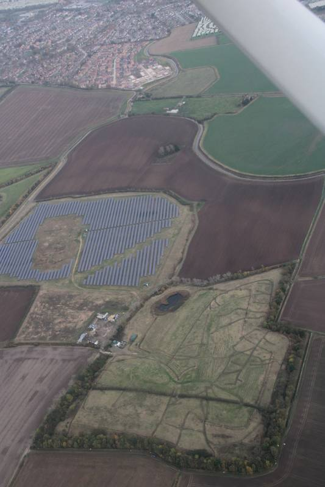
남원시의회 노현이 의원, 공영주차장 태양광 수익 시민에게 돌리는 조례 발의 추진…토론회서 협동조합 모델 논의
10일 '공영주차장 햇빛에너지 주민소득화 방안 토론회'에 시민·전문가 30여 명…전주시 에너지센터·환경운동연합·공동체지원센터 발표

필리핀 케손시, 2년 안 돼 태양광 용량 73% 늘려 58.55MW…시청·공립학교·시립병원 지붕부터 깔았지만 가정 보급은 1%도 안 돼
싱크탱크 ICSC 위성·기계학습 분석, 95% 넘게 지붕형…지붕 잠재량 4,916MW, "가정·소상공인 초기 비용 덜어 줄 금융·인허가 필요"

서울에너지공사 지난해 태양광 사업 집행률 77%…최두호 시의원 "노후 설비 교체·도심 태양광 확대 연차별 실행계획 내라"
공사 "운영 끝난 발전 부지 넘겨받아 고효율로 바꾸고 공영주차장 태양광 단계적 확대"…전기차 충전기 위탁업체 임금 체불로 관리 하루 멈춘 일도 질타

강원도 108억 원 현물출자한 대관령 풍력단지, 연 순이익 3억 원 그쳐…도의회 행감서 "경제성·주민 피해 다시 따져야"
강원개발공사 운영 단지 예상 매출 21억 원…유지보수·인건비 오르면 수익 더 줄 수도, 소음·저주파·그림자 깜박임 등 사회적 비용도 거론

서울 학교 3곳 지붕 시민햇빛발전협동조합 태양광, 사용료 1,470만 원 밀려…학교마다 대응 제각각
서울시의회 행정사무감사서 지적…인헌고는 사용허가 취소, 상원초는 독촉 공문만 11차례, 협동조합형 20개교·민간형 12개교 안전점검 요구

해남 혈도 간척지 400MW 국내 최대 태양광, 착공식 석 달 지나도 공사 흔적 없어…주민 160여 명 "매립면허 무효" 행정소송
주민 몫은 발전사업비 4%까지…해남 간척지 대형 태양광 11건 1,785MW, 군은 "연말까지 이익 환원 세부 지침"

여수시, 유인도 40곳 에너지 전환 '2030 RE40' 추진…2027년부터 섬에도 공공부지 태양광·햇빛소득마을
계통 연계 섬 25곳·미연계 섬 15곳 맞춤 이행안…디젤 발전 줄여 섬 주민 전기요금 부담 낮춘다

일본 규슈, 영농형 태양광 5년 새 4.4배…전국 설치 농지 24%는 수확 2할 넘게 줄어 정부가 허가 조건 강화
후쿠오카 야메 차밭은 차광 시설에 패널 얹어 월 7만~8만 엔…농수산성 '차광률 30% 미만·연 판매 50만 엔 이상' 새 조건에 업계 "일률 규제 지나쳐"

시흥형 RE100, 산단 소상공인 1,068곳이 전자투표로 지붕 태양광 결정…20년 햇빛소득 180억 원 기대
스틸랜드 1만2,613kW·찬성 86%, 시민협동조합 주차장 발전소 394kW 가동…태양광 허가용량 2023년 말 44MW→129MW

콜로라도 첫 플러그인 태양광 비영리단체 출범…세입자·관리조합 규약 보호 주 법 시행 앞두고
솔라 액세스 콜로라도 9일 출범…HB26-1007, 설치를 합리적 이유 없이 막지 못하게 규정
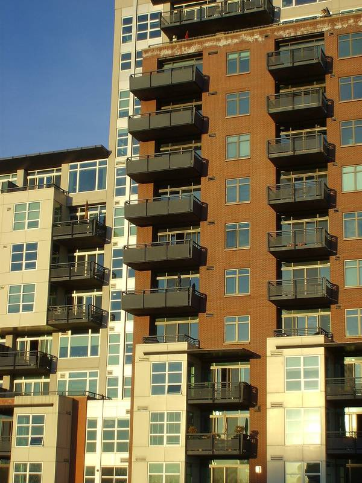
BHESCo, 이스트본 전역으로 '태양광 동네' 사업 확대…전기요금 최대 25% 낮추기 목표
주택 소유자·세입자·지역 사업장 모두 대상…오프젬 에너지 보상 기금으로 운영

셰틀랜드 지역에너지 활동가들 "스코틀랜드 지역에너지 지원금, 여러 해에 걸쳐 주도록 바꿔 달라"
가을에 배정받은 CARES 자금은 이듬해 3월 중순까지 써야…큰 사업을 쪼개 공사가 겨울로 밀려


독일 '에너지 셰어링 연합', 이웃끼리 태양광 전기 나누기 막는 걸림돌 없앨 11가지 제안…"배전망 회사에 처리 기한과 불이익을"
6월부터 법으로 허용됐지만 정산 절차·스마트계량기 보급 지연·높은 비용에 막혀…협동조합·시민에너지 단체엔 "너무 복잡하거나 수지가 안 맞는다"

'맨발 대학' 설립자 벙커 로이 별세…학교 문턱도 못 간 시골 여성들을 태양광 기술자로 길러 낸 81년
1972년 인도 라자스탄 틸로니아에 세운 학교에서 배운 여성들이 고향 마을로 돌아가 태양광 조명 설치·운영·정비…여러 나라 여성들도 와서 배워
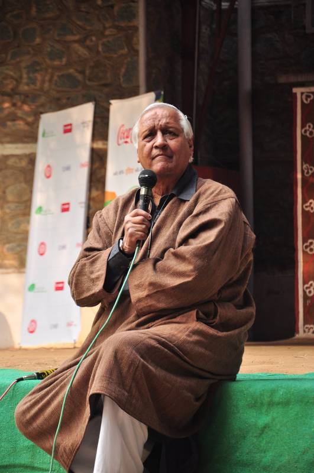
아일랜드 코크 이웃들, '솔라 메할'로 지붕 태양광 함께 설치…먼저 한 단지는 가구당 한 해 약 1,000유로 아껴
이웃이 함께 큰일을 치르는 전통 '메할(meitheal)'을 태양광 공동구매에 접목…자원봉사 모임 '노스사이드 솔라', 단지마다 다시 쓸 수 있는 방식 만들어 북부 지역에 넓힐 계획

충북개발공사, 음성군 공영주차장에 첫 공공주도형 태양광…발전 순이익 50% 20년간 군에 돌려준다
한전KDN과 함께 세우는 특수목적법인 '충북솔라링크'가 캐노피형 설비 운영, 군은 부지·행정 지원…'충북형 표준모델'로 도내 다른 시·군에 넓힐 계획

호주 연구진 "재생에너지 지역 혜택, 반짝 지원 말고 오래 남는 유산으로"…지역기금 2030년 2억1,300만 호주달러 전망
시드니공과대 분석 "지역 고용 효과 아직 뚜렷하지 않아"…원주민 지분·수익 5% 공유 입찰, 지역 훈련, 영농형 태양광 계획 인정 제안

일본 야마가타 사카타서 '지역에 뿌리내린 영농형 태양광' 심포지엄…"매일 전기 짜 주는 젖소 같다"
요네자와 농민 35아르 논에 눈 고장용 수동식 패널 670장…원전 사고로 떠났던 후쿠시마 농민은 영농형으로 농업 복귀, "사람 없는 중산간지에 사람 부를 가치"

일본 사가시, 시가 52% 출자한 지역 전력회사 세워…청소공장 전기를 공공시설 113곳에 직접 판다
자본금 5,000만 엔 중 시 2,600만 엔·민간 6개사 400만 엔씩…연 약 1만6,000MWh 판매, 시 밖으로 새던 전기요금 지역에 남긴다

대전시, 17일 재생에너지 정책 포럼…'태양광 가치를 지역과 나누는' 시민 참여형 모델 찾는다
세계태양광총회 특별세션으로 에너지자립마을·산단 지붕 태양광 사례 발표…에너지연·한전KDN과 분산에너지 협약, 특화지역 지정 기반으로

이탈리아 세티 교수, 이웃끼리 나눠 쓰는 태양광 전기를 공공재로…법정 고정가 도입하면 전기요금 20~30% 줄어든다
볼로냐대 교수가 11일 라벤나 강연 앞두고 제안 설명…2차 변전소 45만 곳 아래 공유 전력을 시장에서 떼어 kWh당 8.5센트 예시, 망 요금도 쓴 구간만큼만

청사포 해상풍력 절차 재개에 해운대구의회 다시 반대…40MW로 줄였지만 해안선 750m 거리 그대로
사업자 10월 일반해양이용협의서 제출…구의원 5분 발언에서 경관·소음·어업 피해 들어 철회 요구, 구의회는 2021·2022년에도 백지화 결의

독일 알트비히스하겐 의회, 10일 석면 지붕 무료 교체·태양광과 풍력단지 지자체 몫 안건 다룬다
소방서·옛 학교 지붕을 운영사가 교체하고 패널 설치…풍력단지는 가동 때부터 지자체에 0.2센트 지급, 의회 결정은 아직

체코 풍력 마을 3곳 "소음·건강 걱정 현실 안 돼"…수익은 투자자와 맺은 조건 따라 갈려, 쓰레기 수수료 없앤 곳·한 번 받고 끝난 곳
그루나 2006년부터 4기·베주니체 2009년부터 2기·아넨스카 스투단카 6기, 주민 민원 없어…경관 반대는 남아, 세 곳 모두 "착공 전 주민 소통과 투자자 선택이 가장 중요"

미국 미네소타, 태양광 밑에서 양 2,200마리·채소 20여 종·젖소 키운다…영농형 태양광 초기 성과 잇따라
공동체 태양광 정원 패널 밑에서 소작농 3명이 농사, 케일은 노지보다 잘 자라…가족농은 자비 7만5,000달러로 높이 14피트 구조물, 7만5,000에이커 미만이면 대기 중인 태양광 모두 수용

독일 베트부르크시, RWE와 49% 지분 나눠 가진 60MW 풍력단지 가동…갈탄 노천광산 옆 시 안 풍력 약 156MW로
9기 중 7기 7MW·2기 5.7MW, 이론상 약 3만6,500가구분…kWh당 0.2유로센트 주변 지자체에 연 최대 25만 유로, 주 시민에너지법으로 시 안 단체도 수익 나눔

제주형 기본사회 토론회서 도민 에너지 기본배당 제안…풍력·태양광 초과 발전 이익으로 에너지 취약계층·섬 가구에 기본수당
제주도 정책토론회, 은민수 한국보건복지인재원장 4대 정책 제시…기본의료 모빌리티·생태보전 참여소득·청년 사회돌봄 참여소득도

호주, 세입자도 '꽂아 쓰는 태양광' 길 열리나…에너지 장관들 플러그인 태양광·배터리 안전 기준 마련 착수
가구 열에 셋이 세입자, 이사 갈 때 들고 가는 800W 안팎 소형 설비…서호주 12월 9일까지 의견 수렴, 시민단체 "2027년 7월 1일까지 전국 허용"

부산 다대포 첫 공공주도형 해상풍력 99MW, 내년 상반기 착공 추진…사하구 주민 56.7% 찬성 속 반대 서명 7,000명 넘어
다대포항 3~5㎞ 앞바다에 9.9MW 국산 터빈 10기, 2030년 상업운전 목표…어민 상생협약·지역협의회 운영, 주민 수익 공유 방안 논의

일본 이와키시, 2027년 4월부터 시청 본청사 등 12곳 전기를 시내 재생에너지 발전소 전력으로…초·중학교 등 공공시설 114곳도 전환
시와 연계 협정을 맺은 업체가 시내 발전소 전력을 모아 공급, 실제 공급할 소매 전기사업자는 17일~12월 3일 온라인 경매로 선정

춘천시의회 의원연구단체, '주민소득 기반 햇빛도시 조합' 지원 연구 중간보고…발전 수익을 주민 소득으로 잇는 제도 설계
'ESG 실천 연구회' 5일 시의회 소회의실서 용역 중간보고회, 윤민섭 회장 등 의원 5명 참석…조합 지원책과 제도 기반 마련이 목표

시흥시, 솔라리그 최우수상 3년 연속…시화방조제 자전거길 태양광 수익으로 청소년 쉼터에 태양광 기부
자전거길 761.6kW·스틸랜드 12.6MW 햇빛소득 사업 성과…시, 산업단지와 공공시설로 '시흥형 RE100' 확대
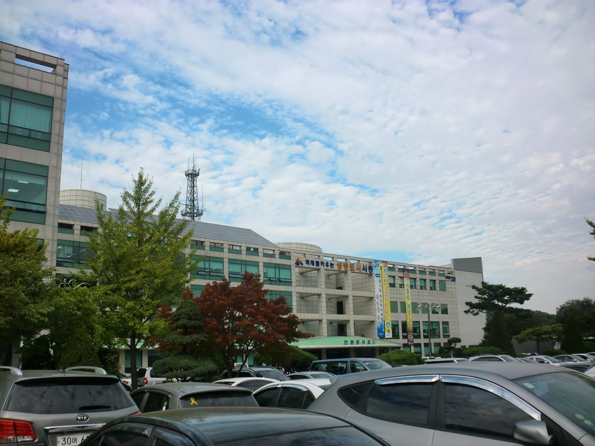
고양도시관리공사, 태양광발전소 6곳 직접 짓고 운영…지방공기업 가운데 유일하게 '대한민국 솔라리그' 수상
2020년부터 지난해까지 모두 2,811kW 구축, 연간 약 3,200MWh 생산·온실가스 약 1,644톤 감축…부지 발굴부터 설계·시공·운영까지 자체 수행
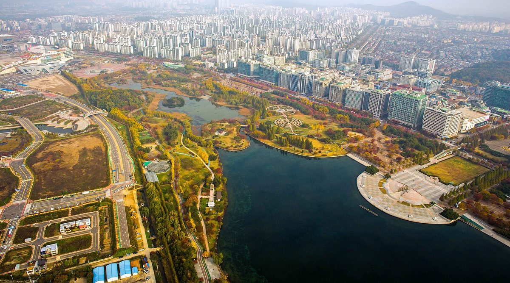
미국 캘리포니아 메사 그란데 부족, 첫 공공 태양광·배터리 완공…연 60MWh 발전, 전기요금 연 16,780달러 절감
비영리단체 SELF가 설계·기금 조성, 부족민 4명 고용…주택 최대 150채 계획의 첫 단계 12채는 2028년 봄까지

보령 농민들, 영농시설 지붕 태양광 막는 사용승인 3년 조항에 특례 요구…시의회에 조례 개정 탄원
버섯재배사·곤충사육사 지붕은 사용승인 3년 뒤에야 허가, 축사는 빠져…실제 농사 확인된 기존 시설만 풀어 달라


시화·화옹 간척지 최대 3GW 영농형 태양광…땅 57%가 안산 대부도인데 안산시 계획엔 용량·이익공유 '빈칸'
대송단지 2,515ha에서 벼농사 짓는 38개 조합 보상·참여 방식도 정해지지 않아

미국 메릴랜드 하워드 카운티장, 태양광 사업 문턱 높인 의회 조례에 거부권…"에너지 자립·요금 부담 해칠 것"
처음엔 태양광 신규 사업 일시 중단안으로 출발, 농지보전위원회 승인 권한 키운 수정안으로 통과됐으나 되돌아가

태안 해상풍력 주민참여 설명회 두고 어업인연대 "직접 이해관계자 없다는 답변 나와"
태안군은 주민참여 비율 4% 이상 추진 밝혀…연대는 고발장·추가 설명회 요구, 사업자는 "대출 한도 설명일 뿐"

"수도권 전기가 왜 우리 동네를"…무주군민 800여 명, 신장수~무주영동 송전선로 백지화 궐기대회
범군민대책위 "입지선정서 일방적으로 무주 포함"…노선 철회·통과 구간 최소화 요구, "지역이기주의로 왜곡 말라"
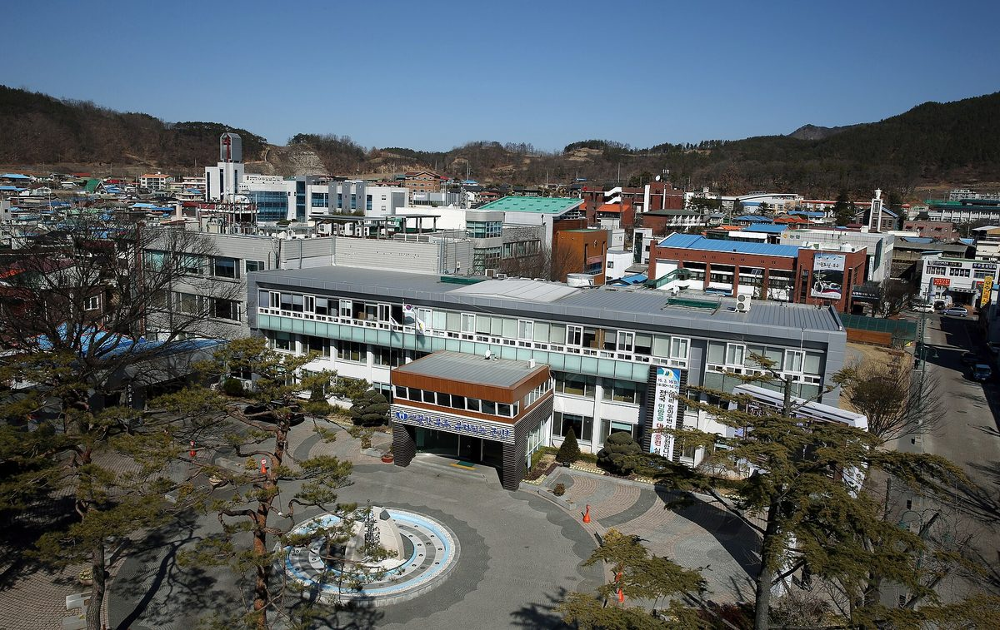
당진 합덕·우강·면천 마을 3곳 태양광 반발…이격거리 상한 시행 뒤 시는 "자의적으로 막기 어렵다"
성동리 주민 80여 명 진정, 송산3리 73명 반대 서명…당진시 심사 중인 발전사업 180여 건


군포시 방음터널 태양광, 솔라리그 장관상…외부재원 86억 원으로 사업비 58% 충당
대야·삼성지하차도 합계 1,329kW, 대야지하차도 시비 22억 원 줄고 상부 임대로 연 2,500만 원 세입

나주호 수상태양광 반대대책위 "보상 협상 아니다"…입장문서 전면 백지화 재확인
대책위 한쪽 입장…20년 373억 원 환원안은 합의 안 된 금액이라 주장, 사업자·시 답변은 아직 없어

장흥군, 유치면 49MW 육상풍력 집적화단지 3차 민관협의회…지정 신청 앞두고 주민 참여·이익 공유 방안 논의
대천리 일원 풍력단지, 협의회 의견은 사업계획에 반영하고 기후에너지환경부 집적화단지 지정 절차 밟기로…구체적 이익 공유 비율은 아직 안 나와

인제 곰배령 아래 진동2리 주민들, 풍력발전기 설치 움직임에 다시 반대…인제군 "다수 반대 사업 추진 안 해"
2년 전 훼손된 풍황계측기 인근 야산에 다시 서고 업체가 '주민참여형 풍력연금'·마을발전기금 내건 우편물 보내…주민 "보호지역 생태·관광 해친다"

불가리아 소피아 시 소유 지역난방 회사 위기…시장은 '양허가 유일한 해법', 사회당은 '35년 넘길 수 없다'
열교환소 286곳 고장으로 멈춰 동부 소피아 난방·온수 끊겨…시의회, 19일 경영진 청문 뒤 정상화 대책 표결
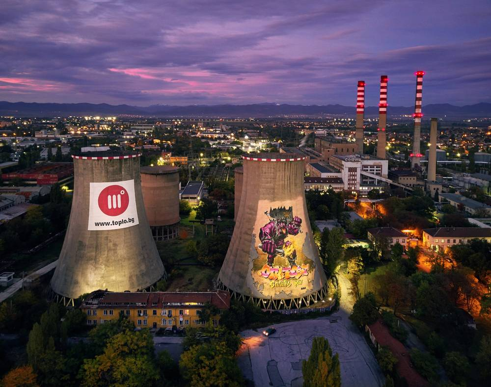
미국 콜로라도 4개 시 공동 소유 공영 도매전력사 PRPA, '2030년 무탄소 전력 100%' 시한 삭제…2027년 도매요금 평균 7.5% 인상
이사회 10월 29일 의결, 무탄소 목표 자체는 유지…2030년 무탄소 비중 80% 남짓 전망, '더 낼 생각 없다'는 주택 고객 48%로 2021년 36%보다 늘어

네덜란드 미덴흐로닝언 공공 열공급사, 호레흐트노르트 주택가 가입 설득 나서…올해 신청하면 연결·보일러 무료
시와 흐로닝언 수도회사 자회사가 공동 소유한 비영리 WarmteCompagnie, 마분지 공장 ESKA의 열 공급…집주인 절반 이상 동의해야 사업 성립, 2027년부터는 보조금 부족으로 무료 연결 어려워

오스트리아 장크트마르틴 면, 환승주차장 2곳 지붕에 태양광 가동…연 30만kWh 전기 면 시설·인근 업체가 모두 쓴다
오버외스터라이히주 뮐크라이스의 장터면, 알러스도르프·슈타펜에트 주차면 82개 덮어…면장 "전력망에 안 보내고 자가소비", 연방·주 보조금으로

미국 오클랜드항 공영 전력회사, 2025년 공급 전기 84%가 재생·무탄소…항만 측 "민영 전력사보다 요금 평균 약 40% 낮다"
항만이 직접 운영하는 'Port Public Power', 수력·바이오가스·지열을 다른 공영 전력 도시들과 함께 사들여…입주사 전기화로 늘어날 수요에 대비해 새 변전소도 짓는 중

일본 후쿠오카현 고가시, 지역 기업·은행 등 16곳과 함께 출자한 지역에너지회사 '코가네이로' 세워
5월 25일 설립·7월 23일 기념식, 자본금 990만 엔…전력 중개·태양광 PPA·탈탄소 지원 플랫폼 운영 맡아, 사장은 시내 에너지 지출 연 약 150억 엔의 일부라도 지역에 돌리겠다고 밝혀

안동댐 50년 상생 포럼…K-water 수상태양광 '햇빛연금'에 2,000여 가구 참여 방안, 가구당 연 55만 원 예상
와룡면·석동동 주민 참여 방안 담긴 계획 소개…용수 매출 6%·발전 수익 22% 지원사업 출연, 심층수 '물산업파크' 제안과 수질 개선 먼저라는 지적도

신안 해상풍력 11개 단지 3.7GW·22조2,000억 원 계획…시민대토론회서 "바다는 내주고 군민은 어디로"
2030년 말 첫 준공·2031년 이후 주민참여 이익공유 계획…목포는 신항 산업 기반에 3조4,380억 원, 어업보상과 어민 참여 방식이 쟁점으로

이탈리아 아그리젠토, 작은 섬 100% 재생에너지 모델 처음 도시에 들인다…2045년 목표로 재단과 협약
그리닝 더 아일랜드 재단과 양해각서, 시가 시민·공동주택·기업의 재생에너지 생산을 돕는 가속자로…허가·문화재 제약·초기 비용 장벽부터 조사하고 에너지공동체 방식도 검토

덴마크 오벤로시, 카쇠 일대 6,000ha 에너지·산업단지 종합계획 의결…풍력·태양광 4,500ha, 일자리 최대 3,000개 기대
발전사업자가 내는 녹색 기금은 지역 단체·사업에…공사 중 하루 승용차 최대 8,000대·트럭 1,000대, 단지 안 일부 주택 매입 가능성에 주민은 집값 걱정 — 개별 사업마다 허가·환경평가 따로

동서발전·고양시, 일산호수공원 공영주차장 태양광 협약…분산에너지 특화지역 계획도 함께
주차 기능 유지한 경관특화형 모델 개발해 관내 확산, 일산 열병합발전소 현대화사업엔 지역업체 우선 참여…용량·사업비·시민 참여 여부는 안 나와

3조5,000억 원 규모 완도 장보고 해상풍력, 전남개발공사 출자금 부족으로 공공 지분 줄어들 우려
전남광주시의회 행정사무감사서 출자 가능 재원 약 1,300억 원 중 약 1,000억 원 필요 지적…의원 추산 주민 수익 완도 연 267억·신안 216억 원, 집행부는 출자 요청 받은 적 없다고 답변

서울 수돗물 만드는 데 전기요금 891억 원…아리수본부 재생에너지 조달 1.3%, 온실가스 감축은 목표 미달
목소영 서울시의원 행정사무감사 지적…전력 90%는 정수센터 펌프, 고효율 인버터는 4곳뿐, 내년 배출권 구매비 약 2억5,000만 원 전망

한전KDN·홍성군·충남개발공사, 공공 유휴부지 '공공주도형 태양광' 협약…발전수익은 에너지 취약계층 지원에
홍성군은 부지 발굴·행정 지원, 공사·한전KDN은 기획·구축·운영…8월 충남개발공사 협약에 홍성군 합류, 부지·용량·사업비는 아직 안 나와

스페인 메노르카 시우타데야시, 시립 수영장·경찰청·어린이집 태양광 3건 추진…52만6,000유로 들여 배터리 250kWh도
메노르카 섬 의회 재원으로 공공건물 자가소비 늘린다…수영장 60kW→100kW, 경찰청 75kW로 늘리고 어린이집에 15kW 새로 달 계획
봉화 명호면 고계1리, 농촌 RE100 실증마을로…3년간 10억 원 들여 주민 협동조합과 마을발전소
농식품부 공모에 뽑혀 국비·지방비 5억 원씩…주택·농산물 가공시설 태양광과 에너지 진단까지, 발전 수익은 취약계층 지원·마을 공익사업에

호주 캔버라 최대 배터리 250MW 상업 운전…개발사, 15년간 수익 50%를 준주 정부와 나누고 지역 단체 9곳에 50만 호주달러
준주 정부가 건설을 받쳐 주고 운영 수익 절반을 돌려받아 탈탄소 재원으로…최대 수요 때 캔버라 3분의 1에 2시간 전기, 2045년 탄소중립 겨냥

그리스 필리시, 시 태양광 전기로 저소득 1,000가구 무료 전기 이어 대학생 가정 1,000곳 넘게로 넓혀…학업 기간 4~6년
2022년 이후 입학해 재학 중인 학생의 가족 집이 대상, 의대 6년·공대 5년·일반 대학 4년…12월 21일 첫 무료 전기 바우처, 세부 조건은 곧 발표

이탈리아 움브리아주, 재생에너지 발전소 받는 지자체 '환경 보상금' 계산 기준 의결…국가법이 정한 기대 발전 수익 1~4%의 산정 방법 마련
운전 시간·연 발전 가능량(MWh)·전력시장(GME) 지표로 발전소 수명 전체 수익 추정…보상금은 지자체 소유 설비·효율화·지자체가 참여하는 재생에너지공동체에 우선 쓰도록

영국 정부, '에너지 독립 법안' 하원 제출…새 재생에너지 사업에 지역 지분 최대 20% 제안 의무화할 길 열어
5MW 넘는 새 육상풍력·지상 태양광은 지역사회 이익 협약 맺어야, 정부 잠정안은 풍력 MW당 연 5,000파운드·태양광 700파운드…지분 제안 대상은 1MW 이상으로 낮출 수 있게, 비율·금액은 하위 법령에서 확정

미국 매사추세츠 크랜베리 습지 위 영농형 태양광 2곳, 패널 아래 두 번째 수확…땅·설비는 개발사 소유, 영농형엔 1kWh당 9센트 더 줘
킹스턴 4.4MW(배터리 13.5MWh)·플리머스 1MW, 농사 그만두려던 농민 땅을 개발사가 사들여 공동체 태양광으로 전기 판매…습지에 맞춰 기초 깊게 박고 패널은 10피트 높이에

네덜란드 레이우아르던시, 새 주거지구 미덜세이에 '100% 공공 소유' 열망 직접 짓겠다고 제안…새집 1,600채 넘게 공급
붐비는 전력망 부담 덜어 주택 공급 일정 지키려는 구상…요금은 정부 상한보다 고정 20%·변동 5% 낮게, 시의회 11월 25일 결정

"고속도로 방음터널에 시민햇빛발전을"…박필순 전남광주시의원, 행감서 도시형 기본사회 모델로 제안
호남고속도로 확장공사 방음터널에 태양광, 시민 참여·수익 공유 방식 검토 주문…도시 안 농촌 읍·면·동으로 농어촌기본소득 확대도 요구

강물로 만든 전기 수익이 시 살림으로…스웨덴 셸레프테오, 시 소유 에너지 공기업 앞세워 수력 2.7TWh로 산업 유치
지역 소비량 1.5배 전력으로 배터리·친환경 항공연료 산업 끌어와…노스볼트 파산 뒤 라이텐이 공장 인수, 시는 해마다 노인 돌봄·청소년 교육 등에 약 1조 원

한 필지에 태양광 두 개 따로 허가…합치면 2.3MW인데 '2MW 초과' 주변지역 지원은 비켜가나, 고령 대가야읍 주민 반발
대가야읍 본관리 같은 필지에 1.3MW·1.0MW 개별 허가…"용량 나눠 법정 지원 대상에서 빠질 수 있다" 지적, 고령군 "법인 다르고 시설 따로 갖추면 계통 연계 막기 어려워"

포르투갈 코임브라대 연구팀 "1MW 이하 태양광은 사전 인허가 면제인데도 일부 지자체가 수수료·추가 서류·일괄 금지로 막아"
EU 연구사업 PERSIST 팀, 2022년 법령으로 풀린 소규모 설비에 지방 수수료·'지자체 이익 선언서' 요구·근거 없는 기본계획 금지 여전하다고 진단…지자체에 계획 정비·법적 한계 준수·절차 예측 가능성 등 3가지 권고

영국 워킹엄·웨스트버크셔 의회, 의회 소유 농지에 태양광 단지 직접 짓는다…패널 4만3,000장·3만5,000장
워킹엄 2,400만 파운드 들여 40년간 해마다 100만 파운드 넘는 이익 기대, 웨스트버크셔는 1,860만 파운드로 40년 1,000만 파운드…공공시설 전기 대고 남는 전기 팔아 재정 보탬, 영국서 약 20개 지자체가 이미 태양광 단지 직접 운영

미국 앤아버 시영 전력 '제안 E' 비공식 집계서 부결…반대 51.83%, DTE가 계속 전기 공급
시민단체가 2020년부터 이어 온 '민영 전력망을 시영으로' 운동 3.66%포인트 차로 막혀…DTE서 180만 달러 받은 반대 단체·시의회 다수는 반대, 새 시장·주 상원의원·연방 하원의원은 지지
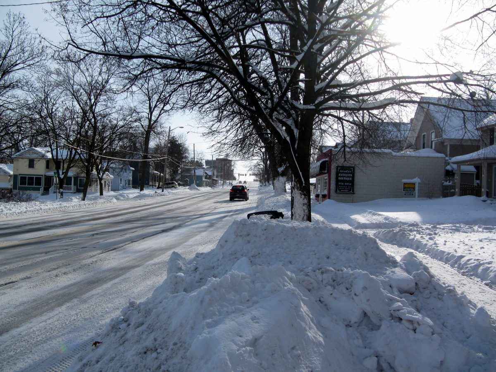
"택지·산단 공사에 맡기면 재생에너지는 뒷전"…전남광주시의회 행감서 '도시개발에너지공사' 통합 재검토·에너지공사 별도 설립 요구
박형대 의원 "두 공사 매출총이익 중 에너지사업 비중 1.2%·0.15%"…김승남 광주도시공사 사장 "전문성 갖춘 에너지공사가 출범해야 한다는 생각 변함없다"

일본 영농형 태양광 2027년 새 기준에 업계 반발…차광률 30% 미만·판매 실적 50만 엔 기준이 소농·신규 농가 막을 우려
솔라셰어링 추진연맹 곤도(近藤恵) 공동대표 "농림수산성 우수 사례 7곳 중 5곳이 차광률 30% 이상"…시정촌 기본계획·인정 절차까지 더해져 대기업에 유리, 진입 문턱 낮추고 정기 점검으로 걸러 내자 제안
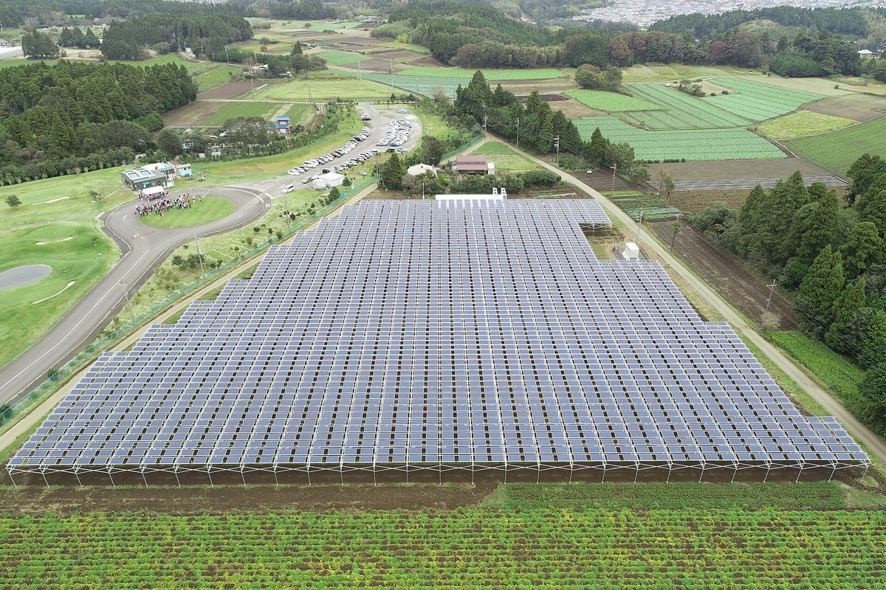
서울 전력자립률 1년 새 11.6%에서 6.8%로…노연수 시의원, 통계에서 빠진 베란다 태양광 40MW 통합 관리 요구
서울시의회 기후환경본부 행정사무감사…서울시는 소규모 베란다 태양광 관리 어렵지만 안내 중, 보급 확대엔 국내 산업 지원 함께 가야

뉴질랜드 애슈버턴 지역의회, 오르는 전기요금에 태양광 검토…연 40만 달러 절감에 500만 달러 넘는 선투자 놓고 의원 이견
연 전기료 약 177만 달러, 다음 주 장기계획 예산 심의서 부서별 태양광 안 검토…"그 돈 도로에 쓰는 게 낫나" 대 "건물 지붕에 조금씩"

평창군, 봉평 유포리 150MW 태양광 업무협약 앞둬…발전사업 지분으로 군민 기본소득 재원 만든다
10월 운두령 풍력 협약 이어 5일 정상그룹과 협약 예정, 두 사업 모두 2029년 상업운전 목표…군유지 유휴부지·취소된 풍력단지 재개발 검토해 2035년까지 지분 확대, 지분율·배당액은 아직 미정

스코틀랜드 SSEN, 스카이 송전선 보강 지역에 546만 파운드 기금…신청은 내년 2월 10일까지
첫해 최대 180만 파운드, 신청 1건당 최대 10만 파운드…주택·공동체 자산 등 5개 분야 우선 심사

프랑스 퐁테베크, 목재 칩 지역난방 준공…830만 유로 중 시 부담 240만 유로, 사회주택 786가구 난방비 1월부터 15% 내려
인구 6,400명 시가 보조금으로 사업비 73% 채워 열 배관 3.2km 깔아…85km 안 숲의 목재 칩 연료, 시청·학교 등 시 건물 20곳도 연결, 짓고 운영하는 것은 시공사 에네르시옹

미국 뉴욕주 율리시스 타운, 도로관리 창고 부지에 태양광…전기는 타운홀·가로등 등 공공 계량기 4곳에 나눠 상계
타운 의회, 상한 9만4,164달러 설치 계약 만장일치 승인…주 정부 보조금 10만 달러로 충당, 2011년부터 지붕 태양광 운영해 와

미국 패서디나 시영 전력회사, 태양광 160MW·저장 130MW 6건 협상…시 소유 부지 태양광 공모도 진행
2031년 전기 100% 무탄소 목표…글레나암 발전소 25MW 배터리 11월 착공, 중앙도서관 주차장·로즈볼·컨벤션센터는 따로 공모, 배전망에 붙는 200kW 넘는 지역 사업도 사들여

프랑스 코르시카 인구 300명 마을 코자노, 공공건물 지붕 태양광 가동…바이오매스·소수력 이어 세 번째 재생에너지
지붕 약 1,300㎡에 사업비 약 9만 유로, 5만 유로는 코르시카 에너지청 지원…전기는 팔지 않고 공공건물끼리 나눠 쓰는 집단 자가소비, 시장은 건물 전기 사용 약 40% 감소 전망

영국 햄프셔 태들리 자원봉사 운동장 '발로스 파크', 24.64kWp 지붕 태양광으로 문 닫을 위기 넘겨…해마다 4,200파운드 넘게 절감 예상
연간 에너지 비용 1만2,000파운드 넘자 자치구 의회 지역기반시설기금 보조로 패널 50장 넘게 설치…20년 8만8,000파운드 절감 전망, 잉글랜드농촌보존운동(CPRE) '최우수 지붕 태양광' 상

진도 군유 간척지 41MW 태양광 '임대 가능' 회신 논란에 부군수 "개인 땅인 줄 알았다"…"다시 입찰·계약해야, 허가도 안 나"
2025년 12월 건설과 '조건부 가능' 회신 뒤 사업자 허가 신청, 부군수 "부서 간 미스, 과장들 보고 없었다"…기존 영농법인 임대 2028년 말까지, 최종 의견서에 임차권 어떻게 반영됐는지는 설명 없어

같은 댐 수상태양광, 합천은 주민 1,400여 명 투자로 가동하고 용담은 멈췄다…나주호 9년 갈등에 비춰 본 '주민 의견 묻는 순서'
합천댐은 군과 함께 25인 주민협의체 꾸려 설명회·공청회 10여 차례(수공 자료), 용담댐은 사업자 주도 설명회에 반발 끝 중단 통보…나주호는 허가 신청 뒤에야 의견 조회, 농어촌공사·사업자·나주시 답변은 아직

스페인 마드리드 자치주, 문화재 청사 '알칼라 31' 지붕에 자가소비 태양광 입찰…지붕 630㎡ 중 130㎡만 쓸 수 있어
예정가 8만2,922.30유로·공사 약 2개월, 패널 59장 최대 출력 20.65kW…탑 그늘·냉난방 설비·문화재 보호로 면적 제한, 패널은 바닥과 나란히 깔아 외관 영향 줄여 문화재 위원회 동의

일본 후쿠이 미하마 정, 호숫가 시설 지붕 태양광으로 충전하는 '전지 추진 유람선' 승객 5만 명 넘어…적자로 출자 법인 물러난 뒤 정이 직영
2023년 4월 개업한 미카타고코 네이처 크루즈, 레이크센터 지붕 태양광→축전지→배로 전기 공급…2025년 1월부터 정 직영으로 여행사 영업·SNS 홍보 늘려

독일 슈투트가르트 시, 하수처리장 반응조 위에 2,745kWp '접히는 태양광 지붕' 짓는다…완공되면 독일 최대, 2027년 2분기 첫 발전 예정
모듈 5,280장으로 1만7,493㎡ 덮고 강철 케이블에 매달아 모터 120대로 눈·강풍·우박 때와 밤에 접어…해마다 220만kWh 넘게 만들어 처리장 전력의 약 9% 자가소비 예상

미국 켄터키 퍼듀카 공립학교, 폐교 부지 태양광 단지 전기 지역 전력회사에 파는 계약 승인…해마다 2만~2만5,000달러 절감 예상
2024년 받은 연방 에너지부 보조금 87만5,000달러로 옛 포리스트힐스 학교 부지에 지어 올여름 완공, 교육감 "절감액은 학교 안전에" 구상…배터리 저장장치는 앞으로의 바람, 학생 현장 학습·수업 단원도

프랑스 노르망디 뵈즈빌, 학교 2곳·급식실 가스 난방을 지역 목재 칩 바이오매스로…80만 유로 들여 해마다 약 3만 유로 절감 기대
인구 4,700명 소도시, 잦은 보일러 고장·가스값 급등에 전환 결정…10월 29일 보일러실 첫 모듈 설치, 이번 겨울 끝 무렵 학교 열망의 가스 비중 10%로

루마니아 고르지 군 트르구카르부네슈티, 시청 소유 1MW 태양광 단지 공사 마쳐…국가 전력계통 연결 앞둬
총사업비 650만9,322레이, 2024년 8월 에너지부와 지원계약…시청·산하 기관·가로등 전기 자가소비용…시장 "600만 레이 중 280만 레이 받아, 나머지 와야 연결", 내년엔 병원까지 전선 잇고 저장 배터리 사업도 신청

미국 펜실베이니아 앰브리지 보로, 비영리 3곳 돕는 'RISE' 사업으로 지붕 태양광…11월 5일 가동식
연방 에너지부 농촌 공동체 상금으로 시작한 2년 사업의 두 번째 설비…시공 업체 "25년 동안 납세자 부담 약 50만9,000달러 줄어" 추정

미국 위스콘신 레이크밀스 학군, 초·중학교 지붕 태양광·배터리 준공…추정 사업비 140만 달러 중 보조금 50만 달러 넘게 모아
지역 태양광 업체 제안에 태양광 협동조합이 보조금 작업 맡아…초교 전기 23%·중학교 41% 상계 예상, 정전 땐 배터리로 최대 3일 버텨

일본 우스키시 지역전력회사 '우스키에너지', 과자 회사 농지 3,000㎡ 위 영농형 태양광 전기를 시 공공시설 2곳에…연 7만6,000kWh 예상
오이타현 노쓰마치, 높이 약 3m 기둥 위 패널 아래서 대학생들이 생강 유기재배 실증…산·관·학 함께 그늘 속 생육·여름 농작업·연작 가능성 살펴, 결과는 내년 1월 공개

프랑스 티에르세 면, 볼 경기장 지붕 2,440㎡ 태양광을 지역 태양광 회사에 30년 공공부지 점용으로…면은 해마다 3,000유로 받아
연간 508MWh 발전 추정, 연말 전 가동 예정…에라블 거리 주차장 차양 패널 1,106㎡는 설치 끝나 전력망 연결만 남아
루마니아 브라쇼브 시, 22ha에 20MW 태양광 단지…2027년 가동해 학교·극장·가로등 등 시 기관 전기 90% 충당 계획
부시장 "저장 배터리 구매 절차 중"…처음엔 국가 전력망에 넣고 시 전기요금과 정산, 사업비·재원·부지 위치는 공개 안 해

경남 이격거리 조례 둔 15개 시군 모두 개정 시행령 기준과 어긋나…도로 이격거리 그대로, 의령은 주거지 700m
9월 18일 시행 재생에너지법 시행령은 주택 200m 이내만 허용·도로 기준 근거 없어…거제·진주 등 8개 시군 주택 500m, 창원·김해·양산은 조항 없어

프랑스 도르도뉴 혼합경제회사 SEM 24, 광역 지자체 땅에 연 5,150MWh 태양광 준공…지역 제과 공장에 20년 고정가로 직접 판매
패널 7,668장·사업비 510만 유로 중 60만 유로는 누벨아키텐 지역 지원, 그랑 페리괴는 7ha를 30년 장기임대로 내주고 해마다 사용료…전력망 포화 때 출력 제한으로 저장 배터리 검토

멈췄던 강원 고성 흘리 풍력, 군 30%·주민 20% 지분 SPC 세워 '주민주도형'으로 다시 추진
간성읍 흘리 10만9,776㎡에 7MW급 발전기 7기, 사업비 약 1,500억 원…지난달 도 도시계획위원회 심의 등 행정절차 들어가, SPC는 앞으로 세울 계획이고 송전선로가 남은 과제

조인호 전남광주통합특별시의원, 완도 금일 600MW 해상풍력 주변해역에 김 등 해조류 양식면허지 새로 확보하자 제안
5분 자유발언서 양식 적지 조사와 2027·2028년 양식장 이용개발계획 반영, 특별시·완도군·발전사업자·어업인 협의체 구성 주문…청년 어업인 정착 공간 필요하다고 강조, 집행부·사업자 답변은 아직 없어

진도군, 영농법인 임대 2028년까지 남은 군유 간척지에 태양광 임대 가능 회신…41MW·410억 원 민간 사업 선점 논란
지산면 보전 간척지 35필지에 민간 발전사업자 허가 신청, 기존 5개 영농조합법인은 동의한 적 없다고 밝혀…군은 절차 재검토 중인 것으로 알려졌지만 직접 해명은 아직 없어

제주 어민 대책협의회, 해상풍력 협의에 '실제 조업 어업인' 참여 요구…마을 이익공유만으로는 어장 상실 못 메운다
한동·평대·대정·신창·추자 해상풍력 거론하며 착공 전 조업 실태 조사·민관협의회 구성 촉구…제주도·사업자 입장은 아직 안 나와

그리스, '에너지 공유 권리' 담은 전력시장 법안 의회 제출…다른 건물에서 만든 태양광 전기도 가정·중소기업·지자체가 나눠 쓴다
법안 12조로 전력법에 137Γ조 신설…6MW 이하 설비는 제3자가 운영 대행, 공공 소유 설비는 공유 전기의 평균 10% 이상을 취약가구에 돌리도록 노력해야

루마니아 북부 바르사나 면, 에너지부 재원 189만 레이로 약 0.5MW 면 소유 태양광 공사 시작 명령…가로등·면 기관 전기 충당
마라무레슈주 상수도 양수·정수장 옆 약 7,000㎡ 부지에 전기차 충전소 함께…저장 배터리, 공공건물 지붕 태양광·열펌프 사업은 농촌투자기금청에 신청

서천군의회, 농어촌 기본소득 지원·기금 조례 의결…기금 쓰임새에 '주민 수익형 재생에너지 사업' 넣어
의원 발의 조례 2건 원안 가결, 기본소득은 지역화폐로 주고 기금은 2031년 말까지 일반회계 전입금·운용 수익금·기부금으로 꾸려…지급액·대상 규모·지급 개시일은 아직 정해지지 않아

풍력 멈춘 가파도, 공공기관 주도 'RE100 마을'로 재도전…풍력 600kW·태양광 990kW·ESS 7MWh
첫 에너지 자립섬 설비 고장 끝에 2024년 9월 풍력 철거, 지금은 150kW 디젤 3대가 전기 공급…한전·에너지공단·한전KDN이 2026~2027년 추진, 예산은 220억 원 구상에서 올해 80억 원으로

제주 재생에너지 이익, '직접 배당'과 '공공기여' 나눠 제도로…지역 기획, 상설 협의체·정보 공개·성과 지표 담은 실행 로드맵 주문
기존 풍력단지 실태 조사→시범사업→평가·보완→확대 단계 제시, 전기요금 절감액·주민 배당액·환원액·참여율로 성과 따져야…민간사업자 부담은 법적 근거부터

호주 내러브라이 군의회, 광산회사 화이트헤이븐 태양광에 '규정상 1% 약 56만6,000달러인데 5만 달러'…만장일치로 주 장관에 해명 요구
추정 사업비 5,660만 호주달러 태양광, 2026년 9월 주 정부 승인…군은 지난해 5월 5만 달러 제안 거절, 의원들 '재생에너지든 광산이든 같은 규칙이어야'

프랑스 칼바도스 두 마을에 풍력 7기·39.9MW, 2027년 초 가동…마을 몫은 지방세와 '마을길 사용료' 연 8만~10만7,000유로
2022년 4월 허가 뒤 소송에 막혀 2024년 12월에야 확정…3기 서는 바루앙오주 연 약 8만 유로, 4기 서는 노레앙오주 연 약 10만7,000유로, 코뮌 연합 약 17만1,300유로·도 약 9만6,000유로

루마니아 오크나무레슈시, 시 태양광으로 한 해 590MWh 만들어 시 소비 444MWh 넘겼지만 요금은 다 못 덜어…EU 현대화기금에 1.72MWh 저장장치 사업 신청
낮에 kWh당 0.40~0.65레이에 내보내고 밤에는 1~1.30레이에 사는 값 차이 때문…약 50만 유로 사업은 사실상 전액 무상 지원을 노리고, 시장은 배터리를 가득 채우면 가로등을 하룻밤 넘게 켤 수 있다고 설명

독일 치메츠하우젠 풍력 14기, 투자사는 '30년 최대 2,300만 유로' 계산서…시장은 반대, 가구당 전기 할인은 연 45유로
가동 첫 15년은 영업세 거의 없고 토지 임대료는 사유지 주인 몫…법정 분담금 연 약 28만2,000유로는 마을이 내는 군 분담금 240만 유로의 10분의 1 남짓

루마니아 아라드시, 시유지 25.5ha에 태양광 24곳·저장장치 짓는 안 시의회 표결에 올려…학교·유치원 등 13개 공공기관 전기 98.5% 충당 추정
400kW씩 모두 9.60MW·저장 2만5,056kWh, 사업비 8,547만여 레이 중 5,590만여 레이는 EU 현대화기금에 신청 예정…11월 20일 신청 마감 맞춰 타당성 조사 접수 이튿날 임시회로
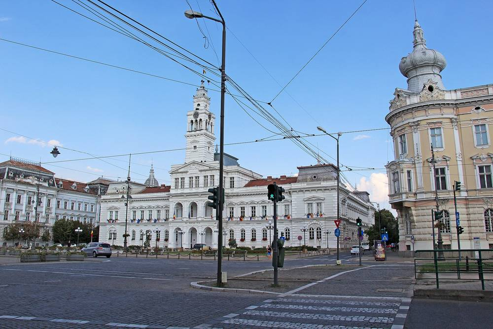
스코틀랜드 공공소유 보고서 "권한만으론 부족"…공공 토지 위 사업·풍력 리파워링에 지역 지분 조건 붙이라고 권고
영국 지역경제전략센터(CLES) 10월 26일 공개…사우스래너크셔는 학교·체육시설 태양광 3,035kWp 전기요금 절감액을 다음 설치에 재투자, 하일랜드는 버스 직영으로 연 170만 파운드 넘게 절감…스코트윈드 수입 투입도 제안
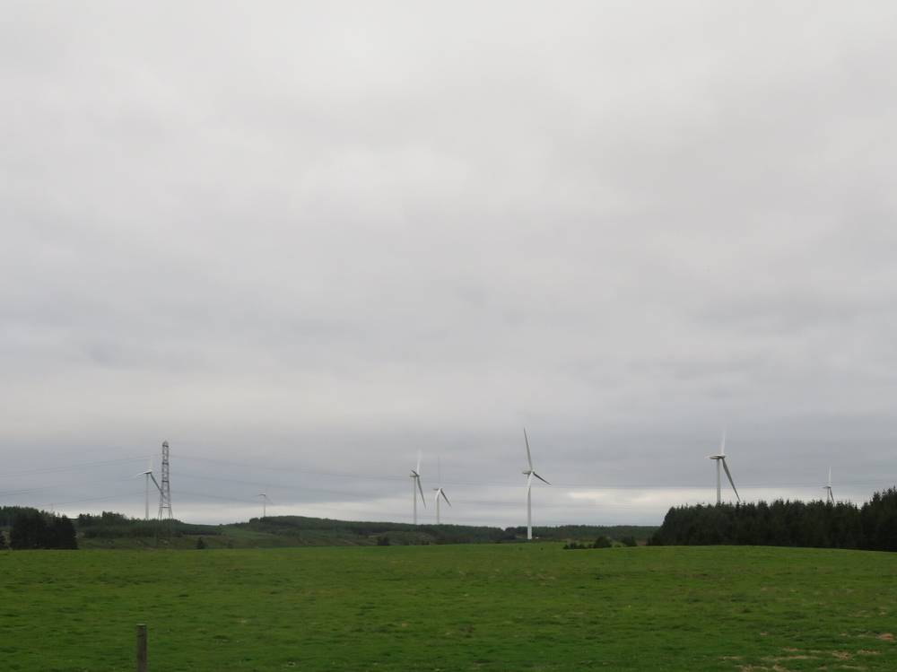
그리스 서마케도니아 도의회, 국영 전력사·아마존 데이터센터와 지역 발전 협약 협상단 꾸리기로…지역구 국회의원은 태양광 500MW 지역 몫 제안
도지사 안 찬성 17표로 통과, 협상 불가 조건부터 정하자는 야당 안은 8표…쿠쿨로풀로스 국회 부의장, 땅·물 내주는 대가로 500MW 짓게 해 도·시가 함께 지역 전력 공급 회사 만들자고 제안, 전기값 MWh당 50~60유로 주장

스페인 레온시, 시 건물 13곳 지붕 태양광 2,481장으로 전기 나눠 쓰는 공동 자가소비…유럽 정치혁신상 받아
10곳에 배터리 1,970kWh, 시 계획상 100곳 넘는 시 시설에 공급…사업비 250만 유로 중 100만 유로는 EU 기금, 연 390만kWh 생산 추산…전기 많이 쓰는 시설 수요 85% 충당이 목표
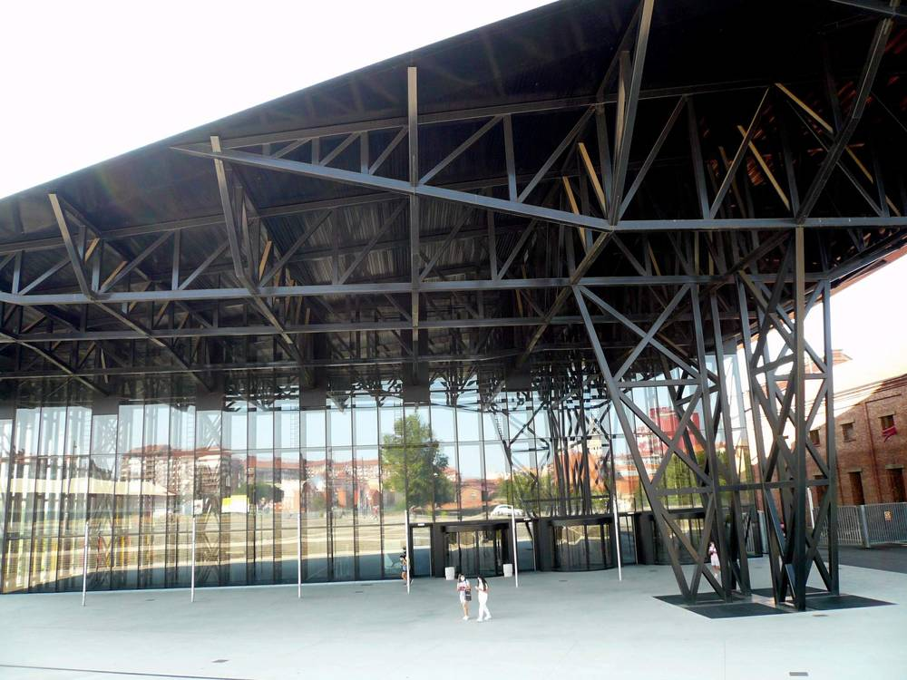
이탈리아 시라쿠사시, 법원 주차장 지붕 태양광 811kWp 전기 팔아 줄 사업자 찾는다…학교 전기로 계획했던 설비
시 추정 연 수입 10만5,000~16만1,000유로(MWh당 80~120유로 가정)…위탁 24개월에 2년 연장 가능, 지금은 관심 표명 접수 단계…판매 수입을 학교에 쓸지는 정하지 않아
미국 리틀록시, 항만 부지 태양광 4.9MW 완공…시 전력 약 70% 상쇄·연 100만 달러 절감 기대
6.3MW(DC) 규모, 시 "1,200만 달러 예산 안에서 마쳐"…시공사 "예산보다 87만 달러 적게", 2030년 시 운영 전력 100% 청정에너지 목표
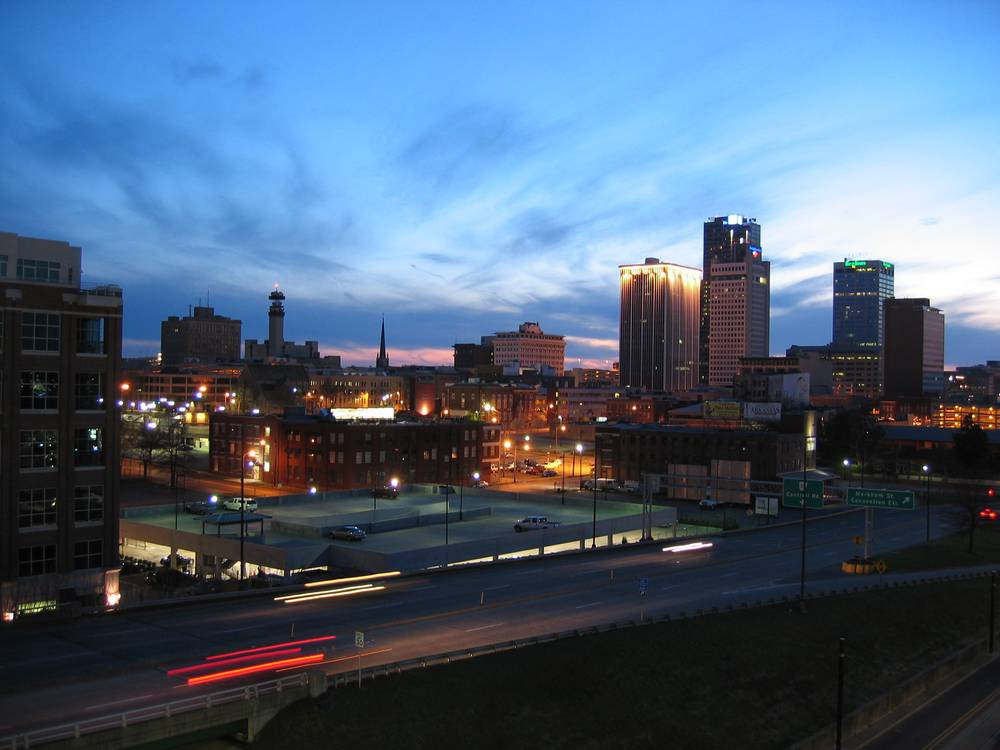
루마니아 프라호바주 8MW 공공 태양광 단지, 11월 말 패널 설치 마무리…병원·학교·가로등 전기와 상계
주 의회가 캄피나시·코마르니크읍과 함께 짓는 I.D.-R.E.S. 3, EU 현대화기금 5,300만 레이 넘게 들여…송전은 2027년 7월 추정, 다음 과제는 저장 배터리
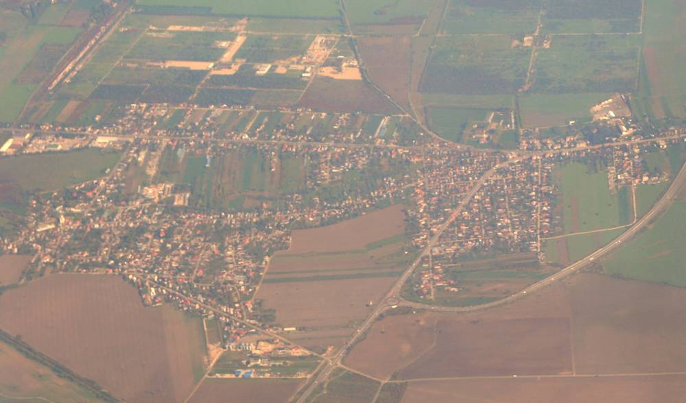
윤희신 태안군수, 주민 수용성 없으면 해상풍력 승인 못 한다…군 추진 집적화단지는 주민 이익공유 기반
태안군개발위원회 군정 현안 간담회서 밝혀…태안해상풍력 행정절차엔 찬반 의견 함께 제출, 반대 어업인·단체와 충분히 협의하라고 사업자에 주문

인천 앞바다 해상풍력 7GW 앞두고 연구진 미래전략안 발표…어업인 상생·지역 전력 지산지소·섬과 원도심 편익 공유 등 22개 과제
인천TP 시민포럼서 임효숙 동국대 교수 3대 분야·9대 중점전략 제시…인천시 확정 정책 아닌 연구진 안, 11월 의견수렴 거쳐 12월 중순 최종안

브라질 히베이랑피르스, 공공건물 12곳에 태양광…국가전력청 효율 사업에 두 번째 선정돼 460만 헤알 받아
시청·보건위생국·시립학교 9곳 등 보건·교육·치안 시설 대상…2024년 첫 선정 땐 420만 헤알로 10곳, 용량·절감액은 공개 안 돼
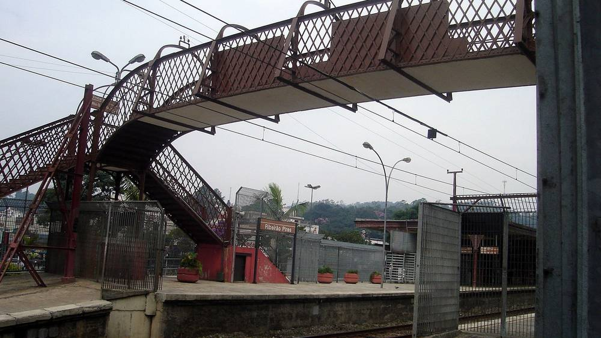
미국 클리블랜드 시영 전력, 여름 정전 뒤 요금 인상 요청…늘어난 수입으로 2028년 3,000만 달러 빌려 설비 개선
120년 된 시 소유 전력회사 CPP, 고정요금 신설·많이 쓸수록 비싼 요금 구조 제안…지역 재생에너지 직접 생산도 전략계획에, 시의회 "개선 일정 없인 승인 어려워"

대만 핑둥 츠산 마을, 옛집 고친 돌봄 거점 지붕에 6kW 태양광…아낀 전기요금을 어르신 밥상에
주민이 내놓은 빈 옛집 '라오춰54' 수리 때 환경보호국 권유로 설치, 촌장 추산 월 약 2만 대만달러 요금 절반 줄여…저장장치 없어 정전 땐 못 써

영암 2GW 집적화단지, 사업계획 자료 없이 동의서만 받아…기존 민간 임대계약 처리엔 "당장 답하기 어렵다"
23일 토지소유자 간담회 쟁점 정리, 예정지 땅 대부분 이미 민간업체와 개별 계약…영농형 아닌 일반 태양광으로 농지 일시사용 최대 23년, 빠르면 2029년 착공

전북 16개교 지붕·주차장에 태양광…'햇빛이음학교' 시범사업, 업체 선정 들어가
교육부 특별교부금 약 25억 원, 본관동 8곳·주차장 4곳 등에 설치…나라장터 공고 5건(8개교)은 모두 수의 견적·본점 전북 요건, 나머지 8개교 공고는 아직 검색 안 돼

파주시, 에너지전환포럼 에너지전환상 지방자치 부문 수상…공공 재생에너지 기업 직접 PPA·아파트 알뜰 전기요금제 추진 평가
10월 28일 '2026 에너지전환의 밤'서 시상, 시는 기초지방정부 첫 수상이라고 밝혀…기업 공급 용량·전기요금 절감 규모 같은 숫자는 발표에 없어

제주 한림해상풍력 주민 투자 300억 원 가운데 200억 원은 공단 정책융자…투자 배당과 도민 공공 환원을 나누자는 제안 나와
인근 3개 마을 주민 1,009명 협동조합 투자, 저리 융자 대상은 거리·거주 기간·어업권 피해로 제한…추자해상풍력 '주민 우선, 도민 확대' 구상엔 금융비용 격차·배당 소외 우려, 지역 일간지 기획 연재 마무리 제안

서산 관내 발전용량 68만kW 중 주민 수익 마을발전소는 218kW, 0.03%…시의원 "주민참여·개발이익공유 조례안 준비"
김애란 서산시의원, 첫 시정질문서 주민협동조합 설립 컨설팅·이익 배분 기준 마련에 집행부 협조 요청…조례안은 발의 전 단계, 재생에너지 대목 시 답변은 알려지지 않아

미국 캘리포니아 메사그란데 부족, 행정동 3곳에 태양광·배터리 마이크로그리드…산불 예방 단전 때도 부족 대피처로
부족이 소유·운영하고 태양광 자격을 딴 부족원이 시공에 참여…전기요금 연 1만6,780달러 이상 절감 예상, 새 주택 1,500호에도 같은 방식 계획
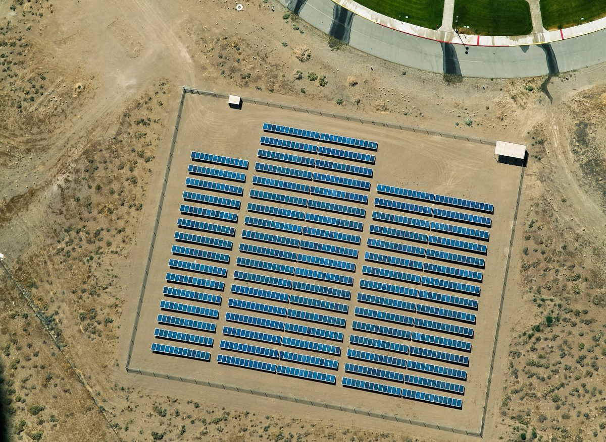
베를린 공영 지역난방 회사 BEW, 유럽투자은행서 5억 유로 대출 한도…"2030년 석탄 끝내고 하수 열 대형 히트펌프로"
첫 2억5,000만 유로 서명·최장 25년…KfW 대출 10억 유로에 이어 2030년까지 약 35억 유로 투자, 상수도공사 하수 열·청소공사 소각장 증기 활용

미국 입스위치 시영 전력, 집 단열·히트펌프 비용 먼저 대고 전기요금으로 10년 무이자 회수…내년 1월 'ReInvest' 시작
농무부 대출 500만 달러로 약 200가구 예상…절감액이 비용의 80% 이상 메울 공사만 지원, 이사 가면 남은 부담은 다음 거주자에게

독일 브라운슈바이크 에너지회사 대주주 베올리아 "지분 50.1% 팔겠다"…시 "되사들일 수 있는지 곧 협의"
2002년 시가 지분 74.9%를 민간에 넘긴 지 24년 만에 재공영화 갈림길…지분은 베올리아 50.1%·시 25.1%·튀가 24.8%, 직원 1,200명 넘어
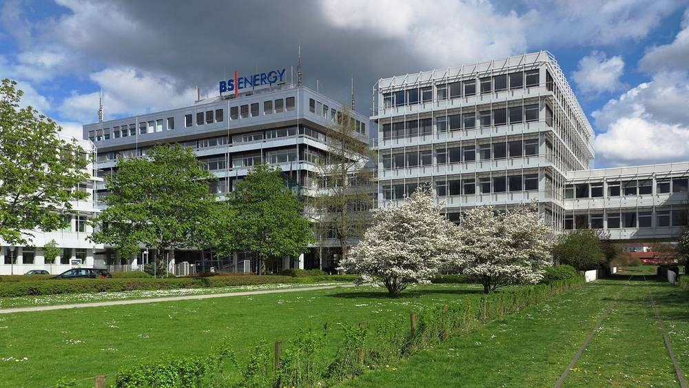
프랑스 '주차장 태양광 지붕 의무' 첫 기한 석 달 지났지만…대형 식품매장 큰 주차장 85%에 보이는 설비 없어
민간 주차장 태양광 지도 업체 파르크선, 매장 1만6,790곳 항공사진·라이다로 첫 전국 실측…설비 비율 2023년 4.5%→2026년 9%, 업체별 3% 안팎~16.3% 격차, "대상 주차장 절반 덮으면 약 6.3GWp·연 7TWh" 추산
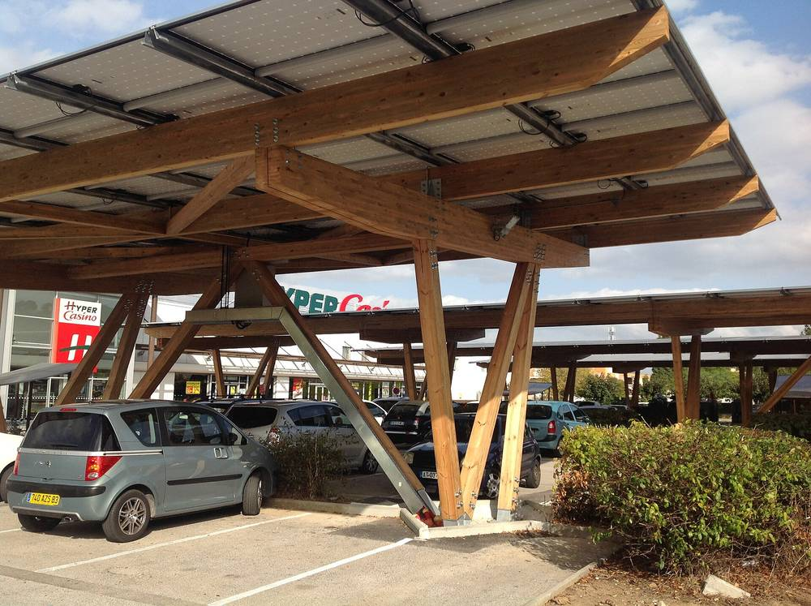
미국 보이시, 지열 난방을 저렴 공동주택 300가구 넘게로 넓힌다…마이크론, 부족 재원 250만 달러 출연
시 주택토지신탁 프로그램과 개발사 J. 피셔의 러스크 주택지구, 10%는 노숙에서 벗어나는 주민에게…블룸버그 자선재단 100만 달러로 지열 확장 시범, 세액공제·채권·시 재원 겹쳐 2027년 봄 착공 예정, '미국 도시 첫 시도'는 사업 주체 설명
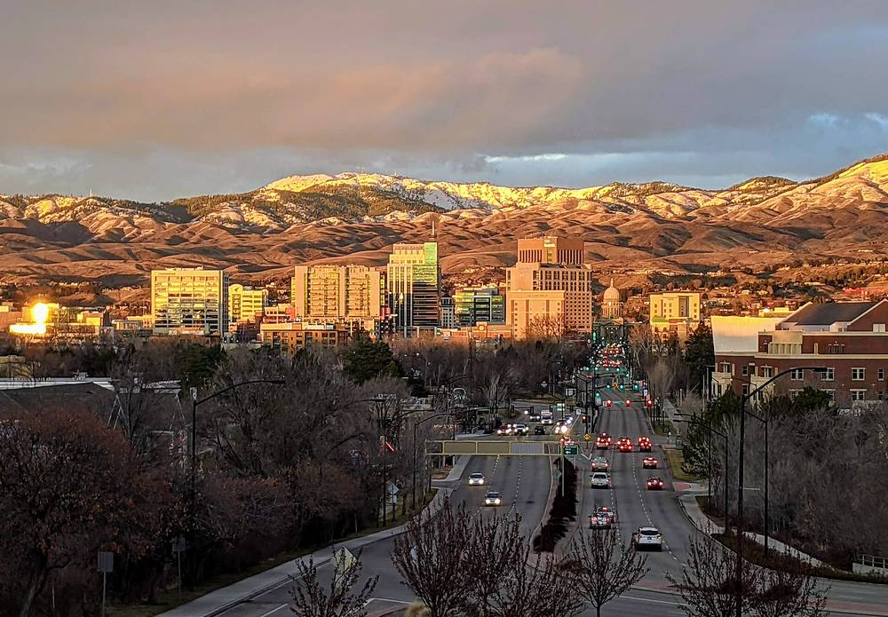
스페인 바야돌리드 야당 "시영 임대주택 지붕 태양광 2년째 공유 자가소비 안 돼…71가구 혜택 못 받아"
3개 동 합계 50kW, 2024년부터 계통 연결…VTLP 주장, 시 행정 절차 마무리 요구, 지연 이유에 대한 시 설명은 보도에 없어
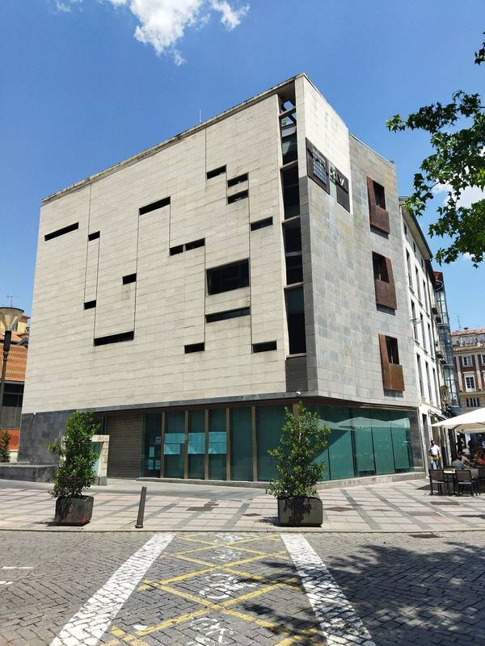
네덜란드 위트레흐트주, 공공 열 회사 'Uwarmte' 설립 추진…1,930만 유로 출자 요청, 10년간 약 1만5,000가구 연결
주 20%·배전사 자회사 40%·국영 열투자사 40% 공동 지배 구조…12월 16일 주의회 표결 앞둬, 주민 열 공동체와 "경쟁 아닌 분담" 약속
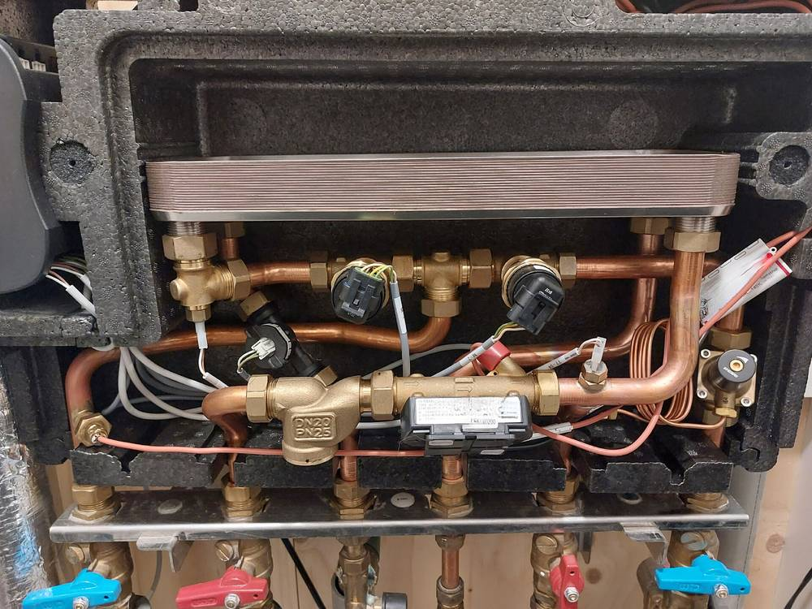
평창군, 월 15만 원 '평창형 기본소득' 재원으로 풍력·태양광 수익 꼽아…민선 9기 안 지급 목표
정부 농어촌 기본소득 공모 국·도비와 신재생에너지 사업 수익을 함께 쓰는 '투트랙' 구상, 8월 군청에 에너지전략 TF…공모 선정 여부·발전 수익 규모·재원 구조는 아직 안 나와

수도권매립지 2매립장 위 154만㎡ 쓰임새 시민 숙의 시작…태양광·공원·식물원·UAM 시험장 놓고 2027년 3월 토론회
인천시, 29일 시민숙의 학습마당 열어…폐기물 8억4,717만 톤 묻은 땅, 기후부 태양광안에 주민 반발 뒤 숙의로 돌려, "특정 시설 결정된 것 아냐"

경기도 적극행정 최우수로 뽑힌 안성 금석천 RE100공원, 6개월 뒤 사업 접어…19억5,000만 원 계획에 토지 매입비 약 40억 원 빠져
폐천부지 점용 전제로 짰지만 땅이 용도폐지돼 무상 사용 막혀…시의회 답변선 4필지 중 3필지가 2023년 용도폐지, 6,300만 원 설계용역은 중도 종료

오산시, 공영주차장 4곳에 태양광 1,217kW 시 직접 운영 추진…판매수익 담을 기후대응기금 조례안 마련
삼미·은계·독산성동문·은빛개울공원 주차장 대상, 공공건축물로 넓힐 계획…에너지 조례 전부개정안엔 '시민참여형 에너지 사업 지원 강화' 담겨

제주, 제2기 분산에너지 특구 신청 모델 3개 내놔…신례1리 100세대 이웃 간 전력 직거래, 함덕 임대주택 48세대 지붕 태양광 공유
같은 변전소 생활권 660만㎡ 안에서 한 해 발전량 70% 이상을 직접 쓰는 '커뮤니티 마이크로그리드형'…11월 5일까지 도민 의견 받아 신청, 지정 여부는 12월 결정

류경완 남해군수, 에너지 자립의 섬 군정 핵심으로…배전망 ESS·분산에너지 특화지역 공모 대응, 햇빛소득마을 수익 주민에게 돌리겠다
취임 100일 인터뷰서 송배전망 수용 용량 부족을 재생에너지 확대의 걸림돌로 꼽아…한국에너지공단 이사장에게 ESS 사업 유치·햇빛소득마을 활성화 건의, 공모 선정·마을 수는 아직 없어

미국 네바다 모아파 파이우트 부족 땅 위 250MW 태양광 10년…50년 임대에 로열티·전기 나눔 없어, 부족장은 다음 사업에 "전력 소유 몫" 추진
원주민 보호구역 안 첫 대형 태양광, 최대 11만1,000가구분 전기는 캘리포니아로…부족은 발전 전기와 발전 수익을 받지 못하고 전기를 따로 사서 써, 이달 네 번째 태양광 착공 예정
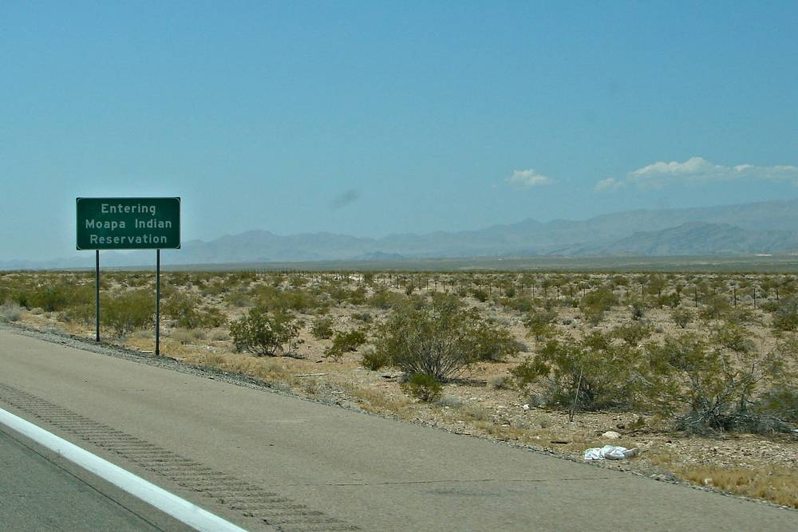
미국 뉴욕 셸터아일랜드 타운 위원회, 재활용센터 지붕 태양광 추진 권고…제안서 9건 평가해 4건 추천
국립재생에너지연구소 18개월 조사 끝 '비용 효율 사업' 결론…상위 제안 회수 12~15년·설비 수명 25~30년, 올해 필요 예산 약 15만 달러, 배터리는 빼기로
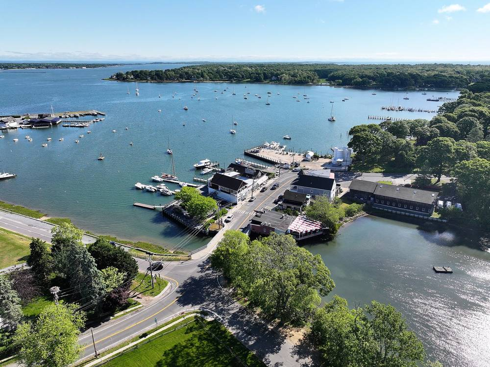
이탈리아 2027년 예산안, 학교·병원·대학 등 공공건물 에너지 개보수에 약 16억 유로…태양광 우선으로 소비 30% 감축 목표
EU와 합의한 에너지 국가 예외 조항 70억 유로에서 재원 마련…알려진 배분은 학교 6억5,000만·의료시설 6억·대학 2억·체육시설 1억5,000만 유로로 아직 확정 전

프랑스 보르도 바칼랑 화물차 주차장 위에 3,648kWc 태양광 그늘막…광역도시·시 공공 주차장 태양광화 사업 두 번째 단계
그늘막 2만2,000㎡로 연 4,377MWh 생산해 전량 전력망 공급, 대형 화물차 통행에 맞춰 구조물 설계…다음은 2027년 여름 빌르나브도르농 환승주차장 300kWc, 발전소 소유 주체와 주민 참여는 밝혀지지 않아
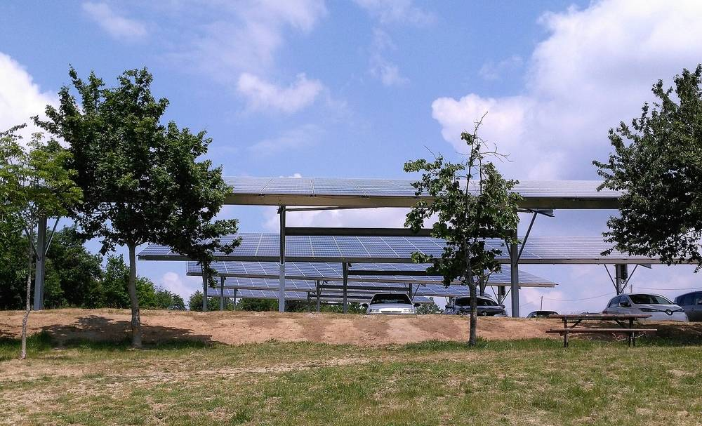
미국 미네소타 이스트그랜드포크스 교육청, 중학교 옆 부지에 120만 달러 태양광…자부담 20만 달러로 해마다 최소 5만 달러 절감 기대
연방 학교 태양광 프로그램 50만 달러 등 보조금으로 사업비 대부분 충당, 내년 초 가동·4년 안 회수 계산…보조금 조건으로 준공 6개월 안에 태양광 수업 교육과정안 내야, 주민 출자 요소는 없어
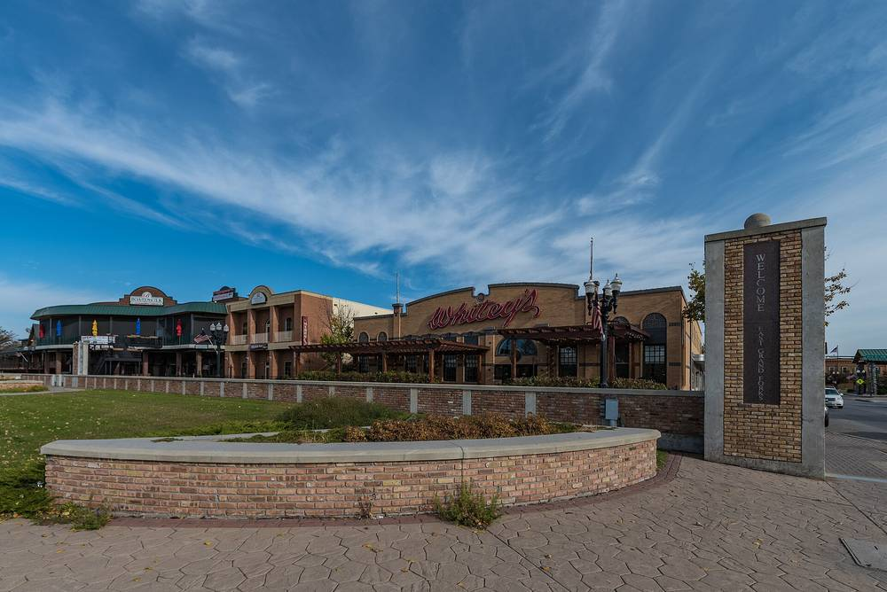
이탈리아 사르데냐 세라만나 시장, 발전소 있는 지자체에 주 재원 고정 배분하는 '에너지 생산지역 기금' 제안
영농형 태양광 준공식서 "보상 넘어 생산 이익을"…새 세금 대신 주가 이미 받는 에너지 세수 일부를 돌리자는 구상, 비옥한 농지 지키는 입지 계획도 요구
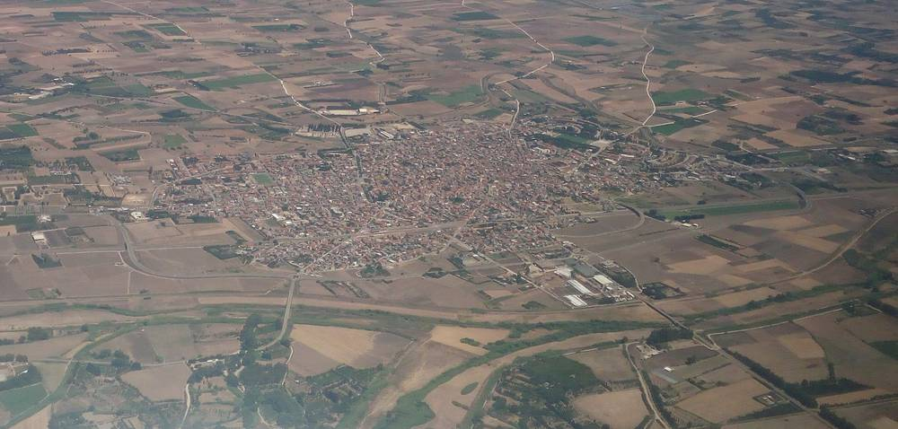
독일 작센 롬마치, 연 14만4,000유로 풍력 수입 누리다 교체 거부…시장 "주도권 스스로 내줘"
2023년 시의회가 낡은 풍력기 7기 교체에 반대하고 인근 주민 전기요금 보너스는 논의도 못 해…새 우선지역 계획에서 빠진 19기는 수명 다하면 교체 어려워, 작센선 4만 명이 풍력 확대 중단 주민발의 서명
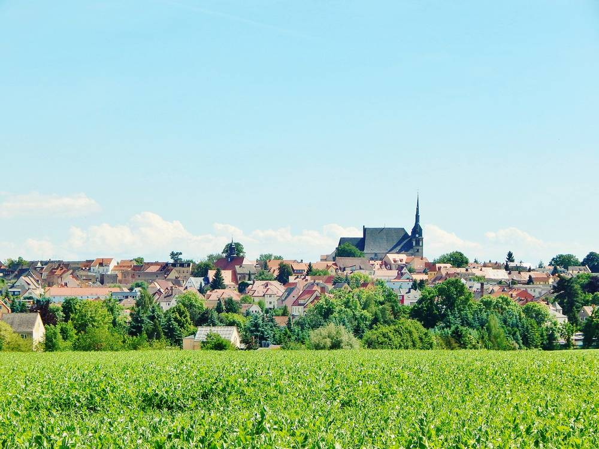
천안 공영주차장 태양광 의무 대상 20곳 중 착수 0곳…공공 유휴부지 더한 1차 추산 28곳·8MW 이상·약 130억 원
지난해 11월 법 개정으로 주차구획 1,000㎡ 이상 공영주차장 설치 의무…시는 재정 부담에 민간 참여 병행 검토, 시민단체는 50면 이하 주차장 확대·2030년 20% 목표 제안

스페인 마하다온다시, 공공건물 11곳 지붕 781kWp 태양광 집단 자가소비 사업 입찰…부가세 포함 98만8,834유로
학교 7곳·체육관 2곳·경찰청사·도서관 지붕에 설치하고 5년 유지관리까지 한 계약으로 발주, 건물별 설치비·연간 절감액·회수 기간 공개…11월 30일 제안 마감, 시민 참여 요소는 없어
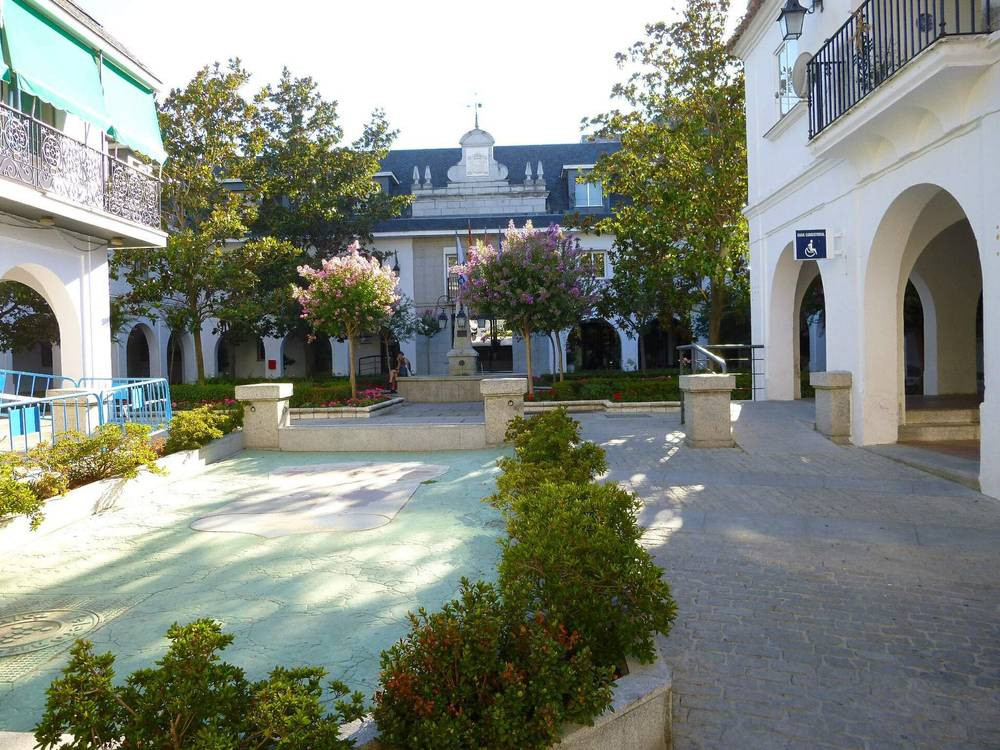
벨기에 플랑드르, 저소득 가구 태양광 설치 동행 지원 중단…난방설비 동행 지원과 합쳐 300만 유로 절감
에너지·기후 장관 2027 정책·예산 설명서에서 밝혀…건당 700유로·평균 6시간으로 5kWp 설치 돕던 에너지하우스 업무, 에너지 빈곤 계획 2030과 방향 엇갈려
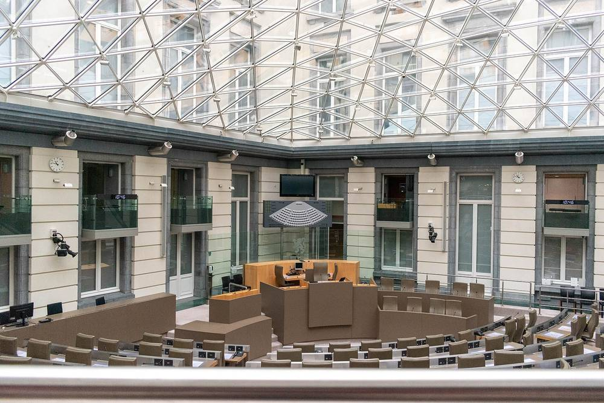
미국 앤아버 전 시의원, 시의회의 시영 전력 제안 E 반대 결의가 선거 중립 위반이라며 주 정부에 진정
10 대 1 결의로 시 변호사에 법적 다툼 지시하고 반대 발언 35분 방송한 것 문제 삼아…시의원 쪽은 투표 앞둔 엉터리 진정이라고 반박, 주 정부 판단은 아직

독일 바이에른 페터스하우젠, 공영 환승주차장 전체를 태양광 지붕으로…연 180만kWh, 2027년 7월 전력 공급 목표
지자체 공기업 KUP가 P&R 주차장 카포트 태양광 착공, 배터리·전기차 충전기·급속충전기도 함께…주 정부 태양광 이니셔티브가 행정구마다 1건씩 지원하는 시범사업
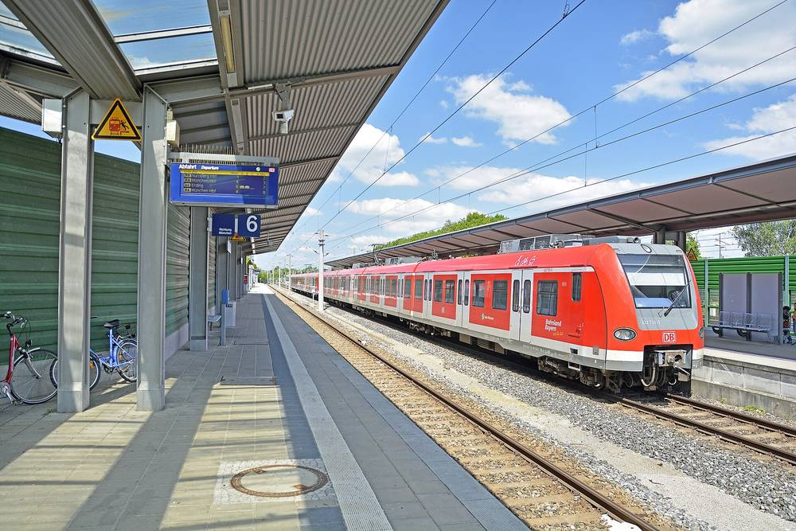
제주도, 주민참여 탄소중립 선도마을 2곳 11월 중순 공개모집…2026~2030년 112억 원 투입
행정동·리 단위로 생활·자원순환·에너지전환 묶어 마을 단위 실증…태양광 설치·마을 다용도시설 RE100 전환 등은 예시, 추진 전후 탄소배출량으로 효과 검증

제주 한림해상풍력 인근 3개 마을, 총사업비 4.7% 투자해 배당…추자해상풍력은 '주민 1순위·도민 2순위' 투자 구상
기존 풍력은 당기순이익 17.5%를 공유화 기금으로…추자 재공모는 연 1,300억 원 고정 조건 대신 다른 방식 검토, 2.37GW 전력 육지 송전엔 해저연계선 900MW 한계

미국 캔자스 포트스콧, 시 정수장에 225kW 태양광·배터리 설치 의결…하수 기금에서 1% 이자로 빌려 짓는다
시 위원회 3 대 1 가결, 사업비 약 55만 달러 가운데 절반가량은 연방 직접지급으로 시 순부담 약 27만 달러…시공사 추산 연 3만 달러 절감·회수 약 8년, 2027년 말까지 가동해야
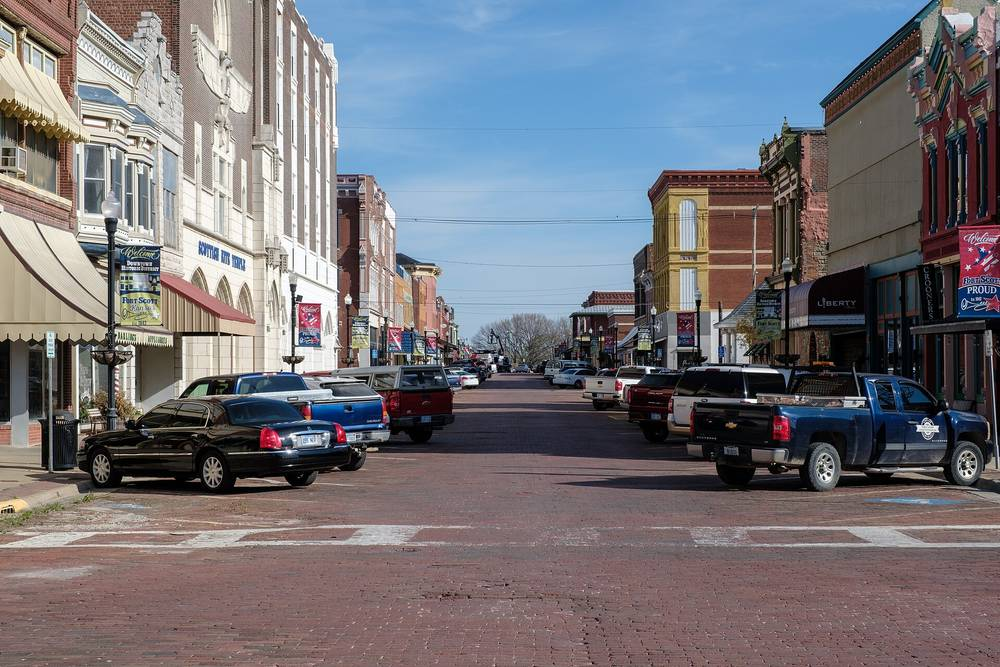
싱가포르, 정부기관 태양광 수요 묶어 통합 입찰…주차장 지붕·건물 벽까지 넓혀 2035년 4GWp 노린다
에너지시장청, 시공사 패널 지정해 기관별 건물 잠재력 평가·맞춤 설치안…산업단지공사는 외벽·컨테이너 태양광 기술 공모, 단독주택엔 공동구매까지 잇는 디지털 포털

이탈리아 칼렌차노, 5명 숨진 에니 옛 연료저장소 18만㎡를 태양광 거점으로…면에 '발전 가치 5%'·1MW 설비 무상 이전 협약
토스카나주·칼렌차노 면·에니 협약 체결, 정화·인허가 마친 뒤 최대 20MW 태양광 추진…배터리 갖춘 1MW 설비는 면에 넘겨 지역 에너지공동체용, 큰 설비 전기 가치 5%는 최대 30년간 면 몫
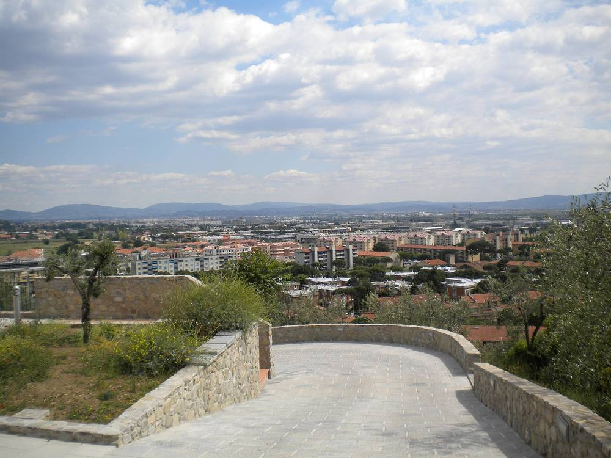
아일랜드 농촌부 장관, 재생에너지 지역이익기금 더 키워야…지금은 발전량 MWh당 2유로를 15년간 의무 출연
정부 새 농촌 발전 전략 발표 자리서 캘러리 장관이 운영사 출연금 인상 바란다고 밝혀, 인상 폭·시기는 안 내놔…마틴 총리는 5년간 전력망 180억 유로 투자로 농촌에 어려운 결정 온다고 말해

미국 뉴저지 우드바인, 덮개 없이 남아 있던 옛 매립지에 10MW 태양광 추진…6,000만 달러 넘는 사업 착공 앞둬
개발사 CEP 리뉴어블스가 설비 소유하고 면은 땅 임대…시장은 가동 전 가입한 주민·사업장이 소득 제한 없이 요금 20~30% 할인받고 면은 30년간 해마다 약 15만 달러 임대 수입 얻을 것으로 내다봐
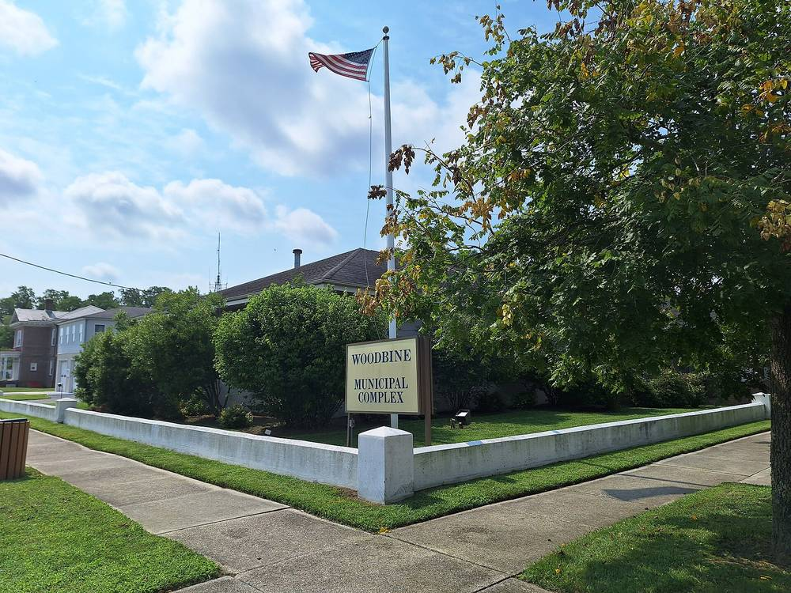
영국 주택협회 피바디, 공공임대 아파트 한 동이 지붕 태양광 1기 나눠 쓰는 'FlatSave' 참여…스티버니지에 첫 설비
E.ON Next·Allume Energy 상품, 공용 배터리로 전력망 도우면 주민에 연간 지급금…회사 측 "요금 최대 60%·지급금 연 최대 160파운드" 주장, 먼저 설치한 웨일스 트리발리스 "많은 경우 최대 50% 절감"
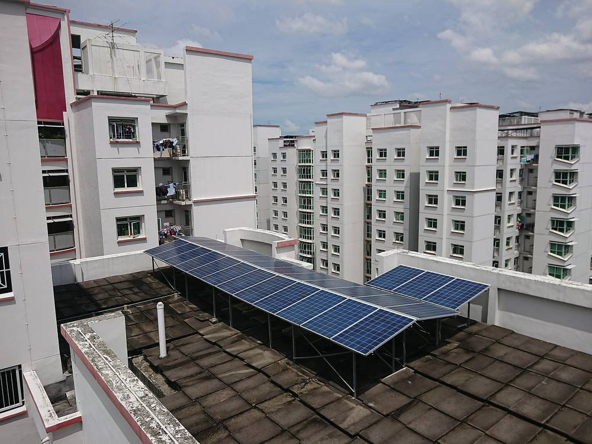
프랑스 오드, "개발업자보다 마을이 먼저"…도 에너지조합·농업회의소 협약, 면·농민 공동 재생에너지 사업 1~3곳 공모
시아덴(Syaden)·오드 농업회의소, 10월 23일 나르본서 협약…공공건물 지붕부터 단계적으로 땅 위로, 초안 뒤 면이 기업 응모 받는 순서로 바꿔, 공모 마감 2027년 1월 18일
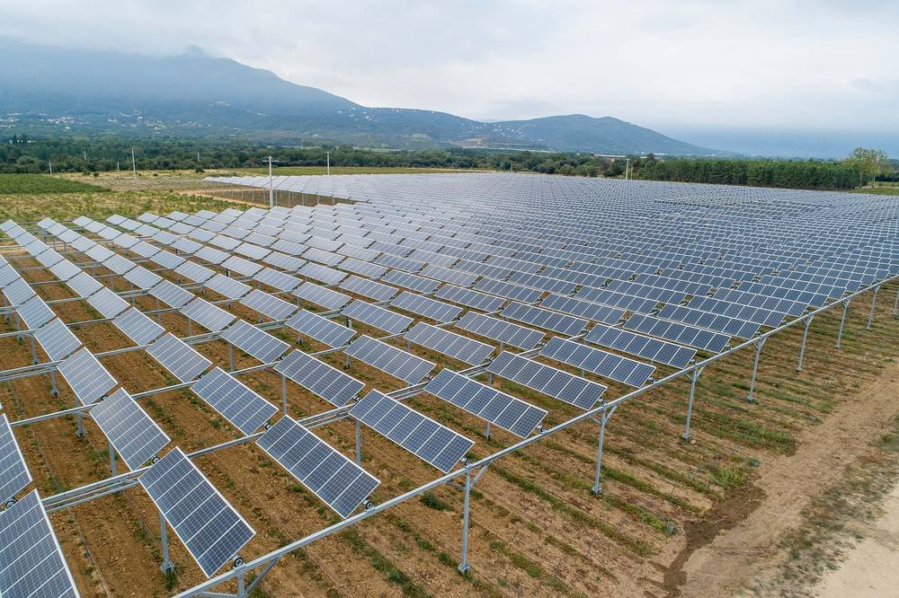
뉴욕주의회에 민간 전력회사 공공 매입 법안 계류…로체스터 공공 전력 운동, 지역 전력회사 공영화의 길로 삼으려
센트럴 허드슨을 채권으로 사들여 요금으로 갚는 방식…운동 단체는 공영 전력 요금이 13~63% 싸다고 주장, 카운티의회는 2024년 타당성 조사 예산 16 대 13 부결

서호주, 호주 주 가운데 처음으로 플러그인 '베란다 태양광' 합법화 추진…안전기준 의견수렴 시작
에너지장관, 가구당 전기요금 연 240호주달러·배터리 함께 쓰면 500호주달러 절감 추산…지금은 팔 수는 있어도 꽂아 쓰면 불법, 법 개정 시점은 미정
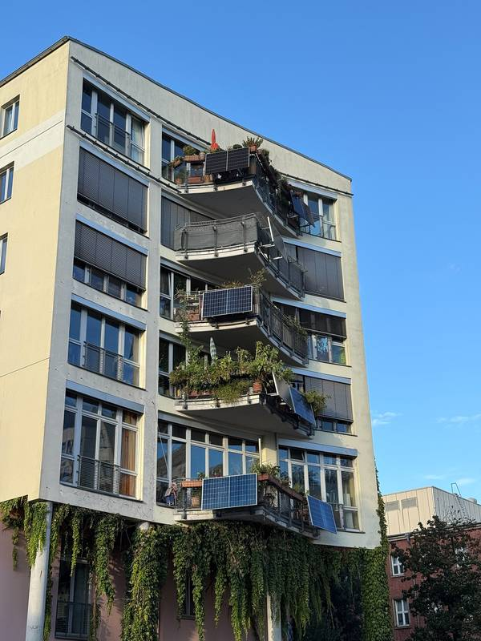
프랑스 툴롱 행정청사 지붕 372㎡ 태양광, 남는 전기 이웃 국가기관과 '집단 자가소비'로 나눠
생산량이 청사 사용량보다 절반가량 많아 지름 2km 안 공공건물에 배분…도지사 "전기요금 10% 낮출 수 있다", 바르도에선 지자체 17곳 이미 가동·30건 추진
루마니아 시비우시, 4.8312MW 시 소유 태양광 단지 계약…가로등 등 공공시설 전기요금 상계
델룰 더이 부지에 EU 현대화 기금 2,805만 레이, 연 최소 6,468.574MWh…2027년 초 착공 뒤 5개월 안에 가동, 남는 전기 담을 배터리 2,547만 레이는 따로 신청

호주 킴벌리 외딴 마을 6곳, 지붕 태양광 183채가 495가구 전기요금 깎아 줘…3년간 크레딧 약 27만5,000달러
서호주 전력공기업 호라이즌 파워 '킴벌리 마을 태양광 절약' 이달 마무리, 약 1.5MW·평균 8.2kW…패널 없는 이웃도 요금 크레딧, 경유 약 12만2,000리터 대체

벨기에 자연보호단체 나투르퓐트, 에코파워의 메헬렌-노르트 풍차에 '다섯 조건' 이의…"조건 없으면 허가 말아야"
가을 이동철 박쥐 보호 야간 자동 정지·가동 뒤 최소 2년 독립 조사 등 요구…자연 부분만 '조건부 찬성', 소음·경관은 판단하지 않아…메헬렌시는 11월 4일 지금 안대로면 잠정 부정 의견 내겠다고 밝혀
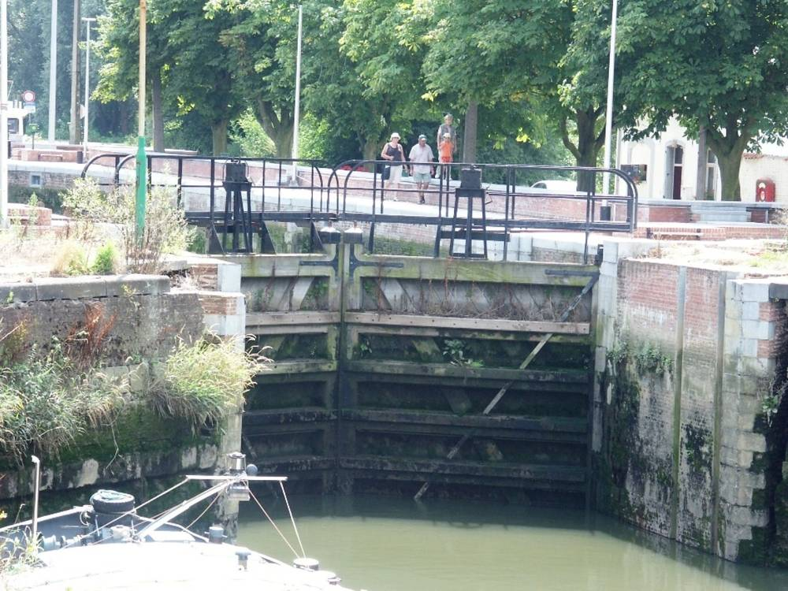
스페인 발렌시아, 시립 묘지 2곳 지붕에 태양광 2,495.96kWp 공사 마쳐…전기 4분의 1은 취약가구 800곳에 나눌 계획
시립 묘지 5곳 지붕을 쓰는 '레퀴엠 인 파워' 사업, 5곳 전체 투자 320만 유로·연 약 3,388MWh 예상…75%는 시 건물이 쓰고 대상 가정은 시 사회복지 부서가 고른다
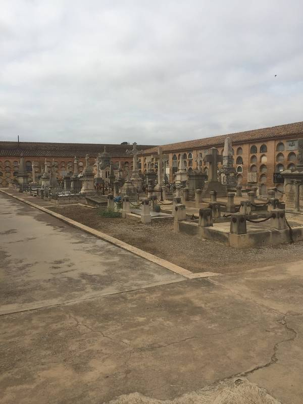
전남연구원 신안 발전 구상 보고서, 햇빛연금·바람연금을 기본소득형 에너지복지로 키우자 제안…햇빛연금 2025년 75억 원에서 2030년 130억 원 목표
해상풍력 2030년 3.5GW·2035년 8.2GW, 태양광 2030년 1,200MW 목표 담아…주민참여 협동조합·지역활성화펀드 연계, 권역별 해상풍력 유지보수 거점·RE100 산업단지도 제시

국회서 동 지역 햇빛소득마을 요구 나오자 제주 동 지역 문의 잇따라…출력제어 탓 마을마다 억대 ESS 부담이 걸림돌
제주도 관계자, 행안부가 의견 받는 중이며 연내 기준 발표 예정이라고 전해…확대 여부는 한전 협의 남아 예측 일러, 애월 용흥리·남원 위미1리 선정·3차 공모 이달 말 마감

프랑스 트레망틴 면, 어린이집 지붕 36kWc 태양광의 남는 전기를 반경 2km 공공건물 15곳에 나눠 쓴다…면의회 만장일치
'집단 자가소비' 참여 의결, 멘에루아르 도 면간 에너지조합 Siéml을 운영 법인으로 지정…운영비 연 858유로, 계약 20년
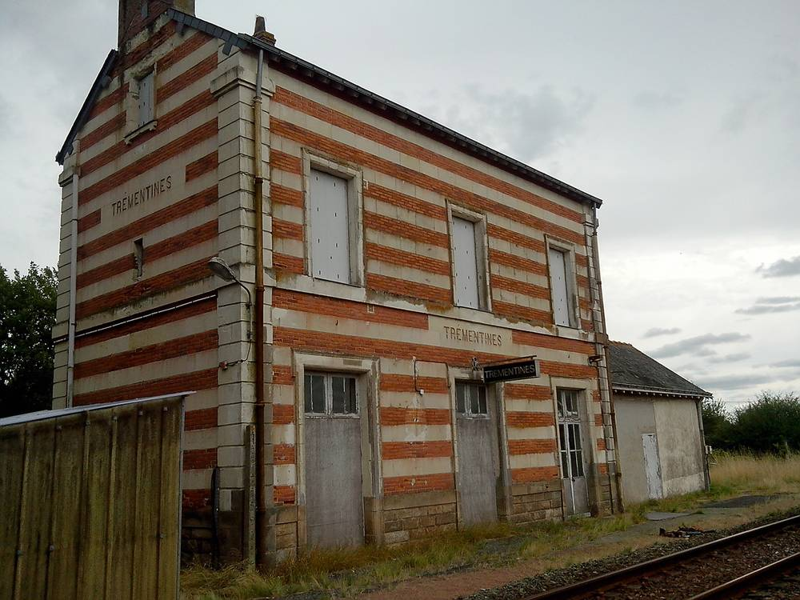
호주 블루마운틴스 시, 청사·문화센터·어린이집 등 시 소유 시설 9곳에 태양광·배터리…정전 때도 필수 서비스 유지
태양광 새로 3곳·태양광과 배터리 함께 3곳·기존 태양광에 배터리 추가 3곳, 뉴사우스웨일스 주 서부 시드니 기반시설 보조금과 시 재원으로 마쳐
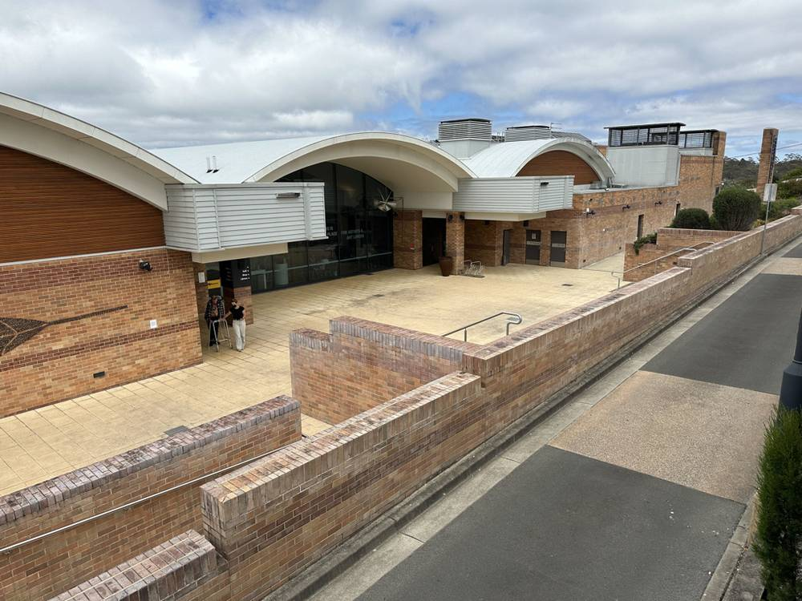
영국 레이크디스트릭트 국립공원청, 켄들 본부 주차장에 태양광 캐노피…발전량 3배로, 연 8만7,000kWh 생산
주차면과 사무동 지붕에 패널, 생산 전기 약 66% 직접 쓰고 남는 전기는 전력망으로…초지 대신 이미 개발된 땅 써 2030년 넷제로 목표에 다가서
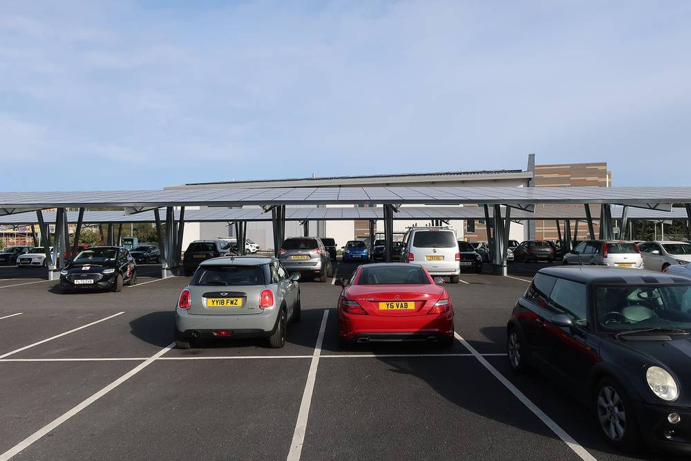
호주 빅토리아주 '아파트 태양광' 지원 대상 150세대 건물까지 넓혀…세대당 최대 2,800 호주달러 환급
연방·주 정부 자금으로 설치비 평균 76% 지원, 중위 부동산 가격 상한 없애…관리단은 발전량 최대 20%를 복도·주차장 등 공용부에, 신청은 2027년 6월까지
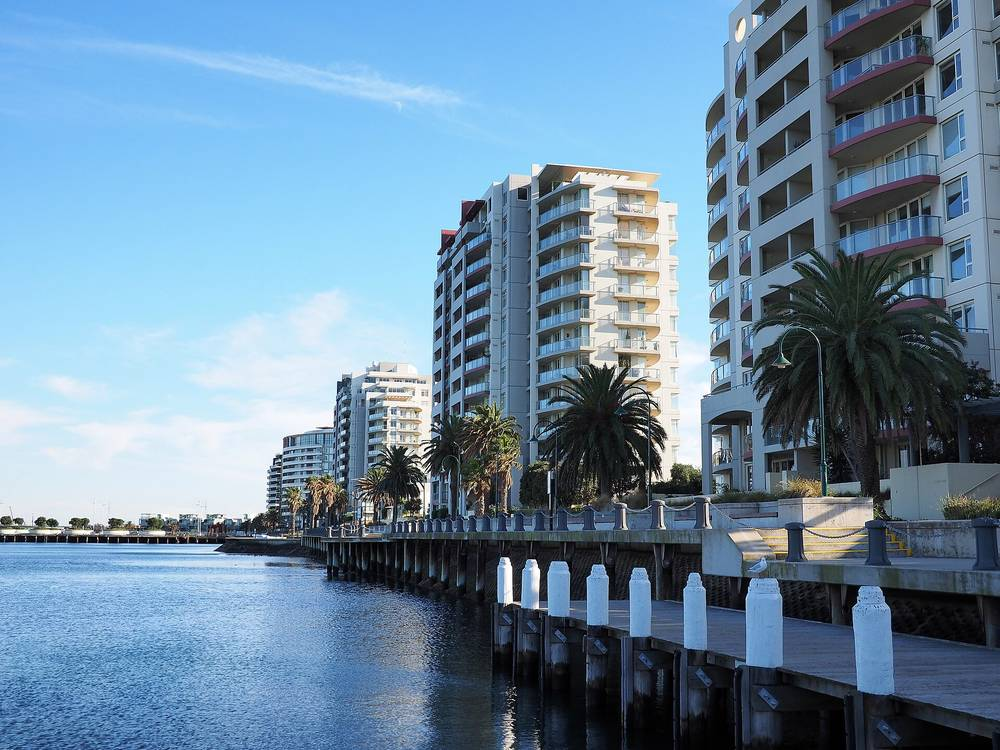
호주 울런공 시의회 '에너지 형평 틀' 만장일치 채택…주택 태양광 시 평균 35%, 가장 낮은 동네는 17.9%
세입자·저소득층·아파트 주민도 값싼 청정 전기 누리게 4대 원칙 세워…시 조사 "가구 거의 5분의 1이 에너지 곤궁 겪을 수 있어", 새 예산·사업은 정해지지 않아
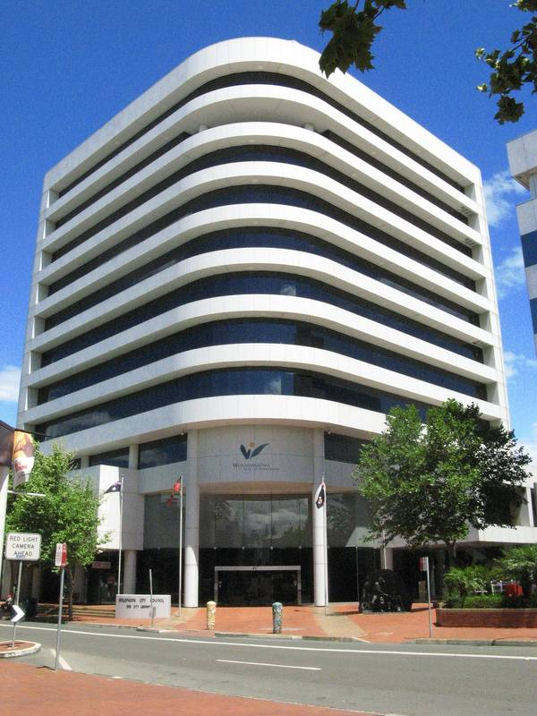
함평 재생에너지 특구 추진위, 정부·국회에 '군민주도형 국가 에너지생산 선도지역' 지정 요구…특별법 등 4대 과제 제시
군 전체를 발전·ESS·송변전·산단을 함께 계획하는 국가전략 공간으로 묶자는 구상…장기 8GW, 입지 기피시설도 받겠다며 11월 16일 서명·건의서 전달 예정, 특구·특화지역·국가산단 모두 요구 단계

영암군, 삼호 미암 간척지 약 1,700만㎡에 2GW 이상 재생에너지 집적화단지 추진…토지소유자 등 200여 명과 간담회
공공 주도 입지·마스터플랜, 공모로 사업시행자 뽑아 주민참여 비율·수익 환원 규모 심사 계획…동의서는 정부 지정 신청 자료, 개발 이익은 주민참여형 기본소득 재원으로

미국 뉴멕시코 라스크루시스 공립학교, 주 기금 350만 달러로 학교 4곳 주차장에 태양광…콘리 초교 226kW
주 재정청 '지역 태양광 접근 기금'에서 초교 3곳 100만 달러씩·고교 50만 달러 승인…교체 앞둔 지붕 대신 주차장 차양 택해, 유지관리는 교육청 몫
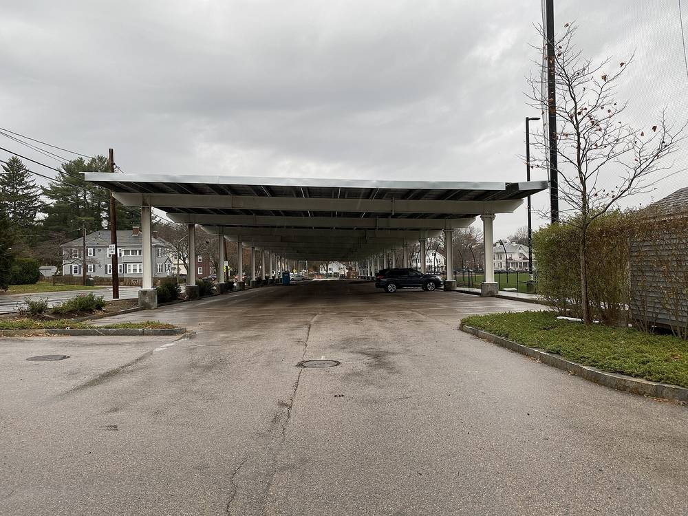
미국 로드아일랜드, 주 청사 주차장에 태양광 카포트·배터리·충전기…930만 달러 투입
프로비던스 스미스힐 청사 단지 재생에너지 1MW로…연방 지정 예산 450만 달러에 탄소배출권 수입 보태, 2027년 1분기 착공·연말까지 가동 목표
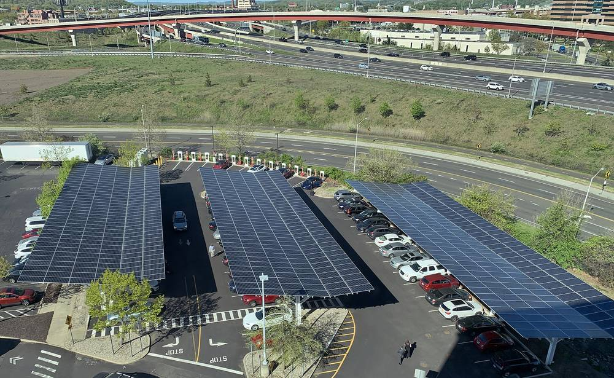
폴란드 코닌 시 폐기물공사, 소각장 전기 시 공기업 4곳에 직접 판매 시작…내년엔 시청에도 공급
시가 99.58% 소유한 MZGOK, 전력 판매 면허 받아 지역난방·상하수도 공기업 등과 계약…시·공기업 에너지 클러스터 발전량 연 5만661MWh로 소비량의 두 배 넘어
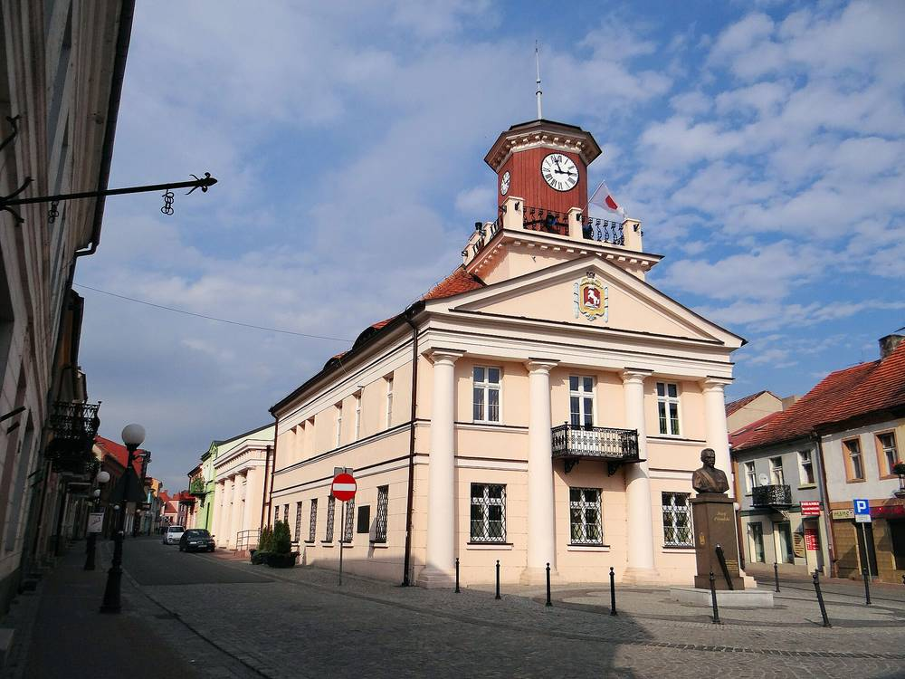
영국 셰필드시, 시영주택 최대 5,257채 지붕 빌려줘 태양광·배터리 설치 추진…212채는 기후투자채권 등 167만 파운드로
2030년 4월까지 모든 시영주택 에너지등급 C 이상 의무…외부 기업이 투자하는 '서비스형 에너지' 방식, 세입자 연락관 두고 추운 집부터

고흥군, 2030년까지 단독주택 3곳 중 1곳에 태양광…2만7,000동 중 9,000동 목표 주택 태양광 보급 3033 사업
9월 현재 보급률 약 23%·6,200여 가구…올해 융복합 지원 5개 읍면 42억9,800만 원, 주택지원 100가구 4억7,600만 원

남아공 에쿠르훌레니시, 농산물시장 지붕·유휴부지에 25.6MW 태양광 착공…민간이 짓고 시가 20년간 전기 산다
사업비 3억6,000만 랜드, 연 약 40GWh 생산 예정…시는 초기 자본 없이 전력구매계약, 독립발전사업자에게서 최대 2,400MW를 사들이는 시 조달 프로그램의 하나
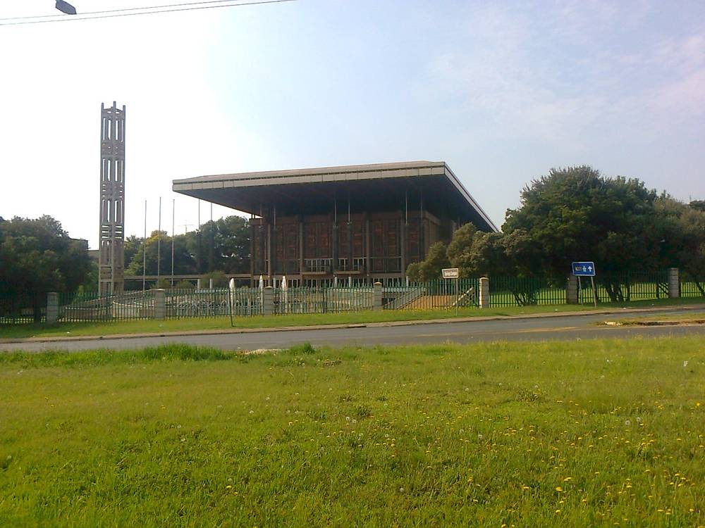
인천 주안·부평산단, 정부 에너지자급자족 인프라 공모 선정…공장 지붕·주차장에 태양광 10MW
2029년까지 국비 200억 원 포함 320억 원 투입해 연 1만2,400MWh 생산 계획…발전 수익으로 '햇빛소득 기금' 11억 원 만들어 입주기업·근로자에 돌려준다는 구상

다대포 해상풍력 사업자, 사하구 청년회와 청년 고용·지역 공급망 협약…99MW 고정식 해상풍력
부산해상풍력발전, 교육·훈련·취업 연계와 관광자원화 추진…사업자 측 주민조사 찬성 56.7%·반대 26.7%, 고용효과 1,112명 분석, 주민 지분·배당 방안은 협약에 없어

제주도, 2035년까지 해상풍력 5GW 개발하고 바람연금·햇빛연금 확대 구상
위성곤 지사 취임 100일 인터뷰서 추자해상풍력 2GW 포함 개발, 재생에너지 기반 그린 AI 데이터센터 조성 제시…연금 확대 규모·재원은 밝히지 않아

새만금희망태양광 99MW, 주민참여 두 갈래 검토했지만 전북도민 펀드는 금감원 지역 제한 지적에 막혀
총사업비 1,575억 원, 2021년 12월 상업운전…반경 1km 주민 약 63억 원 규모 주민법인 투자 추진, 회사는 연 6억6,100만 원 지역 기부·전북 중고생 장학금 설명

루마니아 탄광 도시 루페니 시, EU 기금으로 1MW 태양광 발전소 완공…지우 계곡 첫 태양광, 연말 계통 연결 예정
사업비 약 400만 레이 전액 EU 기금, 연결 공사비 65만 레이 이상은 시 예산…시장은 가로등·청사 전기요금 매달 20만 레이 넘게 아낄 것이라 밝혀, 저장 배터리·두 번째 1MW 발전소도 추진
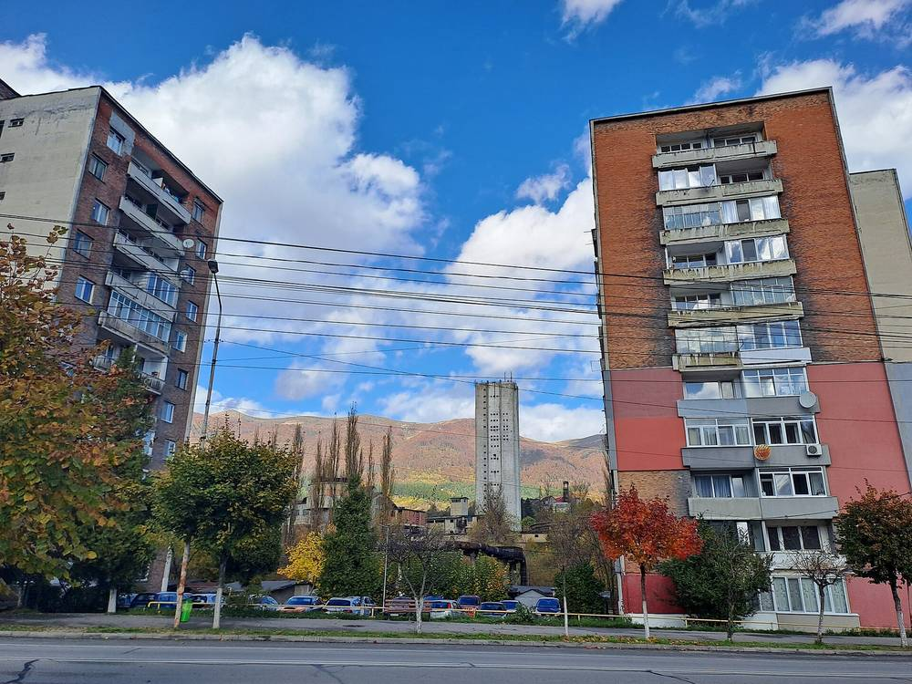
이탈리아 빌라레자, 태양광 발전소 관련 보상 협약으로 유치원 난방설비 교체…마을 예산은 0원
관개·농지개량 조합이 공사비 전액 부담, 마을은 8월·10월 집행부 결의로 협약 승인·확인…다음 단계 창호 교체엔 국가 보조금 6만1,909.5유로

벨기에 브뤼헤시, 지자체 공동 에너지회사 통해 제브뤼헤항 풍력 8기에 최대 약 767만 유로 출자 추진…26일 시의회 표결
사업회사 포르트피네코가 모으는 1,533만5,000유로 가운데 절반은 제피어, 절반은 항만공사 몫…브뤼헤 몫은 최소 약 308만 유로, 시는 추가 배당 기대하고 다년도 재정계획엔 부담 없다고 설명
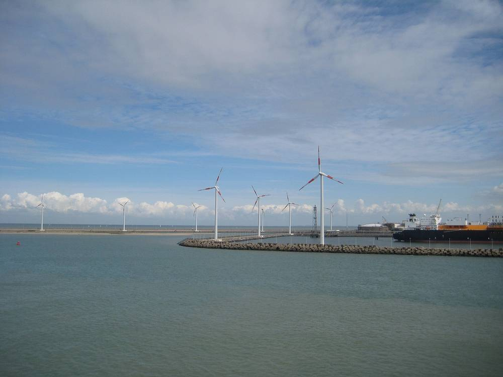
광주 전력자립률 9.3%·전남 197.9%로 21.3배 격차…광주기후에너지진흥원, 햇빛·바람연금 참여 자격·배분 기준 명확히 해야
통합 이전 2023년 기준 분석…두 지역 지역에너지계획 133개 사업은 기간·지표 달라 단순 통합 어려워, 2035년 재생에너지 설비 목표 합계 3만8,858MW

프랑스 베리에르 마을이 지분 갖고 추진한 풍력 5기, 15년 만에 무산…국사원, 검독수리·독수리 보호 위해 허가 취소 확정
마을과 기업 2곳의 합작 회사가 추진…공청회 찬성·도지사 허가까지 받았지만 법원은 회피 대책으로도 대형 맹금류 위험을 줄이지 못한다고 판단, 마을은 태양광 사업으로 방향 돌려
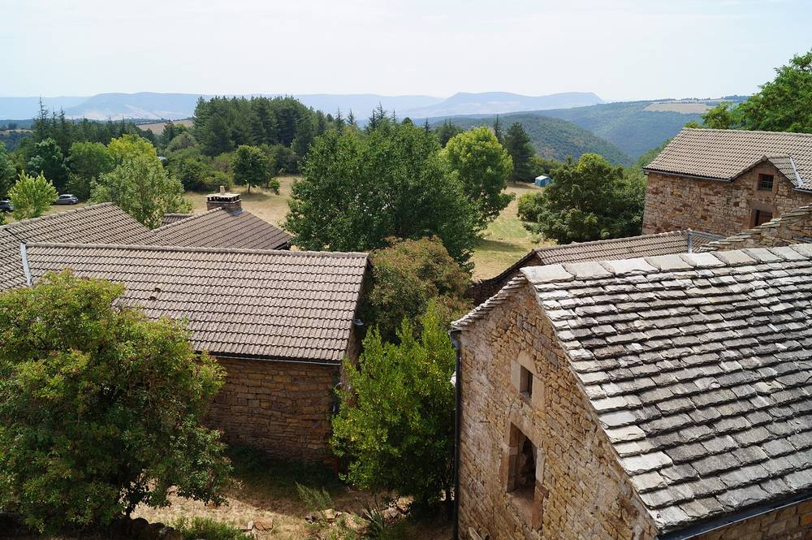
보령시, 장동혁 국민의힘 대표와 정책간담회…공공주도 태양광·해상풍력 집적화단지 육성 건의
석탄화력 단계적 폐쇄 대응 제도 개선도 요청…폐지지역 특별법 지원 소급 적용·안보전원발전기 지원 근거·미래대응기금 배분 기준에 피해 영향 반영

스코틀랜드 노총·환경단체, 육상풍력 105곳 5년 세후이익 28억3,000만 파운드 중 90% 가까이 주주 배당 분석 내놓고 풍력·버스 공공소유 확대 요구
지역경제전략센터(CLES) 분석…버스 공공예산 2019/20년 뒤 72% 늘었지만 이용은 줄어, 공공소유·실행단 신설과 GB에너지 역할 확대 제안…업계는 민간 투자 여전히 필수, 정부는 CARES 예산 1,500만 파운드로 늘렸다고 답해
미국 미시간주, 대형 태양광·풍력 허가한 지자체에 MW당 최대 5,000달러 지원금…57곳 승인
'재생에너지 준비 지역 지원금' 착공 때 지급, 하트 타운십은 60만 달러로 도로 보수·조례 정비…주 정부 우회 허가로 넘어간 오타와 카운티 200MW 태양광은 법정 다툼
함평 재생에너지 특구 추진위 "345kV 변전소 못 잡으면 8GW·RE100 산단 2년 넘게 늦어져"…27일 기자회견·11월 3일 결의대회 예정
오민수 상임대표 군민 호소문, 변전소 확보를 4대 과제 맨 앞에…심의 결과는 추진위 설명으로 12월 말~내년 1월 초 전망, 특구·변전소·산단은 정해진 것 없어

전남연구원 "진도에 해상풍력 3.6GW·태양광 1.4GW"…주민 지분 참여 '진도형 에너지 연금' 구상
'진도군 발전 구상' 보고서, 영농형 태양광 2035년 1GW·수상태양광 최대 400MW 제시…2031년부터 해상풍력 수익 복지·주거·교통에 재투자 구상

영천시의회 상임위, 태양광 주거밀집지역 이격거리 300m→100m 완화 조례안 수정 가결
산업건설위, 도로 이격거리 기준도 삭제…적용 대상은 '10호 이상'에서 '5호 이상'으로 고쳐 통과, 재생에너지법 시행령 개정에 맞춘 조례 정비

대만 화롄 펑린 1,000ha 태양광 단지 '지역 환원금' 명목 뇌물 혐의…태양광 기업 회장 등 7명 구속
검찰, 훙더에너지가 당시 진장에 3,000여만·전 농회 총간사에 1,000여만 대만달러 건넸다고 판단…피고들은 혐의 부인, 사업은 주민 반발로 이미 철회
폴란드 포트카르파치에 5개 지자체 에너지 클러스터, 주택·공공건물에 재생에너지 설비 약 1,600개 설치 추진…시공 입찰에 8건 응찰
롭치체 주도 롭치체-뎅비차 클러스터, 총사업비 5,946만 즐로티 중 4,795만 즐로티를 국가회복계획에서 지원…태양광·열펌프·에너지저장장치에 수소 설비까지
프랑스 레지냥코르비에르 고속도로 나들목 카풀 주차장 개장…도 공공 에너지조합, 80만 유로 태양광 그늘막 세워 공공건물에 전기 나눌 계획
A61 25번 나들목에 승용차 62면·전기차 충전 4면, 공사비 약 80만 유로…오드 도 에너지조합 Syaden, 지역 집단 자가소비로 지자체 연합 공공건물과 지역 주체에 공급 추진, 설치 시기·용량은 미정
네덜란드 상계제도 사라지며 이웃과 지붕 태양광 전기 나누는 에너지 나눔 관심 커져…2027년 상반기 법 개정으로 공급사 제공 의무화 전망
15분 단위로 보낸 전기와 쓴 전기가 겹치는 양만 나눈 것으로 쳐…에너지업계 단체, 취지는 좋지만 행정이 매우 복잡하고 불균형 비용 늘 수 있다며 정적 나눔 제안
아일랜드 메이요 주 발리나 주택단지 약 30가구, 버려지는 재생에너지 전기로 온수 무료 공급 시범사업
자선단체 에너지 클라우드·메이요 주의회, 스마트 온수 제어기로 무료 온수 400탱크 넘게 공급…단체 대표, 올해 버려질 풍력 전기 6억 유로어치라며 정부에 에너지 빈곤 대책 촉구
신안 자은 해상풍력 96MW 상업운전 1년 5개월…8.2GW 단지 밑그림 속 송전선로 경유지 주민 수용성이 숙제
우이도~임자도 1만2,000㎢ 해역에 고정식 500기 10년 안에, 흑산도 해상엔 10GW 부유식 추진…임자~신장성 송전선로 지나는 함평·영광·장성 민원 부담

화천군, 파로호 수면·군부대 유휴부지 태양광 수익 나누는 화천형 햇빛연금 구상…군민 1인당 월 10만~15만 원 목표
김세훈 군수 취임 100일 인터뷰서 이르면 3~4년 안 지급 목표 밝혀…설비 용량·사업비·사업 주체는 아직 공개 안 돼, 농어촌 기본소득 월 15만 원과 합쳐 월평균 25만~30만 원 구상

일본 경산성, 지상 태양광 FIT·FIP 지원 2027년도 종료 방침…공공용지·카포트 등 4가지만 계속
9월 30일 위원회서 제시…10개 후보 가운데 지역 신전력 공급·경작포기지 활용 사업 등은 행정 관여를 담보할 수 없다며 제외, 2027년 4월 새 제도 예정
웨일스 앵글시 사회적기업의 조력발전 모를레, 2027년 첫 터빈 앞두고 정부 지원 지속 요청…최대 240MW 단계 개발
웨일스 에너지 장관 첫 현장 방문…사업자는 지역 업체·도제에게 이미 일감 생겼다며 꾸준한 지원 필요하다고 강조, 장관은 만든 가치를 지역사회에 더 많이 남길 수 있다고 평가

덴마크 장관, 오르후스시가 이웃 쉬드유르스시 경계에 세우려는 150m 풍력발전기 3기에 대한 이의 받아들이지 않아
반경 900m 안에 주민 51명…쉬드유르스 시장은 집값 하락·이웃 주민 의견 미청취·칼뢰 성터 경관 들어 반발, 오르후스는 지구계획 처리 방침

일본 원폭의 그림 마루키미술관 지붕의 반원전 태양광 13.95kW, 개수 공사 뒤 다시 달기 위한 인터넷 모금 시작
후쿠시마 원전사고 이듬해인 2012년 시민 기부로 패널 93장 설치…물가 상승으로 개수 공사비 모자라 재설치 미루고 올해 2월 떼어 내, 미술관은 내년 5월 재개관 목표
미국 뉴욕주 리버헤드, 닫은 매립장 위 태양광 7MW·배터리 13.68MWh 완공 앞둬…요금 크레딧 60%는 주민·소상공인 120여 곳 몫
읍은 땅 빌려주고 크레딧 40%와 연 임대료 15만 달러 이상 받아…민간 개발사 CVE가 짓고 25년 운영

영국 웨일스 케어필리 '광부센터', 지역에너지 기금 Ynni Cymru에서 31만2,000파운드 받아 태양광·전기차 충전기 단다
겨울 난방비 세 배·폭염 땐 방 20개 중 2개만 쉼터로…웨일스 정부 이번 차수 24개 사업에 827만 파운드, 2023년 이후 누적 3,100만 파운드
아일랜드, 가정용 콘센트에 꽂는 '플러그인 태양광' 도입 길 열려…ESB 네트웍스 보고서 "안전한 경로 있다"
정부 요청으로 꾸린 작업반 보고서 10월 1일 기후·에너지·환경부에 제출…독립 안전성 평가·법령 검토 거쳐 내각 상정, 800W 이하 시스템 검토
미국 매사추세츠주 하버드읍, 공공 태양광 1.4MW 후보지 15곳에서 2곳으로 압축
읍 소유 옛 자갈 채취장과 비공개 사유 농지…연 약 42만 달러인 읍 전기요금을 에너지 크레딧으로 줄이려는 사업, 최종 부지 추천은 내년 1월 말로 미뤄
후쿠시마로 돌아와 영농형 태양광 운영하는 농부들 다룬 다큐멘터리 〈햇볕의 농부들〉…오바라 히로야스 감독, 발전 수익이 농업 실험 떠받쳐
니혼마쓰 곤도 케이 씨 약 6ha 농지에 4MW 설비, 고향 떠났던 농부 2명 합류…방사성 물질 검사 수치 공개하고 출하, 감독은 원전 사고에서 태어난 청춘영화라는 관객 평 소개
미국 뉴욕주 허드슨밸리 단체장들, 세입자도 쓰는 플러그인 태양광 법안 서명 촉구
SUNNY Act, 1,200W 이하 설비는 사전 계통연계 승인 없이 설치 뒤 신고만…올봄 주의회 양원 통과, 주지사실은 서명 여부 안 밝혀, 안전 우려도

영덕군 에너지종합계획 중간보고…산불 피해지에 200MW급 공공주도 풍력, 햇빛소득마을 조성 검토
18개소 631.6MW 풍력에 해상풍력 입지 발굴·태양광 보급 더해…주민 참여 넓혀 발전 이익 군민에 돌리고 개발이익 공유 확대, 12월 최종안 확정

일본 후쿠시마 니혼마쓰 영농형 태양광 농장, 패널 아래서 샤인머스캣 재배…약 600세대분 전기 생산
니혼마쓰영농솔라, 원전사고 계기로 5년 전 경작포기지에서 시작…패널 그늘이 고온장해·서리 피해 줄이고 기둥은 포도 덕으로, 들깨·밀 재배에 소 방목까지
영국 공영 GB에너지, 셰틀랜드 출력제한 풍력 전기를 섬 에너지빈곤 해소에 쓰는 방안 협의
9월 영국 출력제한 보상금 5억500만 파운드로 사상 최대…셰틀랜드 풍력 이용률 약 60%에도 에너지빈곤율은 영국 최고 수준

인천햇빛발전협동조합, 공영주차장 태양광 수익 시민배당·지역환원 조례 요구
1,000㎡ 이상 공영주차장 태양광 의무화 뒤 인천시·iH 약 40MW 사업 추진…조합은 시민펀드 넘어 협동조합의 시공·소유·운영 참여 보장 주문

프랑스 앙제 근교 롱그네앙주, 공공시설·불 경기장에 태양광 그늘막 2곳 준공…연 686MWh로 약 300가구분 전기
지방정부 출자 혼합경제회사(SEM) 알테르 에네르지가 앙주 태양광 지역 프로그램으로 개발·투자·시공…시장, 이미 쓰는 땅에 세워 농지 지키고 화석연료 의존 줄인다
영국 웨일스 덴비셔 의회, 릴 청사 주차장에 태양광 카포트 허가…생산 전기는 청사·의회 시설이 직접 쓴다
주차면 85면 가운데 18면 위에 패널 지붕…계통 전기 구입 줄이고 운영비 절감, 허가 조건 4개 중 하나는 3개월 안 생물다양성 조경 계획 제출
미국 미네소타 태양광 학교 연말 400곳 넘는다…학교 태양광 보조금 시작한 2022년 약 190곳의 두 배 이상
주 보조금 5년 동안 3,200만 달러 넘게 지원…행사 연 메이플우드 초등학교는 전기료 해마다 2만2,000달러 줄여, 주 전체 학교 20년간 4,600만 달러 절감 추산
창원시, 덕산매립장 유휴부지 태양광 수익으로 문 닫은 진해 소죽도찜질방 다시 연다
소각장 폐열 끊겨 7월부터 운영 중단…태양광 발전수익은 운영비로, 매립장 증설 주민지원금은 리모델링에, 2028년 7월 재개장 추진

영국 워킹 시의회, 직접 소유한 에너지회사 ThamesWey 요금 인상에 청사 에너지비 32만6,000파운드 늘어
오랫동안 묶였던 상업용 요금을 시장 기준에 맞춰 재조정…일반 전력망 연결 비용이 커 공급사 못 바꿔, 시는 소유주라도 특혜 없어야 한다는 입장

미국 코네티컷, 1,200W 미만 플러그인 태양광 신고 없이 설치 허용했지만…건축·소방 규정 없어 합법 여부 혼란
10월 1일 새 법 시행, 주 건축·소방 규정 개정안은 4월 별개 쟁점으로 부결돼 일정 없어…시스템 전체 인증 받은 미국 시장 제품도 아직 없어
광주 전력자립률 9.3%·전남 197.9%…광주기후에너지진흥원, 통합특별시 에너지 연계 3대 축 제안
탄소중립 정책브리프 제14호로 두 시·도 제6차 지역에너지계획 분석…광주는 가정·상업·수송 78.6% 도시형, 전남은 산업 89.6% 산업형…착수 조건 갖춘 사업부터 단계적으로 추진하자고 제언

일본 후쿠시마현 지사 선거 앞두고 재생에너지 100% 목표 시험대…니혼마쓰 하리미치 메가솔라는 토사 유출로 공사 중단
현 재생에너지 비율 2025년도 64.3%로 4포인트 넘게 올랐지만, 2023년 5월 착공한 산골 메가솔라는 비탈 곳곳 무너져…인근 구치부토야마 풍력 구상도 일정 미정
호남 재생에너지 계통 넓어진다…전남연구원, 여수·광양 산단 수요 연결과 주민 이익공유를 한 체계로 운영 제안
정부, 호남 수용능력 송전단 약 27GW·배전단 약 12GW 확대 전망…10월부터 기존 대기 사업자에 우선 배분, 신규 접속 신청은 2027년 1월부터

서천군의회 조성훈 의원, 장항국가생태산단서 생산 없이 태양광만 돌리는 입주업체 점검 요구
행정사무감사서 공장 건립·생산설비·실제 가동·고용 실태 확인 촉구…입주·변경계약과 발전사업 허가조건 이행 여부 관계기관과 확인, 위반 땐 법령·계약 따라 조치해야

대전충남녹색연합, 주차장 태양광 의무 대상 30곳 중 설치 1곳…대전시에 재생에너지 중심 로드맵 촉구
검토 중인 13곳만 지어도 약 4,636kW·연 592만kWh로 1,500여 가구분 추산…수소·복합화력 중심 제7차 지역에너지계획 전면 재수정 요구

청주시, 2027~2031 제3차 지역에너지계획 5대 전략 마련…시민참여형 재생에너지·RE100 산단 추진
최종보고회서 시민과 산업이 함께 만드는 에너지 혁신도시 비전 제시…소비·참여·산업·시스템·융합 혁신, 전문가 의견 반영해 보완 뒤 세부 사업 단계 추진

공주시 공영주차장 태양광, 공개경쟁 없이 사업자 내정했나…행정사무감사서 절차 논란
사업 대상지 21곳·10곳·7곳 문서마다 달라, 시 답변서도 임대형이 직영보다 수익성 낮을 수 있다고 적어…교통과장 법에 맞는 기준 마련하겠다


미국 오하이오 도시들, 매립지·저수지·교회 지붕 태양광으로 전기요금 오름세에 대응
1년 새 주택용 요금 12% 상승…신시내티 매립지 10MW 착공, 라이마 저수지 수상태양광 2MW 가동

미국 하원에 첫 연방 플러그인 태양광 법안…저·중소득 가구에 최대 1,000달러 보조
롭 메넨데스 의원 발의, 콘센트에 꽂는 1,200W 이하 기기 규칙 검토를 주 규제기관에 요구…2027~2032 회계연도 6억 달러, 세입자 사용을 막지 못하는 주에만 지원

PG&E, 샌프란시스코 전력망 인수 비용 225억 달러 제시…시 평가액 34억 달러의 6배 넘어
캘리포니아 공공요금위원회에 자산 139억·영업 분리 손해 76억·물리적 분리 10억 달러 제출…시는 부풀린 숫자라고 반발, 가치 결정은 2027년보다 늦어질 듯
곡성군, SK이터닉스·유선기업과 육상풍력·태양광 협약…군민펀드 도입 검토
기업은 사업 개발·입지, 군은 행정 지원 맡기로…발전용량·사업비·부지·수익 배분 방식은 아직 정해지지 않아

영광군, 2027년부터 군민 1인당 연 20만 원 재생에너지 이익 배당 추진
해상풍력 등 이익공유금·발전사업자 기부금이 재원…기부금 의존 한계에 정부와 사회보장제도 신설 협의, 4개 마을 195kW 태양광은 마을기금 적립


김해시, 공영주차장 14곳·정수장에 태양광…발전 수익 재투자하는 재정 순환 구조 만든다
2028년까지 공영주차장 2,700kW 설치, 7곳은 직영·7곳은 민간 임대…삼계정수장 500kW는 12월 준공 목표

일본, 영농형 태양광 성령·고시 개정 공포…2027년 4월부터 시정촌 기본계획·인정제로 전환
지역 공생 등 3대 기본이념 명시, 단수 20% 이상 감소 우려 없을 것·차광률 30% 미만 등 기준…주민 대표 참여 협의회서 합의
독일, 극우 AfD 지지 높은 지역일수록 지붕 태양광·전기차 보급 느려
프라이부르크대 연구진, 지자체 1만700여 곳 분석…AfD 성향 지역 지붕 태양광 보급률 녹색당 성향보다 31% 낮아
네덜란드 노르트브라반트주, 대형 태양광·풍력 개발사에 '지역 소유 50%' 노력 입증 의무화
태양광 50MW·풍력 15MW 이상 대상…못 미치면 이유 설명해야, 벌금은 없지만 주가 시정 요구 가능


地域
J1水戸ホーリーホック、耕作放棄地で営農型太陽光…道の駅の電力3割を供給し2年目で黒字
茨城県城里町の約2,000㎡に67.2kW、20年固定価格のPPA…Jリーグは1クラブ上限1,000万円の再エネ助成
ソウルエネルギー公社、黒字転換も顧客満足度は79.4点…市議会「LNG依存から脱し駐車場太陽光を拡大せよ」
魏聖燦ソウル市議が行政監査で指摘…公営駐車場40カ所の立地調査を確実に、大型民間駐車場とも協議を
南原市議会・盧賢以議員、公営駐車場の太陽光収益を市民に還元する条例の発議へ…討論会で協同組合モデルを議論
10日の「公営駐車場の太陽エネルギー住民所得化方策討論会」に市民・専門家約30人…全州市エネルギーセンター・環境運動連合・共同体支援センターが発表
フィリピン・ケソン市、2年足らずで太陽光容量を73%増やし58.55MWに…市庁舎・公立学校・市立病院の屋根から設置も、家庭への普及は1%未満
シンクタンクICSCが衛星画像と機械学習で分析、95%超が屋根置き…屋根の潜在量は4,916MW、「家庭・零細事業者の初期費用を軽くする金融と許認可が必要」
ソウルエネルギー公社、昨年の太陽光事業の執行率77%…チェ・ドゥホ市議「老朽設備の交換・都心太陽光拡大の年次別実行計画を出せ」
公社「運営期間を終えた発電用地を引き継ぎ高効率化し、公営駐車場の太陽光を段階的に拡大」…EV充電器の委託業者の賃金未払いで管理が1日止まった件も追及
江原道が108億ウォンを現物出資した大関嶺風力団地、年間純利益3億ウォンにとどまる…道議会の監査で「経済性と住民被害を改めて検証せよ」
江原開発公社が運営する団地の予想売上は21億ウォン…維持補修費や人件費が上がれば収益はさらに減る恐れ、騒音・低周波・シャドーフリッカーなど社会的費用も指摘
ソウルの学校3校の屋根で市民太陽光協同組合が運営する発電所、使用料1,470万ウォン滞納…学校ごとに対応ばらばら
ソウル市議会の行政監査で指摘…仁憲高は使用許可を取り消し、上院小は督促文書を11回送っただけ、協同組合型20校・民間型12校の安全点検を要求
海南・血島干拓地の国内最大400MW太陽光、着工式から3カ月たっても工事の跡なし…住民160人余り「埋立免許は無効」と行政訴訟
住民の持ち分は発電事業費の4%まで…海南の干拓地の大型太陽光は11件1,785MW、郡は「年末までに利益還元の細部指針」
麗水市、有人島40カ所のエネルギー転換「2030 RE40」を推進…2027年から島にも公有地太陽光・太陽光所得村
系統連系の島25カ所・非連系の島15カ所に合わせた実行案…ディーゼル発電を減らし島民の電気料金負担を軽く
九州の営農型太陽光、5年で4.4倍…全国の設置農地の24%は収穫2割超減で国が許可条件を強化
福岡・八女の茶畑は棚がけにパネルを組み合わせ月7万〜8万円…農水省「遮光率30%未満・年販売50万円以上」の新条件に業界は「一律規制は厳しすぎる」
始興型RE100、産業団地の小規模事業者1,068社が電子投票で屋根置き太陽光を決定…20年で太陽光所得180億ウォン見込み
スティールランド1万2,613kW・賛成86%、市民協同組合の駐車場発電所394kWが稼働…太陽光の許可容量は2023年末の44MW→129MW
コロラド初のプラグイン太陽光非営利団体が発足…賃借人・管理組合規約を保護する州法の施行を前に
ソーラー・アクセス・コロラドが9日に発足…HB26-1007、設置を合理的理由なく妨げられないと規定
BHESCo、イーストボーン全域へ「ソーラー・パワード・コミュニティーズ」を拡大…電気料金を最大25%安くすることを目標に
持ち家世帯・賃借人・地域の事業所が対象…オフジェムのエネルギー補償基金で運営
シェトランドの地域エネルギー関係者「スコットランドの地域エネルギー支援金を複数年で支給してほしい」
秋に配分されるCARES資金は翌年3月中旬までに使う必要…大きな事業を小分けにし、工事が冬に集中
ドイツ「エネルギー・シェアリング同盟」、隣近所で太陽光の電気を分け合う障害を除く11の提案…「配電会社に処理期限と罰則を」
6月から法律で認められたが、精算手続き・スマートメーター普及の遅れ・高いコストで停滞…協同組合や市民エネルギー団体には「複雑すぎるか採算が合わない」
「裸足の大学」創設者バンカー・ロイ氏死去…学校に通えなかった農村の女性たちを太陽光技術者に育てた81年
1972年にインド・ラジャスタン州ティロニアに設立した学校で学んだ女性たちが故郷の村に戻り、太陽光照明を設置・運営・保守…多くの国の女性も学びに訪れる
アイルランド・コークの隣人たちが「ソーラー・メハル」で屋根の太陽光を共同設置…先行した団地は1世帯あたり年約1,000ユーロ節約
隣人が集まって大仕事を助け合う伝統「メハル（meitheal）」を太陽光の共同購入に応用…ボランティアグループ「ノースサイド・ソーラー」、団地ごとに使い回せる方式をつくり北部地域に広げる計画
忠北開発公社、陰城郡の公営駐車場に初の公共主導型太陽光…発電純利益の50％を20年間郡に還元
韓電KDNと共同で設立する特別目的法人「忠北ソーラーリンク」がカーポート型設備を運営、郡は用地と行政を支援…「忠北型標準モデル」として道内の他市郡に拡大へ
豪研究者「再エネの地域便益は一時的な支援でなく長く残る遺産に」…地域基金は2030年に2億1,300万豪ドルの見通し
シドニー工科大学の分析「地元雇用の効果はまだはっきりしない」…先住民への持ち分・収益5％共有の入札枠、地元研修、営農型太陽光の計画上の位置づけを提案
山形・酒田で「地域に根ざす営農型太陽光」シンポジウム…「毎日電気を出してくれる牛と同じ」
米沢の農家が35アールの水田に雪国向け手動式パネル670枚…原発事故で離農した福島の農家は営農型で農業に復帰、「人のいない中山間地に人を呼ぶ価値」
佐賀市、市が52％出資する地域新電力を設立…清掃工場の電気を公共施設113カ所へ直接販売
資本金5,000万円のうち市が2,600万円・民間6社が400万円ずつ…年約1万6,000MWhを販売、市外に流れていた電気料金を地域に残す
韓国・大田市、17日に再生可能エネルギー政策フォーラム…「太陽光の価値を地域と分かち合う」市民参加型モデルを探る
世界太陽光会議の特別セッションとしてエネルギー自立村・産業団地屋根置き太陽光の事例を発表…エネルギー技術研究院・韓電KDNと分散型エネルギー協定、特化地域指定の足がかりに
イタリアのセッティ教授、隣同士で分け合う太陽光の電気を公共財に…法定固定価格を導入すれば電気料金20〜30%減
ボローニャ大学教授が11日のラヴェンナ講演を前に提案を説明…約45万か所の二次変電所の下の共有電力を市場から切り離し1kWh8.5セントを例示、送配電料金も使った区間分だけ
青沙浦の洋上風力が手続き再開、海雲台区議会が再び反対…40MWに縮小も海岸線から750mの距離は変わらず
事業者が10月に一般海域利用協議書を提出…区議員が5分発言で景観・騒音・漁業被害を挙げ撤回を要求、区議会は2021・2022年にも白紙化を決議
ドイツ・アルトヴィグスハーゲン議会、10日にアスベスト屋根の無償交換・太陽光と風力発電所の自治体取り分の議案を審議
消防署・旧校舎の屋根を運営会社が交換しパネルを設置…風力発電所は稼働時から自治体に0.2セントを支払い、議会の決定はまだ
チェコの風力の村3カ所「騒音・健康の懸念は現実にならず」…収益は投資家と結んだ条件次第、ごみ手数料を廃止した村と一度きりで終わった村
グルナは2006年から4基・ヴェジュニツェは2009年から2基・アネンスカー・ストゥダーンカは6基、住民の苦情なし…景観への反対は残り、3村とも「着工前の住民との対話と投資家選びが最も重要」
米ミネソタ州、太陽光パネルの下で羊2,200頭・野菜20種余り・乳牛を育てる…営農型太陽光で初期成果が相次ぐ
コミュニティ太陽光ガーデンのパネル下で小作農3人が栽培、ケールは露地より生育良好…家族農家は自費7万5,000ドルで高さ14フィートの架台、7万5,000エーカー未満で接続待ちの太陽光をすべて収容
ドイツ・ベートブルク市、RWEと49%の持ち分を分け合う60MW風力発電所が稼働…褐炭露天掘り炭鉱そばの市内風力は約156MWに
9基のうち7基が7MW・2基が5.7MW、理論上約3万6,500世帯分…1kWh当たり0.2ユーロセントを周辺自治体に年最大25万ユーロ、州の市民エネルギー法で市内の団体にも収益配分
済州型基本社会の討論会で道民エネルギー基本配当を提案…風力・太陽光の超過発電利益でエネルギー弱者・島しょ世帯に基本手当
済州道の政策討論会、殷敏洙・韓国保健福祉人材院長が4大政策を提示…基本医療モビリティ、生態保全参加所得、青年社会ケア参加所得も
オーストラリア、賃貸住まいでも「挿して使う太陽光」へ道開くか…エネルギー相会議がプラグイン太陽光・蓄電池の安全基準づくりに着手
世帯の10軒に3軒が賃貸、引っ越しの際に持ち運べる800W前後の小型設備…西オーストラリア州は12月9日まで意見募集、市民団体「2027年7月1日までに全国で解禁を」
釜山・多大浦の初の公共主導型洋上風力99MW、来年上半期の着工目指す…沙下区住民の56.7%が賛成、反対署名も7,000人超
多大浦港の3〜5km沖に9.9MWの国産タービン10基、2030年の商業運転目標…漁業者との共生協約・地域協議会を運営、住民の収益共有策も協議
いわき市、2027年4月から本庁舎など12施設の電力を市内の再エネ発電所由来に…小中学校など公共施設114カ所も切り替え
市と連携協定を結ぶ企業が市内発電所の電力を調達して供給、実際に供給する小売電気事業者は17日〜12月3日のオンラインオークションで決定
春川市議会の議員研究会、「住民所得型・太陽の都市組合」支援研究の中間報告…発電収益を住民の所得につなぐ制度設計
「ESG実践研究会」が5日、市議会小会議室で委託研究の中間報告会、ユン・ミンソプ会長ら議員5人が出席…組合への支援策と制度基盤づくりが目標
始興市、ソーラーリーグ最優秀賞を3年連続受賞…始華防潮堤の自転車道の太陽光収益で青少年シェルターに太陽光を寄付
自転車道761.6kW・スチールランド12.6MWの太陽光所得事業の成果…市は産業団地と公共施設へ「始興型RE100」を拡大
韓国・高陽都市管理公社、太陽光発電所6カ所を自ら建設・運営…地方公企業で唯一「大韓民国ソーラーリーグ」受賞
2020年から昨年までに計2,811kWを整備、年約3,200MWhを発電し温室効果ガス約1,644トンを削減…用地探しから設計・施工・運営まで自前で実施
米カリフォルニア州メサ・グランデ部族、初の公共太陽光・蓄電池が完成…年60MWhを発電、電気料金を年1万6,780ドル削減
非営利団体SELFが設計・資金調達、部族民4人を雇用…最大150戸の住宅計画の第1段階12戸は2028年春まで
保寧の農家、営農施設の屋根の太陽光を阻む「使用承認から3年」条項に特例を要求…市議会に条例改正を嘆願
キノコ栽培舎・昆虫飼育舎の屋根は使用承認3年後にようやく許可、畜舎は対象外…実際に営農が確認された既存施設だけでも緩和を
米メリーランド州ハワード郡長、太陽光事業のハードルを上げる議会条例に拒否権…「エネルギー自立と料金負担の軽減を損なう」
当初は太陽光の新規事業を一時停止する案として出発、農地保全委員会の承認権限を強めた修正案で可決されたが差し戻し
泰安洋上風力の住民参加説明会めぐり漁業者連帯「直接の利害関係者はいないとの回答が出た」
泰安郡は住民参加比率4%以上を推進と表明…連帯は告発状・追加説明会を要求、事業者は「融資限度の説明にすぎない」
「首都圏の電気がなぜ我が町を」…茂朱郡民800人余り、新長水〜茂朱永同送電線の白紙化を求め決起大会
汎郡民対策委「立地選定で一方的に茂朱を含めた」…ルート撤回・通過区間の最小化を要求、「地域エゴと歪曲するな」
唐津の合徳・牛江・沔川の3集落で太陽光に反発…離隔距離の上限施行後、市は「恣意的に止めるのは難しい」
城東里の住民80人余りが陳情、松山3里は73人が反対署名…唐津市で審査中の発電事業は180件余り
軍浦市の防音トンネル太陽光、ソーラーリーグで長官賞…外部財源86億ウォンで事業費の58%を充当
テヤ・サムソン地下道合計1,329kW、テヤ地下道の市費負担は22億ウォン減り、上部の賃貸で年2,500万ウォンの歳入
長興郡、有治面49MW陸上風力集積化団地の第3回官民協議会…指定申請を前に住民参加と利益共有を議論
大川里一帯の風力団地、協議会の意見は事業計画に反映し気候エネルギー環境部の集積化団地指定手続きへ…具体的な利益共有の比率はまだ示されず
江原道麟蹄・熊背嶺の麓の珍東2里住民、風力発電機設置の動きに再び反対…麟蹄郡「多数が反対する事業は推進しない」
2年前に壊された風況計測器が近くの山に再設置され、事業者が「住民参加型風力年金」・村発展基金を掲げた郵便物を送付…住民「保護地域の生態系と観光を損なう」
ブルガリア・ソフィア市所有の地域暖房会社が危機…市長は「コンセッションが唯一の解決策」、社会党は「35年も手放せない」
熱交換所286カ所が故障で停止し東部ソフィアで暖房・給湯止まる…市議会、19日に経営陣を聴取し再建策を採決
米コロラド州の4市が共同所有する公営卸電力会社PRPA、「2030年カーボンフリー電力100%」の期限を削除…2027年の卸料金は平均7.5%値上げ
10月29日の理事会で議決、カーボンフリー目標そのものは維持…2030年のカーボンフリー比率は80%強の見通し、「これ以上払うつもりはない」住宅顧客は48%で2021年の36%から増加
オランダ・ミデングローニンゲンの公営熱供給会社、ホレヒト・ノールトの住宅街で加入呼びかけ…今年申し込めば接続・ボイラー無料
市とフローニンゲン水道会社の子会社が共同所有する非営利のWarmteCompagnie、板紙工場ESKAの熱を供給…家主の半数以上の同意で事業成立、2027年からは補助金不足で無料接続は困難に
オーストリアのザンクト・マルティン、パークアンドライド駐車場2カ所の屋根で太陽光が稼働…年30万kWhを町の施設と近隣企業がすべて消費
オーバーエスターライヒ州ミュールクライスのマルクトゲマインデ、アラースドルフ・シュタッフェンエートの駐車区画82台分を覆う…町長「系統に送らず自家消費」、連邦・州の補助金で
米オークランド港の公営電力会社、2025年の供給電力の84%が再エネ・ゼロカーボン…港側「民間電力会社より料金が平均約40%安い」
港が直接運営する「Port Public Power」、水力・バイオガス・地熱を他の公営電力の都市と共同で調達…テナントの電化で増える需要に備え新たな変電所も建設中
福岡県古賀市、地元企業・銀行など16者で出資した地域エネルギー会社「コガネイロ」を設立
5月25日設立・7月23日に記念式典、資本金990万円…電力取次・太陽光PPA・脱炭素支援プラットフォームの運営を担い、社長は市内のエネルギー支出年約150億円の一部でも地域に還元したいと表明
安東ダム50年の共生フォーラム…韓国水資源公社の水上太陽光「日差し年金」に2,000余世帯参加の案、1世帯あたり年55万ウォン見込み
臥竜面・石洞洞の住民参加案を盛り込んだ計画を紹介…用水売上の6%・発電収益の22%を支援事業に拠出、深層水の「水産業パーク」提案や水質改善が先との指摘も
新安の洋上風力11団地3.7GW・22兆2,000億ウォン計画…市民大討論会で「海を差し出して郡民はどこへ」
2030年末に初の竣工、2031年以降に住民参加の利益共有を計画…木浦は新港の産業基盤に3兆4,380億ウォン、漁業補償と漁民の参加方式が争点に
イタリア・アグリジェント、小さな島の再エネ100%モデルを初めて都市に導入…2045年目標で財団と協定
グリーニング・ザ・アイランズ財団と覚書、市が市民・集合住宅・企業の再エネ生産を後押しする「加速役」に…許認可・文化財規制・初期費用の壁から調査し、エネルギー共同体方式も検討
デンマーク・オーベンロー市、カッソー周辺6,000haのエネルギー・産業団地総合計画を議決…風力・太陽光に4,500ha、雇用は最大3,000人を期待
発電事業者が拠出する「グリーン基金」は地域の団体・事業へ…工事中は1日最大で乗用車8,000台・トラック1,000台、団地内の一部住宅は買収の可能性があり住民は住宅価値を懸念 — 個別事業ごとに許可・環境評価が別途必要
東西発電・高陽市、一山湖水公園の公営駐車場に太陽光で協約…分散エネルギー特化地域の計画も
駐車機能を保つ景観特化型モデルを開発して市内に拡大、一山熱併給発電所の現代化事業では地元業者を優先…容量・事業費・市民参加の有無は示されず
3兆5,000億ウォン規模の莞島・張保皐洋上風力、全南開発公社の出資金不足で公共持ち分縮小の懸念
全南光州市議会の行政監査で、出資可能財源約1,300億ウォンのうち約1,000億ウォンが必要と指摘…議員試算の住民収益は莞島で年267億・新安で216億ウォン、執行部は出資要請を受けていないと答弁
ソウルの水道水づくりに電気料金891億ウォン…アリス本部の再エネ調達1.3%、温室効果ガス削減は目標未達
モク・ソヨン・ソウル市議が行政事務監査で指摘…電力の90%は浄水センターのポンプ、高効率インバーターは4カ所のみ、来年の排出権購入費は約2億5,000万ウォンの見通し
韓電KDN・洪城郡・忠南開発公社、公共遊休地で「公共主導型太陽光」協約…発電収益はエネルギー弱者支援に
洪城郡が用地発掘と行政支援、公社と韓電KDNが企画・建設・運営…8月の忠南開発公社との協約に洪城郡が合流、用地・容量・事業費はまだ示されず
スペイン・メノルカ島シウタデリャ市、市営プール・警察庁舎・保育園の太陽光3件を推進…52万6,000ユーロで蓄電池250kWhも
メノルカ島議会の財源で公共施設の自家消費を拡大…プールは60kWから100kWへ、警察庁舎は75kWに増やし、保育園に15kWを新設する計画
奉化郡明湖面のコゲ1里、農村RE100実証村に…3年間で10億ウォン投じ住民協同組合と村の発電所
農林畜産食品部の公募に選ばれ国費・地方費5億ウォンずつ…住宅・農産物加工施設の太陽光とエネルギー診断も、発電収益はエネルギー弱者支援と村の公益事業に
豪キャンベラ最大の蓄電池250MWが商業運転…開発会社、15年間収益の50%を準州政府と分け合い、地域団体9か所に50万豪ドル
準州政府が建設を後押しし運営収益の半分を受け取って脱炭素の財源に…需要ピーク時にキャンベラの3分の1へ2時間電力、2045年カーボンニュートラル狙う
ギリシャ・フィリ市、市の太陽光の電気で低所得1,000世帯に無料電力…大学生のいる家庭1,000世帯超に拡大、在学期間4～6年
2022年以降に入学し在学中の学生の家族の住まいが対象、医学部6年・工科大学5年・一般大学4年…12月21日に初の無料電力バウチャー、詳しい条件は近く発表
イタリア・ウンブリア州、再エネ発電所を受け入れる自治体への「環境補償金」の算定基準を決定…国の法律が定める期待発電収益の1～4%の算定方法を整備
運転時間・年間発電可能量（MWh）・電力市場（GME）の指標で発電所の耐用期間全体の収益を推計…補償金は自治体所有設備・効率化・自治体が参加する再生可能エネルギー共同体に優先的に充てる
英政府、「エネルギー独立法案」を下院に提出…新規再エネ事業に地域への最大20%の持ち分提供を義務づける道開く
5MW超の新規陸上風力・地上設置型太陽光は地域社会利益協定の締結が必要に、政府暫定案は風力1MW当たり年5,000ポンド・太陽光700ポンド…持ち分提供の対象は1MW以上に引き下げ可能、比率・金額は二次立法で確定
米マサチューセッツのクランベリー湿地の営農型太陽光2カ所、パネルの下で2度目の収穫…土地と設備は開発会社の所有、営農型には1kWh当たり9セント上乗せ
キングストン4.4MW（蓄電池13.5MWh）・プリマス1MW、農業をやめようとしていた農家の土地を開発会社が買い取りコミュニティー太陽光で電力販売…湿地に合わせて基礎を深く打ち、パネルは10フィートの高さに
オランダ・レーワルデン市、新住宅地区ミデルセーに「100%公有」の熱供給網を自ら建設する案…新築1,600戸超に供給
混雑する電力網の負担を減らし住宅供給の日程を守る構想…料金は国の上限より固定20%・変動5%安く、市議会が11月25日に決定
「高速道路の防音トンネルに市民の太陽光発電を」…韓国・全南光州市議会のパク・ピルスン議員、行政監査で都市型の基本社会モデルとして提案
湖南高速道路の拡張工事に伴う防音トンネルに太陽光、市民参加・収益共有方式の検討を求める…都市内の農村の邑・面・洞への農漁村基本所得の拡大も要求
川の水でつくった電気の収益が市の財政に…スウェーデン・シェレフテオ、市所有のエネルギー公企業を軸に水力2.7TWhで産業誘致
地域消費量の1.5倍の電力で電池・環境配慮型航空燃料の産業を呼び込む…ノースボルト破綻後はライテンが工場を買収、市は毎年高齢者介護・青少年教育などに約1兆ウォン
1つの筆地に太陽光2基を別々に許可…合わせれば2.3MWなのに「2MW超」の周辺地域支援を免れるのか、韓国・高霊郡大伽耶邑の住民が反発
大伽耶邑本館里の同じ筆地に1.3MW・1.0MWを個別に許可…「容量を分けて法定支援の対象から外れかねない」との指摘、高霊郡「法人が異なり施設を別々に備えれば系統連系は拒みにくい」
ポルトガル・コインブラ大研究チーム「1MW以下の太陽光は事前許認可が免除されているのに、一部自治体が手数料・追加書類・一律禁止で阻む」
EU研究事業PERSISTのチーム、2022年の法令で緩和された小規模設備に地方手数料・「自治体利益宣言書」の要求・根拠のない基本計画上の禁止が残っていると診断…自治体に計画の見直し・法的限界の順守・手続きの予見可能性など3つを勧告
英ウォキンガム・ウェストバークシャー議会、議会所有の農地に太陽光発電所を自ら建設…パネル4万3,000枚・3万5,000枚
ウォキンガムは2,400万ポンドを投じ40年間毎年100万ポンド超の利益を見込み、ウェストバークシャーは1,860万ポンドで40年1,000万ポンド…公共施設に電力を供給し余剰は売電して財政を補う、英国では約20の自治体がすでに太陽光発電所を直営
米アナーバーの市営電力「提案E」、非公式集計で否決…反対51.83%、DTEが引き続き電力供給
市民団体が2020年から続けてきた「民営送電網を市営に」運動は3.66ポイント差で阻まれる…DTEから180万ドルを受けた反対団体と市議会多数は反対、新市長・州上院議員・連邦下院議員は支持
「宅地・産業団地の公社に任せれば再エネは後回し」…全南光州市議会の行政監査で「都市開発エネルギー公社」統合の再検討とエネルギー公社の別途設立を要求
パク・ヒョンデ議員「両公社の売上総利益に占めるエネルギー事業の比率は1.2%・0.15%」…キム・スンナム光州都市公社社長「専門性を備えたエネルギー公社が発足すべきだとの考えに変わりはない」
日本の営農型太陽光、2027年の新基準に業界が反発…遮光率30%未満・販売実績50万円の基準が小規模農家・新規就農者を阻む懸念
ソーラーシェアリング推進連盟の近藤恵共同代表理事「農水省の好事例7例のうち5例が遮光率30%以上」…市町村の基本計画・認定手続きも加わり大手に有利、参入の敷居を下げ定期点検で見極めるよう提案
ソウルの電力自給率、1年で11.6%から6.8%に…ノ・ヨンス市議、統計から漏れたベランダ太陽光40MWの統合管理を要求
ソウル市議会の気候環境本部への行政監査…ソウル市は小規模ベランダ太陽光の管理は難しいが案内中、普及拡大には国内産業の支援が必要と答弁
ニュージーランド・アシュバートン地区議会、上がる電気料金で太陽光を検討…年40万ドル節約に500万ドル超の先行投資で議員の意見割れる
年間電気代は約177万ドル、来週からの長期計画予算審議で部署ごとの太陽光案を検討…「その金は道路に回すべきか」対「建物の屋根に少しずつ」
平昌郡、蓬坪・ユポ里の150MW太陽光で業務協約へ…発電事業の持ち分で郡民のベーシックインカム財源づくり
10月の雲頭嶺風力に続き5日にチョンサン・グループと協約予定、両事業とも2029年の商業運転目標…郡有地の遊休地や取り消された風力団地の再開発を検討し2035年まで持ち分拡大、持ち分比率・配当額は未定
スコットランドSSEN、スカイ送電線増強地域に546万ポンドの基金…申請は来年2月10日まで
初年度は最大180万ポンド、申請1件当たり最大10万ポンド…住宅・コミュニティ資産など5分野を優先審査
フランス・ポンテヴェック、木質チップの地域暖房が完成…830万ユーロのうち市の負担は240万ユーロ、社会住宅786戸の暖房費を1月から15%引き下げ
人口6,400人の市が補助金で事業費の73%を賄い熱導管3.2kmを敷設…85km圏内の森の木質チップを燃料に、市庁舎・学校など市の建物20か所にも接続、建設・運営は施工会社エネルシオン
米ニューヨーク州ユリシーズ町、道路管理倉庫の敷地に太陽光…電力は町役場・街灯など公共メーター4カ所に分けて相殺
町議会、上限9万4,164ドルの設置契約を全会一致で承認…州の補助金10万ドルで賄う、2011年から屋根置き太陽光を運営
米パサデナ市営電力、太陽光160MW・蓄電130MWの6事業を交渉中…市有地の太陽光公募も進める
2031年に電力100%カーボンフリーが目標…グレナーム発電所の25MW蓄電池は11月着工、中央図書館駐車場・ローズボウル・コンベンションセンターは別途公募、配電網につながる200kW超の地域事業も購入
仏コルシカ島の人口300人の村コッツァーノ、公共施設の屋根で太陽光発電を開始…バイオマス・小水力に続く3つ目の再生可能エネルギー
屋根約1,300㎡、事業費約9万ユーロのうち5万ユーロはコルシカのエネルギー庁が支援…電気は売らずに公共施設同士で分け合う集団自家消費、村長は施設の電力使用が約40%減ると見込む
英ハンプシャー州タドリーのボランティア運営グラウンド「バーロウズ・パーク」、24.64kWpの屋根置き太陽光で閉鎖の危機を回避…年4,200ポンド超の節約見込み
年間エネルギー費が1万2,000ポンドを超え、区議会の地域インフラ基金の補助でパネル50枚超を設置…20年で8万8,000ポンドの節約見通し、イングランド田園保護運動（CPRE）の「最優秀屋根置き太陽光」賞
珍島の郡有干拓地41MW太陽光「賃貸可能」回答問題で副郡守「個人の土地だと思った」…「改めて入札・契約が必要、許可も出ていない」
2025年12月に建設課が「条件付き可能」と回答した後に事業者が許可申請、副郡守「部署間のミス、課長から報告がなかった」…既存の営農法人の賃貸は2028年末まで、最終意見書に賃借権がどう反映されたかは説明なし
同じダムの水上太陽光、陜川は住民1,400人余りの投資で稼働し龍潭は止まった…羅州湖9年の対立に照らした「住民の意見を聞く順序」
陜川ダムは郡と共に25人の住民協議体をつくり説明会・公聴会を10回余り（水資源公社資料）、龍潭ダムは事業者主導の説明会への反発の末に中断を通知…羅州湖は許可申請の後にようやく意見照会、農漁村公社・事業者・羅州市の回答はまだ
スペイン・マドリード自治州、文化財の庁舎「アルカラ31」の屋根に自家消費型太陽光を入札…屋根630㎡のうち使えるのは130㎡のみ
予定価格8万2,922.30ユーロ・工期約2カ月、パネル59枚で最大出力20.65kW…塔の影・空調設備・文化財保護で面積に制約、パネルは床面と平行に敷いて外観への影響を抑え文化財委員会が同意
福井・美浜町、湖畔施設の屋根の太陽光で充電する「電池推進遊覧船」の乗船者が5万人超…赤字で出資法人撤退後は町が直営
2023年4月開業の三方五湖ネイチャークルーズ、レイクセンター屋根の太陽光→蓄電池→船へ給電…2025年1月から町直営に、旅行会社への営業やSNS発信を強化
独シュトゥットガルト市、下水処理場の反応槽の上に2,745kWpの「折りたためる太陽光屋根」を建設…完成すればドイツ最大、2027年第2四半期に初発電の予定
モジュール5,280枚で1万7,493㎡を覆い、鋼索につり下げてモーター120台で雪・強風・ひょうの時と夜間に折りたたむ…年220万kWh超を発電し処理場電力の約9%を自家消費の見込み
米ケンタッキー州パデューカ公立学校、廃校跡地の太陽光発電所の電力を地元電力会社に売る契約を承認…年2万〜2万5,000ドルの節約見込み
2024年に得た連邦エネルギー省の補助金87万5,000ドルで旧フォレストヒルズ校跡地に建設し今夏完成、教育長「節約分は学校の安全に」と構想…蓄電池は今後の希望、児童の校外学習や授業単元にも
仏ノルマンディーのブーズヴィル、学校2校と給食室のガス暖房を地元の木質チップのバイオマスに…80万ユーロを投じ年約3万ユーロの節約見込み
人口4,700人の小さな町、ボイラーの度重なる故障とガス価格高騰で転換を決定…10月29日にボイラー室の最初のモジュールを設置、今冬の終わりには学校の熱供給網のガス比率を10%に
ルーマニア・ゴルジュ県トゥルグ・カルブネシュティ、市役所所有の1MW太陽光発電所が工事終了…国の電力系統への接続待ち
総事業費650万9,322レイ、2024年8月にエネルギー省と補助契約…市役所・傘下機関・街灯の電力を自家消費…市長「600万レイのうち280万レイを受け取り、残りが来れば接続できる」、来年は病院まで送電線を引き蓄電池事業も申請
米ペンシルベニア州アンブリッジ・バラ、非営利3団体が支える「RISE」事業で屋根上太陽光…11月5日に稼働式
連邦エネルギー省の農村コミュニティ賞の賞金で始まった2年事業の2基目…施工業者「25年間で納税者負担を約50万9,000ドル軽減」と推計
米ウィスコンシン州レイクミルズ学区、小・中学校の屋根に太陽光と蓄電池が完成…推定事業費140万ドルのうち補助金50万ドル超を確保
地元の太陽光事業者の提案を受け、太陽光協同組合が補助金の申請作業を担当…小学校の電力23%・中学校41%を相殺見込み、停電時は蓄電池で最長3日
臼杵市の地域電力会社「うすきエネルギー」、菓子メーカーの農地約3,000㎡の営農型太陽光の電気を市の公共施設2か所に…年間約7万6,000kWhの見込み
大分県野津町、高さ約3メートルの支柱の上のパネルの下で短大生がショウガの有機栽培を実証…産官学で日陰での生育・夏場の農作業・連作の可能性を探り、成果は来年1月に公開
フランス・ティエルセ、ブール競技場の屋根2,440㎡の太陽光を地元の太陽光会社に30年間の公有地占用で…町は毎年3,000ユーロを受け取る
年間発電量は508MWhと推計、年内に稼働予定…エラーブル通りの駐車場のソーラーカーポート1,106㎡は設置を終え系統接続を残すのみ
ルーマニア・ブラショフ市、22haに20MWの太陽光発電所…2027年稼働で学校・劇場・街灯など市機関の電力の90%を賄う計画
副市長「蓄電池の購入手続き中」…当初は国の送電網に送り市の電気料金と相殺、事業費・財源・用地の場所は非公表
慶尚南道で離隔距離条例を持つ15市郡すべてが改正施行令の基準と食い違い…道路の離隔距離をそのまま維持、宜寧は住宅地から700m
9月18日施行の再生可能エネルギー法施行令は住宅から200m以内のみ認め、道路基準の根拠はなし…巨済・晋州など8市郡は住宅から500m、昌原・金海・梁山は条項なし
フランス・ドルドーニュの混合経済会社SEM 24、広域自治体の土地に年5,150MWhの太陽光発電所が完成…地元の製菓工場に20年固定価格で直接販売
パネル7,668枚・事業費510万ユーロのうち60万ユーロはヌーヴェル＝アキテーヌ地域圏が支援、グラン・ペリグーは7haを30年の長期賃貸で提供し毎年使用料…送電網の飽和時の出力制限で蓄電池を検討
止まっていた江原道高城・屹里の風力、郡30%・住民20%出資のSPCを設立し「住民主導型」で再推進
杆城邑屹里の10万9,776㎡に7MW級発電機7基、事業費約1,500億ウォン…先月から道都市計画委員会の審議など行政手続きへ、SPCは今後設立予定で送電線が残る課題
趙仁鎬・全南光州統合特別市議員、莞島・金日の600MW洋上風力の周辺海域に海苔など海藻養殖免許地の新規確保を提案
5分間自由発言で養殖適地調査と2027・2028年度養殖場利用開発計画への反映、特別市・莞島郡・発電事業者・漁業者の協議体づくりを要求…若手漁業者の定着に養殖空間が必要と強調、執行部・事業者の答弁はまだない
珍島郡、営農法人の賃貸が2028年まで残る郡有干拓地に太陽光の賃貸可能と回答…41MW・410億ウォンの民間事業の先取り論争
智山面の保全干拓地35筆地で民間発電事業者が許可申請、既存の5営農組合法人は同意していないと表明…郡は手続きを再検討中とされるが直接の説明はまだない
済州の漁民対策協議会、洋上風力の協議に「実際に操業する漁業者」の参加を要求…村への利益共有だけでは漁場喪失は埋まらない
漢東・坪岱、大静、新昌、楸子の洋上風力を挙げ、着工前の操業実態調査と官民協議会の設置を求める…済州道・事業者の立場はまだ出ていない
ギリシャ、「エネルギー共有の権利」を盛り込んだ電力市場法案を議会に提出…別の建物でつくった太陽光の電気も家庭・中小企業・自治体が分け合う
法案第12条で電力法に第137Γ条を新設…6MW以下の設備は第三者が運営を代行、公共所有の設備は共有電力の平均10%以上を脆弱世帯に回すよう努める
ルーマニア北部バルサナ村、エネルギー省の財源189万レイで約0.5MWの村有太陽光発電所に着工命令…街路灯・村の機関の電力に充当
マラムレシュ県の上水道揚水・浄水場そばの約7,000㎡の用地にEV充電設備も…蓄電池、公共建物の屋根置き太陽光・ヒートポンプの事業は農村投資資金庁に申請
舒川郡議会、農漁村基本所得の支援・基金条例を議決…基金の使途に「住民収益型再生可能エネルギー事業」を盛り込む
議員提出の条例2件を原案可決、基本所得は地域通貨で支給し、基金は2031年末まで一般会計繰入金・運用収益・寄付金で運営…支給額・対象規模・支給開始日はまだ決まっていない
風力が止まった加波島、公的機関主導の「RE100村」で再挑戦…風力600kW・太陽光990kW・ESS 7MWh
最初のエネルギー自立島は設備故障の末に2024年9月に風力撤去、現在は150kWディーゼル3台が電力供給…韓電・エネルギー公団・韓電KDNが2026～2027年に推進、予算は220億ウォンの構想から今年80億ウォンに
済州の再生可能エネルギー利益、「直接配当」と「公共寄与」を分けて制度に…地元企画、常設協議体・情報公開・成果指標を盛り込んだ実行ロードマップ求める
既存風力団地の実態調査→モデル事業→評価・補完→拡大の段階を提示、電気料金削減額・住民配当額・還元額・参加率で成果を検証すべき…民間事業者への負担はまず法的根拠から
豪ナラブライ郡議会、鉱山会社ホワイトヘブンの太陽光に「規定の1%なら約56万6,000ドルなのに5万ドル」…全会一致で州大臣に説明要求
推定事業費5,660万豪ドルの太陽光、2026年9月に州政府が承認…郡は昨年5月に5万ドルの提案を拒否、議員ら「再エネでも鉱山でも同じルールであるべき」
仏カルヴァドス県の2村に風車7基・39.9MW、2027年初めに稼働へ…村の取り分は地方税と「村道使用料」で年8万～10万7,000ユーロ
2022年4月の許可後、訴訟で2024年12月にようやく確定…3基のバルー＝アン＝ノージュは年約8万ユーロ、4基のノレ＝アン＝ノージュは年約10万7,000ユーロ、市町村共同体は約17万1,300ユーロ・県は約9万6,000ユーロ
ルーマニア・オクナ・ムレシュ市、市営太陽光で年590MWhを発電し市の消費444MWhを上回るも電気代は相殺しきれず…EU近代化基金に1.72MWhの蓄電設備事業を申請
昼はkWh当たり0.40～0.65レイで送電し、夜は1～1.30レイで買う価格差が原因…約50万ユーロの事業は実質全額の無償支援を見込み、市長は満充電なら街灯を一晩以上点灯できると説明
独ツィーメッツハウゼンの風車14基、投資会社は「30年で最大2,300万ユーロ」と試算…町長は反対、世帯あたりの電気割引は年45ユーロ
稼働後15年間は営業税がほぼなく、土地賃料は私有地の所有者へ…法定の自治体分担金年約28万2,000ユーロは町が納める郡分担金240万ユーロの10分の1余り
ルーマニア・アラド市、市有地25.5haに太陽光24カ所と蓄電設備を整備する案を市議会の採決に…学校・幼稚園など13の公共機関の電力の98.5%を賄う試算
各400kWで計9.60MW・蓄電2万5,056kWh、事業費8,547万レイ余りのうち5,590万レイ余りはEU近代化基金に申請予定…11月20日の申請締め切りに合わせ、妥当性調査の受理翌日に臨時会へ
スコットランドの公有化報告書「権限だけでは足りない」…公有地上の事業と風力リパワリングに地域持ち分の条件を付けるよう勧告
英国の地域経済戦略センター（CLES）が10月26日に公表…サウスラナークシャーは学校・体育施設の太陽光3,035kWpで浮いた電気代を次の設置に再投資、ハイランドはバス直営で年170万ポンド超を節減…スコットウィンドの収入投入も提案
ギリシャ西マケドニア地方議会、国営電力会社・アマゾンのデータセンターと地域発展協定の交渉団を設置へ…地元選出の国会議員は太陽光500MWの地域枠を提案
知事案が賛成17票で可決、交渉できない条件を先に決めるべきだとする野党案は8票…ククロプロス国会副議長、土地と水を提供する見返りに500MWを建設させ、地方と市が共同で地域電力供給会社をつくるよう提案、電気料金はMWhあたり50～60ユーロと主張
スペイン・レオン市、市の建物13カ所の屋根に太陽光パネル2,481枚、電力を分け合う共同自家消費で欧州の政治イノベーション賞
10カ所に蓄電池計1,970kWh、市の計画では100カ所を超える市施設に供給…事業費250万ユーロのうち100万ユーロはEU基金、年390万kWhの発電を試算…電力消費の多い施設の需要85%を賄うのが目標
イタリア・シラクサ市、裁判所駐車場の屋根の太陽光811kWpの電力販売を担う事業者を募集…学校の電源として計画された設備
市の推計で年間収入10万5,000～16万1,000ユーロ（1MWhあたり80～120ユーロと仮定）…委託期間24カ月で2年延長可能、現在は関心表明の受付段階…販売収入を学校に充てるかは未定
米リトルロック市、港湾用地の太陽光4.9MWが完成…市の電力の約70%を相殺、年100万ドルの節約見込み
直流6.3MW規模、市「1,200万ドルの予算内で完了」…施工会社「予算より87万ドル少なく」、2030年に市の運営電力を100%クリーンエネルギーに
ルーマニア・プラホヴァ県の8MW公共太陽光発電所、11月末にパネル設置完了へ…病院・学校・街灯の電力と相殺
県議会がカンピナ市・コマルニク町と建設するI.D.-R.E.S. 3、EU近代化基金から5,300万レイ超…送電開始は2027年7月の見込み、次の課題は蓄電池
ユン・ヒシン泰安郡守、住民の受容性がなければ洋上風力は承認できない…郡が進める集積化団地は住民利益共有の基盤
泰安郡開発委員会の郡政懇談会で表明…泰安洋上風力の行政手続きには賛否両方の意見が提出、反対する漁業者・団体と十分協議するよう事業者に求める
仁川沖の洋上風力7GWを前に研究陣が未来戦略案を発表…漁業者との共生・地域電力の地産地消・島と旧市街地の便益共有など22の課題
仁川テクノパークの市民フォーラムで東国大のイム・ヒョスク教授が3分野・9重点戦略を提示…仁川市の確定政策ではなく研究陣の案、11月の意見集約を経て12月中旬に最終案
ブラジル・リベイラン・ピレス、公共施設12カ所に太陽光…国家電力庁の省エネ事業に2度目の選定で460万レアル
市庁舎・保健衛生局・市立学校9校など保健・教育・治安分野の施設が対象…2024年の初選定では420万レアルで10カ所、容量・節減額は非公表
米クリーブランドの市営電力、夏の停電後に料金値上げを要請…増収分を元手に2028年に3,000万ドルを借り入れ設備改修
120年の歴史を持つ市有電力会社CPP、固定料金の新設と使うほど割高になる料金体系を提案…地域の再生可能エネルギーによる自家発電も戦略計画に、市議会「改善の日程なしに承認は難しい」
台湾・屏東の赤山集落、古民家を改修したケア拠点の屋根に6kWの太陽光…浮いた電気代を高齢者の食卓に
住民が提供した空き家「老厝54」の改修時に環境保護局の勧めで設置、村長の試算で月約2万台湾ドルの電気代を半減…蓄電設備がなく停電時は使えず
霊岩の2GW集積化団地、事業計画の資料なしに同意書だけ配布…既存の民間賃貸契約の扱いは「今すぐには答えにくい」
23日の土地所有者懇談会の争点を整理、予定地の土地の大半は既に民間業者と個別契約…営農型ではない一般の太陽光で農地の一時使用は最長23年、早ければ2029年着工
全北の16校の屋根・駐車場に太陽光…「ヘッビッイウム学校」モデル事業、業者選定に着手
教育部の特別交付金約25億ウォン、本館棟8校・駐車場4校などに設置…調達サイト「ナラジャント」の公告5件（8校）はすべて随意見積・本店全北要件、残る8校の公告はまだ検索されず
坡州市、エネルギー転換フォーラムのエネルギー転換賞・地方自治部門を受賞…公共再エネの企業向け直接PPA、マンション向け節約電気料金制の推進を評価
10月28日の「2026エネルギー転換の夜」で授賞、市は基礎自治体として初の受賞と説明…企業への供給容量や電気料金の削減規模などの数字は発表になし
済州・翰林洋上風力の住民投資300億ウォンのうち200億ウォンは公団の政策融資…投資配当と道民への公共還元を分けるべきとの提案
近隣3集落の住民1,009人が協同組合で投資、低利融資の対象は距離・居住期間・漁業権被害で限定…楸子洋上風力の「住民優先、道民へ拡大」構想には金融コストの格差や配当から外れる懸念、地元日刊紙の企画連載最終回での提案
瑞山市内の発電容量68万kWのうち住民が収益を得る村の発電所は218kW、0.03%…市議「住民参加・開発利益共有条例案を準備」
キム・エラン瑞山市議、初の市政質問で住民協同組合設立のコンサルティングと利益配分基準づくりへの協力を執行部に要請…条例案は発議前の段階、再生可能エネルギー部分への市の答弁は伝えられず
米カリフォルニアのメサグランデ族、行政棟3カ所に太陽光・蓄電池マイクログリッド…山火事予防の停電時も部族の避難所に
部族が所有・運営し太陽光の資格を持つ部族員が施工に参加…電気代は年1万6,780ドル以上の節約見込み、新たな住宅1,500戸にも同じ方式を計画
ベルリンの公営地域暖房会社BEW、欧州投資銀行から5億ユーロの融資枠…「2030年に石炭をやめ、下水熱の大型ヒートポンプへ」
第1弾2億5,000万ユーロに署名・最長25年…KfWの融資10億ユーロに続き2030年までに約35億ユーロを投資、上下水道公社の下水熱・清掃公社の焼却施設の蒸気を活用
米イプスウィッチの町営電力、住宅の断熱・ヒートポンプ費用を立て替え電気料金で10年無利子回収…来年1月「ReInvest」開始
農務省の融資500万ドルで約200世帯を見込む…節約額が費用の80％以上を賄う工事に限定、転居すれば残りの負担は次の居住者へ
ドイツ・ブラウンシュヴァイクのエネルギー会社、筆頭株主ヴェオリアが「持ち分50.1％を売却」…市「買い戻せるか近く協議」
2002年に市が持ち分74.9％を民間に譲ってから24年、再公営化の分かれ道…持ち分はヴェオリア50.1％・市25.1％・テューガ24.8％、従業員1,200人超
フランス「駐車場の太陽光屋根義務」最初の期限から3カ月…大型食品店の大規模駐車場の85%に目に見える設備なし
民間の駐車場太陽光マップ企業パルクサン、1万6,790店を航空写真・LiDARで初の全国実測…設置率は2023年4.5%→2026年9%、チェーン別に3%前後～16.3%の差、「対象駐車場の半分を覆えば約6.3GWp・年7TWh」と試算
米ボイシ、地熱暖房を手頃な価格の集合住宅300戸超に拡大へ…マイクロン、不足財源250万ドルを拠出
市の住宅土地信託プログラムと開発会社J.フィッシャーによるラスク住宅地区、10%はホームレス状態から抜け出す人に…ブルームバーグ・フィランソロピーズの100万ドルで地熱拡張を試行、税額控除・債券・市の財源を重ね2027年春着工予定、「米国の都市で初の試み」は事業主体の説明
スペイン・バジャドリードの野党「市営賃貸住宅の屋根の太陽光、2年たっても共同自家消費が始まらず…71世帯が恩恵を受けられず」
3棟合計50kW、2024年から系統に接続…VTLPの主張、市に行政手続きの完了を要求、遅れの理由について市の説明は報道になし
オランダ・ユトレヒト州、公共熱供給会社「Uwarmte」設立へ…1,930万ユーロの出資を要請、10年で約1万5,000戸を接続
州20%・配電会社子会社40%・国営熱投資会社40%の共同支配構造…12月16日の州議会採決を前に、住民の熱コミュニティと「競争ではなく分担」を約束
江原道平昌郡、月15万ウォンの「平昌型ベーシックインカム」の財源に風力・太陽光の収益…民選9期中の支給目標
政府の農漁村ベーシックインカム公募による国・道の補助金と再生可能エネルギー事業の収益を併用する「ツートラック」構想、8月に郡庁にエネルギー戦略TF…公募選定の可否・発電収益の規模・財源構造はまだ示されず
首都圏埋立地第2埋立場の上部154万㎡の使い道、市民熟議が始まる…太陽光・公園・植物園・UAM試験場を巡り2027年3月に討論会
仁川市、29日に市民熟議の学習会…廃棄物8億4,717万トンを埋めた土地、気候部の太陽光案に住民が反発し熟議へ、「特定の施設は決まっていない」
京畿道の積極行政最優秀に選ばれた安城クムソクチョンRE100公園、6カ月後に事業中止…19億5,000万ウォンの計画に土地購入費約40億ウォンが抜けていた
廃川敷地の占用を前提に計画したが土地が用途廃止され無償使用できず…市議会答弁では4筆のうち3筆が2023年に用途廃止、6,300万ウォンの設計業務は途中終了
烏山市、公営駐車場4カ所に太陽光1,217kWを市直営で推進…売電収益を積み立てる気候対応基金の条例案を用意
サンミ・ウンゲ・トクサンソン東門・ウンビッケウル公園の駐車場が対象、公共建築物へも拡大へ…エネルギー条例の全部改正案に「市民参加型エネルギー事業への支援強化」
済州道、第2期分散エネルギー特区の申請モデル3つを公表…新礼1里100世帯は近隣同士で電力を直接取引、咸徳の賃貸住宅48世帯は屋根上太陽光を共有
同じ変電所の生活圏660万㎡内で年間発電量の70%以上を直接消費する「コミュニティ・マイクログリッド型」…11月5日まで道民の意見を募って申請、指定の可否は12月に決定
韓国・南海郡のリュ・ギョンワン郡守、エネルギー自立の島を郡政の柱に…配電網ESS・分散エネルギー特化地域の公募に対応、太陽光所得村の収益を住民へ
就任100日のインタビューで送配電網の受け入れ容量不足を再エネ拡大の障害に挙げる…韓国エネルギー公団理事長にESS事業の誘致と太陽光所得村の活性化を要望、公募の選定や村の数はまだ示されず
米ネバダ州モアパ・パイユート族の土地に建つ250MW太陽光、10年…50年の賃貸契約にロイヤルティも電気の分配もなく、族長は次の事業で「電力の所有分」を目指す
先住民保留地で初の大規模太陽光、最大11万1,000世帯分の電気はカリフォルニアへ…部族は発電した電気も発電収益も受け取らず電気は別に購入、今月4つ目の太陽光に着工予定
米ニューヨーク州シェルターアイランドのタウン委員会、リサイクルセンター屋根の太陽光推進を勧告…提案書9件を評価し4件を推薦
国立再生可能エネルギー研究所の18か月の調査で「費用対効果の高い事業」と結論…上位提案は回収12〜15年・設備寿命25〜30年、今年の必要予算は約15万ドル、蓄電池は見送り
イタリア2027年予算案、学校・病院・大学など公共建物のエネルギー改修に約16億ユーロ…太陽光優先で消費30%削減を目指す
EUと合意したエネルギー分野の国家例外条項70億ユーロから財源を確保…伝えられる配分は学校6億5,000万・医療施設6億・大学2億・スポーツ施設1億5,000万ユーロでまだ確定前
仏ボルドー・バカランのトラック駐車場に3,648kWcの太陽光カーポート…広域都市と市による公共駐車場の太陽光化事業が第2段階へ
カーポート2万2,000㎡で年4,377MWhを発電し全量を送電網へ、大型トラックの通行に合わせて構造物を設計…次は2027年夏にヴィルナーヴ・ドルノンのパーク・アンド・ライド駐車場で300kWc、発電所の所有主体と住民参加は不明
米ミネソタ州イーストグランドフォークス教育区、中学校隣の敷地に120万ドルの太陽光…自己負担20万ドルで毎年最低5万ドルの節約見込み
連邦の学校太陽光プログラム50万ドルなど補助金で事業費の大半を賄い、来年初めに稼働・4年以内に回収の試算…補助金の条件として完成後6か月以内に太陽光授業の教育課程案を提出、住民出資の要素はなし
イタリア・サルデーニャ州セッラマンナ市長、発電所のある自治体に州財源を固定配分する「エネルギー生産地域基金」を提案
営農型太陽光の竣工式で「補償を超えて生産の利益を」…新税ではなく州がすでに受け取るエネルギー税収の一部を回す構想、肥沃な農地を守る立地計画も要求
独ザクセン州ロンマッチ、年14万4,000ユーロの風力収入を得ながら建て替えを拒否…市長「主導権を自ら手放している」
2023年に市議会が老朽風車7基の建て替えに反対、近隣住民への電気料金ボーナスは議論すらされず…新たな優先区域計画から外れた19基は寿命を迎えると建て替え困難、ザクセンでは4万人が風力拡大停止の住民発議に署名
天安市、太陽光設置が義務の公営駐車場20カ所で着手ゼロ…公共遊休地を加えた1次推計は28カ所・8MW以上・約130億ウォン
昨年11月の法改正で駐車区画1,000㎡以上の公営駐車場に設置義務…市は財政負担から民間参加の併用を検討、市民団体は50面以下の駐車場への拡大と2030年20%目標を提案
スペイン・マハダオンダ市、公共施設11カ所の屋根に781kWpの太陽光を設置する集団自家消費事業を入札…付加価値税込み98万8,834ユーロ
学校7校・体育館2カ所・警察庁舎・図書館の屋根に設置し5年間の保守まで一括発注、施設ごとの設置費・年間節減額・回収期間を公開…11月30日に提案締め切り、市民参加の要素はなし
ベルギー・フランデレン、低所得世帯の太陽光設置への伴走支援を打ち切り…暖房設備の伴走支援と合わせ300万ユーロ削減
エネルギー・気候相が2027年の政策・予算説明書で表明…1件700ユーロ・平均6時間で5kWpの設置を支えてきたエネルギーハウスの業務、エネルギー貧困計画2030と方向が食い違う
米アナーバーの元市議、市営電力提案Eへの市議会の反対決議は選挙中立違反だとして州に申し立て
10対1の決議で市弁護士に法廷闘争を指示し、反対発言35分を放送したことを問題視…市議側は投票前の根拠のない申し立てと反論、州の判断はまだ
ドイツ・バイエルン州ペータースハウゼン、公営パーク・アンド・ライド駐車場全体を太陽光の屋根に…年180万kWh、2027年7月の送電開始目指す
自治体公企業KUPがP&R駐車場のカーポート太陽光に着工、蓄電池・EV充電器・急速充電器も併設…州の太陽光イニシアチブが行政管区ごとに1件ずつ支援するモデル事業
済州道、住民参加型の炭素中立先導マウル2カ所を11月中旬に公募…2026～2030年に112億ウォン投入
行政洞・里単位で生活・資源循環・エネルギー転換を束ねて集落単位で実証…太陽光設置・集落の多目的施設のRE100転換などは例示、事業前後の炭素排出量で効果を検証
済州・翰林洋上風力の周辺3集落、総事業費の4.7%を出資して配当…楸子洋上風力は「住民が第1順位・道民が第2順位」の出資構想
既存の風力は当期純利益の17.5%を共有化基金に…楸子の再公募は年1,300億ウォンの固定条件に代わる方式を検討、2.37GWの電力を本土へ送るには海底連系線900MWの壁
米カンザス州フォートスコット、市の浄水場に225kWの太陽光と蓄電池を設置へ…下水基金から1%の利息で借りて建設
市委員会が3対1で可決、事業費約55万ドルの半分ほどを連邦の直接支払いで賄い市の実質負担は約27万ドル…施工会社の試算で年3万ドルの節約・回収約8年、2027年末までの稼働が条件
シンガポール、政府機関の太陽光需要をまとめて一括入札…駐車場の屋根・建物の壁面まで広げ2035年4GWpめざす
エネルギー市場庁、施工業者パネルを指定し機関ごとの建物ポテンシャルを評価・個別提案…JTCは外壁・コンテナ型太陽光の技術公募、戸建て住宅には共同購入までつなぐデジタルポータル
イタリア・カレンツァーノ、5人が死亡したEniの旧燃料貯蔵所18万㎡を太陽光拠点に…町に「発電価値の5%」と1MW設備の無償譲渡で協定
トスカーナ州・カレンツァーノ町・Eniが協定に署名、浄化と許認可を終えた後に最大20MWの太陽光を計画…蓄電池付き1MW設備は町に譲り地域エネルギー共同体向けに、大型設備の電力価値の5%は最長30年間町の取り分
アイルランド農村相、再生可能エネルギーの地域利益基金を大きくすべきと発言…現在は発電量1MWhあたり2ユーロを15年間義務拠出
政府の新たな農村振興戦略の発表の場でキャラリー大臣が事業者の拠出金引き上げを望むと表明、引き上げ幅や時期は示さず…マーティン首相は5年間で送電網に180億ユーロを投じ農村に難しい決断が迫られると発言
米ニュージャージー州ウッドバイン、覆土されないまま残っていた旧埋め立て地に10MW太陽光…6,000万ドル超の事業が着工間近
開発会社CEP Renewablesが設備を所有し町は土地を賃貸…町長は稼働前に加入した住民・事業所が所得制限なく電気料金20〜30%の割引を受け、町は30年間毎年約15万ドルの賃貸収入を得ると見込む
英住宅協会ピーボディ、公営賃貸マンション1棟で屋根の太陽光1基を共有する「FlatSave」に参加…スティーブニッジに初設備
E.ON NextとAllume Energyの商品、共用蓄電池で電力網を支えると住民に年間支払い…会社側は「料金最大60%削減・支払い年最大160ポンド」と主張、先行設置したウェールズのトリヴァリスは「多くの場合最大50%削減」
仏オード県「開発業者より先に地域が」…県エネルギー組合と農業会議所が協定、自治体・農家共同の再エネ事業1～3カ所を公募
シアデン（Syaden）とオード県農業会議所、10月23日にナルボンヌで協定…公共建物の屋根から段階的に地上へ、構想づくりの後に自治体が企業の応募を受ける順序に転換、公募締め切りは2027年1月18日
ニューヨーク州議会に民間電力会社の公的買収法案…ロチェスターの公営電力運動、地元電力会社の公営化への道に
セントラル・ハドソンを債券で買い取り料金で返済する方式…運動団体は公営電力の料金が13～63%安いと主張、郡議会は2024年に事業化調査予算を16対13で否決
西オーストラリア州、豪州の州で初めてプラグイン「ベランダ太陽光」の合法化へ…安全基準の意見募集を開始
エネルギー相、1世帯あたり電気代を年240豪ドル、蓄電池と併用で500豪ドル節約と試算…現在は販売はできてもコンセントにつなぐのは違法、法改正の時期は未定
フランス・トゥーロンの行政庁舎屋根372㎡の太陽光、余剰電力を近隣の国の機関と「集団自家消費」で分け合う
発電能力が庁舎の使用量を約5割上回り直径2km圏内の公共建物に配分…県知事「電気料金を10%下げられる」、ヴァール県では自治体17カ所がすでに稼働・30件を推進
ルーマニア・シビウ市、4.8312MWの市有太陽光発電所を契約…街灯など公共施設の電気料金を相殺
デアルル・ダイイの用地にEU近代化基金2,805万レイ、年間最低6,468.574MWh…2027年初めに着工し5カ月以内に稼働、余剰電力をためる蓄電池2,547万レイは別途申請
豪キンバリーの遠隔地6集落、屋根上太陽光183戸が495世帯の電気料金を軽減…3年間のクレジット約27万5,000ドル
西オーストラリア州営電力会社ホライズン・パワーの「キンバリー集落ソーラー・セーバー」が今月完了、約1.5MW・平均8.2kW…パネルのない隣家にも料金クレジット、軽油約12万2,000リットルを代替
ベルギーの自然保護団体ナトゥールプント、エコパワーのメヘレン北部風車に「5つの条件」で異議…「条件なしなら許可するな」
秋の渡りの時期のコウモリ保護のための夜間自動停止、稼働後最低2年の独立調査などを要求…自然面のみ「条件付き賛成」、騒音・景観は判断せず…メヘレン市は11月4日、現行案のままなら暫定的な否定意見を出すと表明
スペイン・バレンシア、市営墓地2カ所の屋根に太陽光2,495.96kWpの工事完了…電力の4分の1は脆弱世帯800戸に分配する計画
市営墓地5カ所の屋根を使う「レクイエム・イン・パワー」事業、5カ所全体で投資320万ユーロ・年約3,388MWhを見込む…75%は市の建物が使い、対象家庭は市の社会福祉部門が選ぶ
全南研究院の新安発展構想報告書、太陽光年金・風力年金をベーシックインカム型エネルギー福祉に育てるよう提案…太陽光年金を2025年の75億ウォンから2030年に130億ウォンへ
洋上風力は2030年3.5GW・2035年8.2GW、太陽光は2030年1,200MWの目標…住民参加型協同組合・地域活性化ファンドと連携、圏域ごとの洋上風力保守拠点やRE100産業団地も提示
国会で洞地域への太陽光所得村拡大を求める声、済州でも洞地域から問い合わせ相次ぐ…出力制御で集落ごとに億ウォン単位のESS負担が壁
済州道関係者、行政安全部が意見を集めており年内に基準を発表する予定と説明…拡大の可否は韓電との協議が残り予測は早い、涯月・龍興里と南元・為美1里が選定、第3次公募は今月末締め切り
仏トレマンティーヌ村、保育施設屋根の36kWc太陽光の余剰電力を半径2km内の公共施設15カ所で分け合う…村議会が全会一致
「集団自家消費」への参加を議決、メーヌ＝エ＝ロワール県の市町村連合エネルギー組合Siémlを運営法人に指定…運営費は年858ユーロ、契約20年
豪ブルーマウンテンズ市、庁舎・文化センター・保育所など市有施設9カ所に太陽光・蓄電池…停電時も必須サービスを維持
太陽光新設3カ所・太陽光と蓄電池の同時導入3カ所・既存太陽光への蓄電池追加3カ所、ニューサウスウェールズ州の西シドニー・インフラ補助金と市の財源で完了
英レイクディストリクト国立公園庁、ケンダル本部駐車場に太陽光キャノピー…発電量3倍、年8万7,000kWh
駐車区画と事務棟の屋根にパネル、発電量の約66%を自家消費し余剰は送電網へ…草地ではなく既開発地を使い2030年ネットゼロ目標に近づく
豪ビクトリア州、「集合住宅向け太陽光」の支援対象を150戸の建物まで拡大…1戸あたり最大2,800豪ドルを還付
連邦・州政府の資金で設置費の平均76%を支援、中央値の不動産価格上限を撤廃…管理組合は発電量の最大20%を廊下・駐車場など共用部に、申請は2027年6月まで
豪ウーロンゴン市議会、「エネルギー公平フレームワーク」を全会一致で採択…住宅太陽光は市平均35%、最も低い地区は17.9%
賃借人・低所得層・集合住宅の住民も安いクリーン電力を享受できるよう4原則を定める…市の調査「世帯のほぼ5分の1がエネルギー困窮に陥るおそれ」、新たな予算・事業は未定
咸平・再生エネ特区推進委、政府・国会に郡民主導型の国家エネルギー生産先導地域の指定を要求…特別法など4大課題を提示
郡全体を発電・ESS・送変電・産業団地を一体で計画する国家戦略空間にまとめる構想…長期で8GW、立地が難しい施設も受け入れるとし11月16日に署名・建議書を提出予定、特区・特化地域・国家産業団地はいずれも要求段階
霊岩郡、三湖・美岩干拓地の約1,700万㎡で2GW以上の再生可能エネルギー集積化団地を推進…土地所有者ら200人余りと懇談会
公共主導の立地選定・マスタープラン、公募で事業者を選び住民参加比率・収益還元規模を審査する計画…同意書は政府指定申請の資料、開発利益は住民参加型ベーシックインカムの財源に
米ニューメキシコ州ラスクルーセス公立学校、州基金350万ドルで4校の駐車場に太陽光…コンリー小は226kW
州財政庁「地域太陽光アクセス基金」から小学校3校に100万ドルずつ・高校に50万ドルを承認…改修を控えた屋根ではなく駐車場キャノピーを選択、維持管理は学区の負担
米ロードアイランド州、州庁舎の駐車場に太陽光カーポート・蓄電池・充電器…930万ドルを投入
プロビデンス・スミスヒルの庁舎団地の再エネ容量を1MWに…連邦の指定予算450万ドルに排出権収入を上乗せ、2027年1～3月期に着工し年末までの稼働を目指す
ポーランド・コニン市の廃棄物公社、焼却施設の電気を市営企業4社へ直接販売開始…来年は市役所にも供給
市が99.58%を保有するMZGOK、電力販売の免許を取得し地域暖房・上下水道の公営企業などと契約…市と公営企業のエネルギー・クラスター、発電量は年5万661MWhで消費量の2倍超
英シェフィールド市、公営住宅最大5,257戸の屋根を貸し出し太陽光・蓄電池の設置を推進…212戸は気候投資債など167万ポンドで
2030年4月までに全公営住宅にエネルギー性能C以上を義務化…外部企業が投資する「サービスとしてのエネルギー」方式、入居者連絡担当を置き寒い家から
高興郡、2030年までに戸建て住宅の3軒に1軒へ太陽光…2万7,000棟のうち9,000棟を目標とする住宅太陽光普及3033事業
9月現在の普及率は約23%・6,200余世帯…今年は融複合支援で5つの邑・面に42億9,800万ウォン、住宅支援で100世帯に4億7,600万ウォン
南アフリカ・エクルフレニ市、青果市場の屋根と遊休地に25.6MWの太陽光発電所を着工…民間が建設し市が20年間電力を購入
事業費3億6,000万ランド、年間約40GWhを発電予定…市は初期資本を負担せず電力購入契約、独立系発電事業者から最大2,400MWを調達する市の制度の一環
仁川・朱安・富平産業団地、政府のエネルギー自給自足インフラ公募に選定…工場の屋根や駐車場に太陽光10MW
2029年までに国費200億ウォンを含む320億ウォンを投じ年1万2,400MWhを発電する計画…発電収益で「日差し所得基金」11億ウォンをつくり入居企業・労働者に還元する構想
多大浦洋上風力の事業者、沙下区青年会と青年雇用・地域サプライチェーンで協約…99MWの着床式洋上風力
釜山洋上風力発電、教育・訓練・就職連携と観光資源化を推進…事業者側の住民調査で賛成56.7%・反対26.7%、雇用効果1,112人と分析、住民の持ち分・配当策は協約に含まれず
済州道、2035年までに洋上風力5GWを開発し風年金・太陽光年金を拡大する構想
ウィ・ソンゴン知事、就任100日のインタビューで楸子洋上風力2GWを含む開発と再生可能エネルギーによるグリーンAIデータセンター構想を提示…年金拡大の規模・財源は示さず
セマングム希望太陽光99MW、住民参加の2つの方式を検討も、全羅北道民ファンドは金融監督院の地域制限の指摘で頓挫
総事業費1,575億ウォン、2021年12月に商業運転…半径1km以内の住民による約63億ウォン規模の住民法人の投資を推進、会社は年6億6,100万ウォンの地域寄付と全羅北道の中高生への奨学金を説明
ルーマニアの炭鉱都市ルペニ市、EU基金で1MWの太陽光発電所が完成…ジウ渓谷初の太陽光、年末に系統接続の予定
事業費約400万レイは全額EU基金、接続工事費65万レイ超は市の予算…市長は街路灯・庁舎の電気料金を毎月20万レイ以上節約できると説明、蓄電池と2基目の1MW発電所も推進
イタリア・ヴィッラレッジャ、太陽光発電所に関わる補償協定で幼稚園の暖房設備を更新…村の予算はゼロ
灌漑・農地改良組合が工事費を全額負担、村は8月・10月の執行部決議で協定を承認・確認…次の段階の窓の交換には国の補助金6万1,909.5ユーロ
ベルギー・ブルッヘ市、自治体共同エネルギー会社を通じゼーブルッヘ港の風力8基に最大約767万ユーロ出資へ…26日に市議会で採決
事業会社ポルトフィネコが集める1,533万5,000ユーロの半分をゼフィール、残り半分を港湾公社が負担…ブルッヘの持ち分は最低約308万ユーロ、市は追加配当を見込み中期財政計画への負担はないと説明
光州の電力自給率9.3%・全南197.9%で21.3倍の格差…光州気候エネルギー振興院、日差し・風年金の参加資格と配分基準の明確化を提言
統合前の2023年基準で分析…両地域の地域エネルギー計画133事業は期間・指標が異なり単純統合は困難、2035年の再エネ設備目標は合計3万8,858MW
仏ヴェリエール村が出資した風車5基の事業、15年で頓挫…国務院、イヌワシ・ハゲワシ保護のため許可取り消しを確定
村と企業2社の合弁会社が推進…公聴会の賛成意見と県知事の許可まで得たが、裁判所は回避策でも大型猛禽類のリスクは減らせないと判断、村は太陽光事業へ方向転換
保寧市、国民の力のチャン・ドンヒョク代表と政策懇談会…公共主導の太陽光・洋上風力集積化団地の育成を建議
石炭火力の段階的廃止への対応として制度改善も要請…廃止地域への特別法支援の遡及適用、安保電源発電機の支援根拠、未来対応基金の配分基準への被害影響の反映
スコットランドの労組・環境団体、陸上風力105カ所の5年間の税引き後利益28億3,000万ポンドのうち9割近くが株主配当との分析を示し、風力・バスの公有化拡大を要求
地域経済戦略センター（CLES）の分析…バスへの公的予算は2019/20年度以降72%増えたが利用は減少、公有化・実行ユニット新設やGBエナジーの役割拡大を提案…業界は民間投資が引き続き不可欠、政府はCARES予算を1,500万ポンドに増額と回答
米ミシガン州、大型太陽光・風力を許可した自治体に1MWあたり最大5,000ドルの交付金…57自治体を承認
「再生エネ・レディ・コミュニティ交付金」は着工時に支給、ハート・タウンシップは60万ドルで道路補修や条例整備…州の代替許可に回ったオタワ郡の200MW太陽光は法廷闘争に
咸平・再生エネ特区推進委「345kV変電所を確保できなければ8GW・RE100産業団地は2年以上遅れる」…27日に記者会見、11月3日に決起大会予定
オ・ミンス常任代表が郡民への呼びかけ文、変電所確保を4大課題の筆頭に…審査結果は推進委の説明で12月末〜来年1月初めの見通し、特区・変電所・産業団地は何も決まっていない
全南研究院「珍島に洋上風力3.6GW・太陽光1.4GW」…住民の持ち分参加で「珍島型エネルギー年金」構想
「珍島郡発展構想」報告書、営農型太陽光を2035年に1GW・水上太陽光は最大400MWと提示…2031年から洋上風力の収益を福祉・住居・交通に再投資する構想
永川市議会の常任委、太陽光の住宅密集地離隔距離を300mから100mに緩和する条例案を修正可決
産業建設委、道路からの離隔距離基準も削除…適用対象は「10戸以上」から「5戸以上」に修正して通過、再生エネ法施行令改正に合わせた条例整備
台湾・花蓮県鳳林の1,000ha太陽光団地、「地域還元金」名目の贈賄容疑…太陽光企業の会長ら7人勾留
検察、泓徳能源が当時の鎮長に3,000万台湾ドル余り、元農会総幹事に1,000万台湾ドル余りを渡したと判断…被告らは容疑を否認、事業は住民の反発で既に撤回
ポーランド・ポトカルパチェの5自治体エネルギークラスター、住宅・公共施設に再エネ設備約1,600基の設置を推進…施工入札に8件の応札
ロプチツェが率いるロプチツェ＝デンビツァ・クラスター、総事業費5,946万ズウォティのうち4,795万ズウォティを国家復興計画が支援…太陽光・ヒートポンプ・蓄電池に水素設備も
仏レジニャン＝コルビエール、高速道路インターのカープール駐車場が開業…県の公共エネルギー組合が80万ユーロの太陽光シェードで公共施設に電力を分ける計画
A61の25番インターに乗用車62台分・EV充電4台分、工事費約80万ユーロ…オード県のエネルギー組合Syaden、地域集団自家消費で自治体連合の公共施設や地域の主体に供給を目指す、設置時期・容量は未定
オランダ、ネットメータリング廃止で屋根の太陽光電力を隣人と分け合うエネルギー共有に関心高まる…2027年上半期の法改正で供給事業者に提供義務化の見通し
15分単位で送った電力と使った電力が重なる分だけを共有分と数える…エネルギー業界団体、趣旨は良いが事務処理が非常に複雑でインバランス費用が増えるおそれがあるとして静的共有を提案
アイルランド・メイヨー県バリナの住宅団地約30世帯、捨てられる再生可能エネルギーの電気で温水を無料供給するモデル事業
慈善団体エナジー・クラウドとメイヨー県議会、スマート温水制御器で無料の温水を400タンク以上供給…団体代表は今年捨てられる風力電気が6億ユーロ分だとして政府にエネルギー貧困対策を要求
韓国・新安の慈恩洋上風力96MW、商業運転から1年5か月…8.2GW団地の青写真の中、送電線が通る地域住民の受容性が課題
牛耳島～荏子島の1万2,000㎢の海域に着床式500基を10年以内に、黒山島沖では10GWの浮体式を推進…荏子～新長城の送電線が通る咸平・霊光・長城の苦情が負担
華川郡、破虜湖の水面・軍部隊の遊休地での太陽光収益を分ける「華川型ひなた年金」を構想…郡民1人当たり月10万〜15万ウォン目標
キム・セフン郡守が就任100日のインタビューで早ければ3〜4年以内の支給目標を表明…設備容量・事業費・事業主体はまだ公表されず、農漁村基本所得の月15万ウォンと合わせ月平均25万〜30万ウォンを構想
経産省、地上設置型太陽光のFIT・FIP支援を2027年度に終了する方針…公共用地・カーポートなど4類型のみ継続
9月30日の委員会で提示…10の候補のうち地域新電力への供給や耕作放棄地を活用する事業などは行政の関与が担保されないとして除外、2027年4月に新制度の予定
ウェールズ・アングルシーの社会的企業による潮流発電モーライス、2027年の初タービン設置を前に政府支援の継続を要請…最大240MWを段階的に開発
ウェールズのエネルギー担当相が初の現地視察…事業者は地元企業や見習いにすでに仕事が生まれているとして継続的な支援の必要性を強調、担当相は生み出した価値を地域社会により多く残せると評価
デンマークの大臣、オーフス市が隣のシュッドユアス市との境界に建てる高さ150mの風車3基へのシュッドユアス市の異議を退ける
半径900m以内に住民51人…シュッドユアス市長は住宅価格の下落・隣接市の住民の声を聞かなかったこと・カルー城跡の景観を挙げて反発、オーフス市は地区計画を進める方針
原爆の図 丸木美術館の屋根にあった「反原発」の太陽光13.95kW、改修工事後の再設置に向けネット募金始まる
福島原発事故の翌2012年に市民の寄付でパネル93枚を設置…物価高で改修費が足りず再設置を見送り今年2月に撤去、美術館は来年5月のリニューアルを目指す
米ニューヨーク州リバーヘッド、閉鎖した処分場に太陽光7MW・蓄電池13.68MWh完成間近…料金クレジットの60%は住民・小規模事業者120余り
町は土地を貸してクレジット40%と年15万ドル超の賃料を受け取る…民間開発会社CVEが建設し25年運営
英ウェールズ・ケアフィリーの「マイナーズセンター」、地域エネルギー基金Ynni Cymruから31万2,000ポンド…太陽光・EV充電器を設置へ
冬は暖房で光熱費3倍、猛暑時は20室中2室しか避暑所に使えず…ウェールズ政府は今回24事業に827万ポンド、2023年以降の累計3,100万ポンド
アイルランド、家庭用コンセントに差し込む「プラグイン太陽光」導入に道…ESBネットワークス報告書「安全な道筋がある」
政府の要請で設けた作業部会の報告書を10月1日に気候・エネルギー・環境省へ提出…独立した安全性評価と法令見直しを経て閣議へ、800W以下のシステムを検討
米マサチューセッツ州ハーバード町、公共太陽光1.4MWの候補地を15カ所から2カ所に絞り込み
町有の旧砂利採取場と非公開の私有農地…年約42万ドルの町の電気代をエネルギークレジットで減らす事業、最終候補地の推薦は来年1月末に延期
福島に戻り営農型太陽光を営む農家を描いたドキュメンタリー『日差しの農夫たち』…小原浩靖監督、発電収益が農業の挑戦を支える
二本松の近藤恵さんは約6haの農地に4MWの設備、故郷を離れていた農家2人が合流…放射性物質の検査値を公表して出荷、監督は原発事故から生まれた青春映画という観客の評を紹介
米ニューヨーク州ハドソンバレーの首長ら、賃貸住民も使えるプラグイン太陽光法案への署名を知事に要求
SUNNY法、1,200W以下の設備は事前の系統連系承認なしで設置後の届け出のみ…今春州議会両院を通過、知事室は署名の可否を明らかにせず、安全面の懸念も
盈徳郡エネルギー総合計画の中間報告…山火事の被災地に200MW級の公共主導風力、太陽光所得村づくりを検討
18か所631.6MWの風力に海上風力の立地発掘・太陽光普及を加え…住民参加を広げて発電の利益を郡民に還元し開発利益の共有を拡大、12月に最終案確定
福島・二本松の営農型太陽光農園、パネルの下でシャインマスカットを栽培…約600世帯分の電力を発電
二本松営農ソーラー、原発事故を機に5年前に耕作放棄地で開始…パネルの陰が高温障害・霜の被害を和らげ柱はブドウ棚に、エゴマ・小麦の栽培から牛の放牧まで
英公営GBエナジー、シェトランドで出力抑制された風力の電気を島のエネルギー貧困対策に使う方策を協議
9月の英国の出力抑制補償金は5億500万ポンドで過去最高…シェトランドの風力設備利用率は約60%でもエネルギー貧困率は英国最高水準
仁川太陽光発電協同組合、公営駐車場太陽光の収益を市民配当・地域還元する条例を要求
1,000㎡以上の公営駐車場に太陽光設置が義務化、仁川市とiHが約40MWの事業を推進…組合は市民ファンドにとどまらず協同組合による施工・所有・運営への参加保障を求める
仏アンジェ近郊ロングネ＝アン＝アンジュー、公共施設とブール場に太陽光発電シェード2カ所が完成…年686MWhで約300世帯分の電力
地方自治体が出資する混合経済会社（SEM）アルテール・エネルジーがアンジュー太陽光地域プログラムで開発・投資・施工…市長、既に使っている土地に設置して農地を守り化石燃料への依存を減らす
英ウェールズ・デンビーシャー議会、リル庁舎駐車場の太陽光カーポートを許可…発電した電気は庁舎・議会施設が直接使用
駐車区画85台分のうち18台分の上にパネル屋根…系統からの電力購入を減らし運営費を節減、許可条件4つのうち1つは3カ月以内の生物多様性向上の造園計画提出
米ミネソタ州、太陽光発電の学校が年末に400校超えへ…学校太陽光補助金を始めた2022年の約190校から倍以上に
州補助金は5年で3,200万ドル超…行事を開いたメープルウッドの小学校は電気代を年2万2,000ドル削減、州全体の学校で20年間に4,600万ドル節約の見通し
昌原市、徳山埋立地の遊休地太陽光の収益で閉鎖中の鎮海「ソジュクド健康ランド」を再開へ
焼却場の廃熱が途絶え7月から休業…太陽光の発電収益は運営費に、埋立地増設に伴う住民支援金は改修に充て、2028年7月の再開を目指す
英ウォーキング市議会、自ら所有するエネルギー会社ThamesWeyの料金引き上げで庁舎のエネルギー費が32万6,000ポンド増加
長く据え置かれていた商業用料金を市場水準に合わせて見直し…一般の送電網への接続費用が大きく供給会社を変えられず、市は所有者でも優遇はあってはならないとの立場
米コネチカット州、1,200W未満のプラグイン太陽光を届け出なしで設置可能に…建築・消防規定がなく合法かどうか混乱
10月1日に新法施行、州の建築・消防規定改正案は4月に別の争点で否決され日程未定…システム全体の認証を受けた米国市場向け製品もまだない
光州の電力自立率9.3%・全南197.9%…光州気候エネルギー振興院、統合特別市のエネルギー連携3本柱を提案
炭素中立政策ブリーフ第14号で両市・道の第6次地域エネルギー計画を分析…光州は家庭・商業・輸送が78.6%の都市型、全南は産業が89.6%の産業型…着手条件の整った事業から段階的に進めるよう提言
福島県知事選を前に再エネ100％目標が試金石に…二本松・針道地区のメガソーラーは土砂流出で工事中断
県の再エネ比率は2025年度に64.3％と4ポイント以上上昇、一方で2023年5月着工の山あいのメガソーラーは造成地の斜面がいたる所で崩落…近くの口太山の風力構想も日程未定
湖南の再生可能エネルギー系統が拡大へ…全南研究院、麗水・光陽の産業団地需要との接続と住民の利益共有を一つの体系で運用するよう提案
政府、湖南の受け入れ能力が送電側約27GW・配電側約12GW増えると見通し…10月から既存の待機事業者に優先配分、新規接続申請は2027年1月から
舒川郡議会のチョ・ソンフン議員、長項国家生態産業団地で生産せず太陽光だけを動かす入居企業の点検を要求
行政事務監査で工場建設・生産設備・実際の稼働・雇用の実態確認を求める…入居・変更契約と発電事業許可条件の履行を関係機関と確認し、違反があれば法令・契約に基づく措置を
大田忠南緑色連合、駐車場太陽光の設置義務対象30か所のうち設置は1か所…大田市に再生可能エネルギー中心のロードマップを要求
検討中の13か所だけでも約4,636kW・年592万kWhで1,500余世帯分と試算…水素・複合火力中心の第7次地域エネルギー計画の全面見直しを要求
清州市、2027〜2031年の第3次地域エネルギー計画で5大戦略…市民参加型再エネとRE100産業団地を推進
最終報告会で市民と産業が共につくるエネルギー革新都市のビジョンを提示…消費・参加・産業・システム・融合の5つの革新、専門家の意見を反映して補完後に個別事業を段階的に推進
公州市の公営駐車場太陽光、公開競争なしに事業者を内定か…行政事務監査で手続きに疑問
事業対象地は21カ所・10カ所・7カ所と文書ごとに異なり、市の答弁書も賃貸型は直営より収益性が低い可能性を記載…交通課長「法に沿った基準を設ける」
米下院に初の連邦プラグイン太陽光法案…低・中所得世帯に最大1,000ドルを補助
ロブ・メネンデス議員が提出、コンセントに差す1,200W以下の機器のルール検討を州規制当局に求める…2027〜2032会計年度に6億ドル、借家人の利用を妨げない州のみ支援
PG&E、サンフランシスコの電力網買収費用に225億ドルを提示…市の評価額34億ドルの6倍超
カリフォルニア州公益事業委員会に資産139億・営業分離の損失76億・物理的分離10億ドルを提出…市は水増しした数字だと反発、価値の決定は2027年より遅れる見通し
霊光郡、2027年から郡民1人当たり年20万ウォンの再生可能エネルギー利益配当を推進
洋上風力などの利益共有金と発電事業者の寄付金が財源…寄付金頼みの限界から政府と社会保障制度の新設を協議、4集落の195kW太陽光は集落基金に積み立て
金海市、公営駐車場14カ所と浄水場に太陽光…発電収益を再投資する財政循環の仕組みづくり
2028年までに公営駐車場に2,700kWを設置、7カ所は直営・7カ所は民間賃貸…三渓浄水場の500kWは12月竣工を目指す
農水省、営農型太陽光の省令・告示改正を公布…2027年4月から市町村の基本計画に基づく認定制へ
地域との共生など3つの基本理念を明記、単収2割以上の減少のおそれがないこと・遮光率30%未満などの基準…住民代表も加わる協議会で合意形成
ドイツ、極右AfDの支持が高い地域ほど屋根置き太陽光・電気自動車の普及が遅い
フライブルク大学の研究チームが自治体1万700余りを分析…AfD寄りの地域の屋根置き太陽光の普及率は緑の党寄りより31%低い
オランダ北ブラバント州、大規模太陽光・風力の開発事業者に「地域所有50％」の努力の証明を義務づけ
太陽光50MW・風力15MW以上が対象…届かなければ理由の説明が必要、罰金はないが州が是正を求めることも
地方
日本J1球队水户蜀葵在弃耕地建农光互补电站…供应公路休息站30%电力，第二年实现盈利
茨城县城里町约2,000平方米、67.2kW，签订20年固定价格购电协议…J联赛为每家俱乐部提供最高1,000万日元可再生能源补贴
南原市议员卢贤以推动制定条例，将公营停车场太阳能收益返还市民——讨论会探讨合作社模式
10日“公营停车场阳光能源居民增收方案讨论会”约30名市民和专家出席，全州市能源中心、环境运动联合、共同体支援中心作报告
菲律宾奎松市不到两年太阳能装机增长73%至58.55MW…从市政厅、公立学校和市立医院屋顶起步，但家庭普及率不足1%
智库ICSC用卫星图像和机器学习分析，95%以上为屋顶光伏…屋顶潜力达4,916MW，"需要减轻家庭和小商户初期成本的融资与审批"
首尔能源公社去年太阳能项目执行率仅77%…市议员崔斗浩："提交老旧设备更换和城区太阳能扩建的年度实施计划"
公社："将接手运营期满的发电用地改为高效设备，并分阶段扩大公共停车场太阳能"…电动车充电桩外包商拖欠工资导致管理中断一天也遭质询
江原道以108亿韩元实物出资的大关岭风电场年净利润仅3亿韩元…道议会监察："重新审视经济性和居民受害"
江原开发公社运营的风电场预计年销售额21亿韩元…维修费和人工成本上涨可能进一步压缩利润，噪音、低频、阴影闪烁等社会成本也被提及
首尔3所学校屋顶上的市民太阳能合作社电站拖欠使用费1,470万韩元…各校应对不一
首尔市议会行政监察指出：仁宪高中已撤销使用许可，上院小学仅发出11次催缴公函；要求对20所合作社型、12所民营型学校设施进行安全检查
韩国海南血岛围垦地400MW国内最大光伏项目，开工仪式三个月后仍无施工迹象…160余名居民提起行政诉讼要求"填海许可无效"
居民份额上限为发电项目费用的4%…海南围垦地大型光伏共11个、1,785MW，郡政府称"年底前出台利益返还细则"
日本九州农光互补5年增至4.4倍…全国装设农地24%减产逾两成，政府收紧许可条件
福冈八女茶园将遮光棚与光伏结合，月收7万~8万日元；农林水产省新设"遮光率低于30%、年销售50万日元以上"条件，业界称"一刀切过严"
始兴型RE100：产业园区1,068家小商户电子投票决定屋顶光伏，预计20年阳光收入180亿韩元
Steelland 1万2,613kW、赞成率86%；市民合作社停车场电站394kW投运；光伏许可容量由2023年底的44MW增至129MW
德国"能源共享联盟"提出11项建议，清除邻里共享光伏电力的障碍："给配电公司设处理期限和罚则"
自6月起已获法律允许，却受困于结算程序、智能电表推广迟缓和高成本；对合作社和市民能源团体而言"过于复杂或不划算"
“赤脚学院”创始人邦克·罗伊逝世…81年人生把从未上过学的乡村妇女培养成太阳能技师
1972年在印度拉贾斯坦邦蒂洛尼亚创办学院，学成的妇女回到家乡村庄安装、运营和维护太阳能照明…多国妇女也前来学习
爱尔兰科克邻居们以“太阳能互助（Solar Meitheal）”共同安装屋顶光伏…先行小区每户每年节省约1,000欧元
把邻里齐心协力完成大事的传统“meitheal”用于光伏团购…志愿团体“北区太阳能”打造可在各小区重复使用的模式，计划推广到北部地区
忠北开发公社在阴城郡公营停车场建首个公共主导型光伏…发电净利润50%在20年内返还郡政府
与韩电KDN共同设立的特殊目的法人“忠北Solar Link”运营车棚式设备，郡政府提供用地与行政支持…将作为“忠北型标准模式”推广至道内其他市郡
澳大利亚研究人员："可再生能源的地方收益应是持久遗产而非一时甜头"…社区基金2030年预计达2亿1,300万澳元
悉尼科技大学分析称"本地就业效果尚不明显"…建议原住民股权与收益5%共享招标、本地培训，并在规划中承认农光互补
日本山形县酒田市举办"扎根地方的农光互补"研讨会…"就像每天产电的奶牛"
米泽农民在35公亩稻田上架设670块适应雪国的手动式光伏板…因核事故离农的福岛农民借农光互补重返农业，"为无人的山区丘陵地带招来人气"
日本佐贺市成立市政府出资52%的地方电力公司…将清扫工厂电力直接售给113处公共设施
注册资本5,000万日元中市政府出资2,600万日元、6家民企各400万日元…年售电约1万6,000兆瓦时，把流向市外的电费留在本地
韩国大田市17日举办可再生能源政策论坛…探索"与地方共享光伏价值"的市民参与型模式
作为世界光伏大会特别会议发布能源自立村、产业园屋顶光伏案例…与能源技术研究院、韩电KDN签署分布式能源协议，为申请特区打基础
意大利塞蒂教授提议将邻里共享的光伏电力视为公共物品…引入法定固定价格可使电费下降20%至30%
博洛尼亚大学教授在11日拉韦纳讲座前阐述提案…将约45万座二级变电站下的共享电力从市场剥离，举例每千瓦时8.5欧分，电网费用只按实际使用区段计收
青沙浦海上风电重启程序，海云台区议会再度反对…规模缩至40MW，但距海岸线750米未变
开发商10月提交一般海域利用协议书…区议员在5分钟发言中以景观、噪音、渔业受损为由要求撤回，区议会2021、2022年也曾决议要求取消
捷克三个风电村庄："噪音和健康担忧并未成真"…收益取决于与投资者谈定的条件，有的取消垃圾费，有的只拿到一次性补偿
格鲁纳自2006年起4台、韦日尼采自2009年起2台、阿嫩斯卡·斯图丹卡6台，均无居民投诉…景观反对声仍在，三村一致认为"开工前与居民沟通、选择投资者最重要"
美国明尼苏达州在太阳能板下养羊2,200只、种菜20多种、放牧奶牛…农光互补初步成果接连显现
社区太阳能园板下3名佃农耕作，羽衣甘蓝长得比露地好…家庭农场自费7.5万美元建14英尺高支架，不到7.5万英亩即可容纳全部待并网太阳能
德国贝德堡市与RWE分持49%股份的60兆瓦风电场投运，褐煤露天矿旁市内风电增至约156兆瓦
9台风机中7台为7兆瓦、2台为5.7兆瓦，理论上约供3万6,500户…每千瓦时0.2欧分付给周边市镇，每年最多25万欧元；依据州公民能源法，市内团体也可分享收益
济州型基本社会讨论会提出道民能源基本分红，以风电光伏超额发电收益向能源弱势群体和海岛家庭发放基本津贴
济州道政策讨论会上，韩国保健福祉人才院院长殷敏洙提出四大政策…还包括基本医疗出行、生态保护参与收入、青年社会照护参与收入
澳大利亚租房者也能用上"即插即用光伏"？能源部长们着手制定即插即用光伏和电池安全标准
十户中有三户租房，搬家时可随身带走的800W左右小型设备…西澳州征求意见至12月9日，市民团体要求"2027年7月1日前全国放开"
釜山多大浦首个公共主导型海上风电99MW力争明年上半年开工…沙下区56.7%居民赞成，反对签名也超过7,000人
在多大浦港外3至5公里海域建设10台9.9MW国产风机，目标2030年商业运行…与渔民签订共生协议、运营地区协议会，并讨论居民收益共享方案
日本磐城市自2027年4月起将市政府本厅舍等12处设施用电改为市内可再生能源电站电力…中小学等114处公共设施也将转换
与市政府签订合作协定的企业从市内电站采购电力并供应，实际供电的零售电力企业将于17日至12月3日通过在线竞拍选定
春川市议会议员研究团体发布"居民收入型阳光城市合作社"支援研究中期报告…设计让发电收益转化为居民收入的制度
"ESG实践研究会"5日在市议会小会议室举行委托研究中期报告会，会长Yoon Min-seop等5名议员出席…目标是建立合作社支援措施和制度基础
始兴市连续3年获太阳能联赛最优秀奖…用始华防潮堤自行车道光伏收益向青少年庇护所捐赠光伏设备
自行车道761.6kW与Steelland 12.6MW“阳光收益”项目取得成果…市政府将向产业园区和公共设施扩大“始兴型RE100”
韩国高阳城市管理公社自建自营6座光伏电站…成为唯一获得"大韩民国太阳能联赛"奖项的地方公企业
2020年至去年共建成2,811kW，年发电约3,200MWh、减少温室气体约1,644吨…从寻找用地到设计、施工、运营全部自主完成
美国加州梅萨格兰德部落首个公共太阳能与电池设施竣工…年发电60MWh，每年节省电费16,780美元
非营利组织SELF负责设计与筹资，雇用4名部落成员…最多150套住房计划的首期12套须在2028年春季前建成
长兴郡就有治面49MW陆上风电集中开发园区召开第三次官民协议会…申请指定前讨论居民参与和收益共享方案
大川里一带风电园区，协议会意见将反映到项目计划中，并推进气候能源环境部集中开发园区指定程序…具体收益共享比例尚未公布
韩国江原道麟蹄熊背岭山下珍东2里居民再次反对设置风电机组…麟蹄郡：多数居民反对的项目不推进
两年前遭损毁的测风塔在附近山上重新立起，企业寄出写有"居民参与型风电年金"和村发展基金的邮件…居民称将破坏保护区生态与旅游
保加利亚索非亚市属区域供热公司陷入危机…市长称"特许经营是唯一出路"，社会党称"不能交出35年"
286座换热站因故障停运，索非亚东部停暖停热水…市议会将于19日听取管理层汇报后表决纾困措施
美国科罗拉多州4市共有的公营电力批发商PRPA删除"2030年100%无碳电力"期限…2027年批发电价平均上调7.5%
董事会10月29日表决通过，无碳目标本身保留…预计2030年无碳占比略高于80%，表示"不愿多付钱"的住宅用户由2021年的36%增至48%
荷兰中格罗宁根公营供热公司走访霍雷赫特北区住户动员入网…今年申请可免费接入并获赠锅炉
由市政府与格罗宁根自来水公司子公司共同持有的非营利WarmteCompagnie，热源来自纸板厂ESKA…须有半数以上房主同意项目才能成立，2027年起因补贴不足难以免费接入
奥地利米尔县圣马丁镇两处换乘停车场顶棚光伏投运…年发电30万千瓦时全部由镇设施和附近企业消纳
上奥地利州米尔县集镇在阿勒斯多夫和施塔芬埃特覆盖82个停车位…镇长称"不上网，全部自发自用"，靠联邦和州补贴建成
美国奥克兰港公营电力公司2025年供电84%来自可再生和零碳能源…港方称"电价比私营电力公司平均低约40%"
港口直接运营的"Port Public Power"与其他公营电力城市联合采购水电、沼气和地热…为应对租户电气化带来的需求增长，也在新建变电站
日本福冈县古贺市与当地企业、银行等共16方出资成立地区能源公司"コガネイロ"
5月25日成立、7月23日举行纪念仪式，注册资本990万日元…负责电力代理、光伏PPA和脱碳支援平台运营，社长表示要把市内每年约150亿日元能源支出中的一部分留在本地
安东大坝50年共生论坛…韩国水资源公社水上光伏"阳光年金"拟让2,000余户参与，预计每户年收益55万韩元
介绍包含卧龙面、石洞洞居民参与方案的计划…用水收入6%、发电收益22%拨作支援事业，另有深层水"水产业园区"构想及应先改善水质的意见
新安海上风电11个园区3.7GW、22.2万亿韩元计划…市民大讨论会上发问"把海交出去，郡民何去何从"
计划2030年底首批竣工、2031年后实施居民参与收益共享…木浦新港产业基础投入3.438万亿韩元，渔业补偿与渔民参与方式成焦点
意大利阿格里真托首次把小岛100%可再生能源模式引入城市…与基金会签约，目标2045年
与"绿化岛屿"基金会签署谅解备忘录，市政府充当推动市民、公寓楼和企业生产可再生能源的"加速器"…先调查审批、文物限制和初期成本障碍，并研究能源社区模式
丹麦奥本罗市通过卡瑟一带6,000公顷能源与产业园区总体规划…4,500公顷用于风电和光伏，预计最多创造3,000个就业岗位
发电企业缴纳的“绿色基金”用于地方团体和项目…施工期间每天最多8,000辆轿车和1,000辆卡车，园区内部分住宅可能被收购，居民担心房产价值 — 每个项目须另行审批和环评
东西发电与高阳市就一山湖水公园公共停车场光伏签署协议…同时制定分布式能源特区计划
开发保留停车功能的景观特色型模式并在市内推广，一山热电联产电站现代化项目优先让本地企业参与…装机容量、项目费用及市民是否参与未公布
规模3.5万亿韩元的莞岛张保皋海上风电，因全南开发公社出资金不足恐致公共股份缩水
全南光州市议会行政监查指出，约1,300亿韩元可出资财源中需投入约1,000亿韩元…议员估算居民收益莞岛每年267亿、新安216亿韩元，执行部门称未收到出资请求
首尔生产自来水电费达891亿韩元…Arisu本部可再生能源采购仅1.3%，温室气体减排未达标
首尔市议员睦昭英在行政事务监查中指出…90%电力用于净水中心水泵，高效变频器仅装4处，明年排放权购买费用预计约2亿5,000万韩元
韩电KDN、洪城郡、忠南开发公社签署公共闲置用地"公共主导型太阳能"协议…发电收益用于支援能源弱势群体
洪城郡负责选址与行政支持，公社与韩电KDN负责规划、建设和运营…洪城郡加入8月与忠南开发公社的合作，用地、装机容量、项目费用尚未公布
西班牙梅诺卡岛休达德拉市推进市立游泳馆、警察局和幼儿园3个光伏项目…投入52.6万欧元并配套250kWh电池
以梅诺卡岛议会资金扩大公共建筑自发自用…游泳馆从60kW增至100kW，警察局增至75kW，幼儿园计划新装15kW
奉化郡明湖面Gogye 1里成为农村RE100示范村…3年投入10亿韩元与居民合作社共建村级电站
入选农林畜产食品部公开征集，国费、地方费各5亿韩元…住宅及农产品加工设施光伏、能源诊断同步推进，发电收益用于能源弱势群体支援和村庄公益事业
澳大利亚堪培拉最大电池250MW投入商业运行…开发商15年内与领地政府分享50%收益，并向9个地方团体提供50万澳元
领地政府为建设提供支撑，收回一半运营收益用作脱碳财源…用电高峰时可为堪培拉三分之一地区供电2小时，瞄准2045年净零排放
希腊菲利市用市属太阳能电力为1,000户低收入家庭免费供电后，再扩大到1,000多户大学生家庭…在学期间4至6年
对象为2022年以后入学且仍在读学生的家庭住宅，医科6年、理工5年、其他大学4年…12月21日发放首批免费电力券，具体条件近期公布
意大利翁布里亚大区通过可再生能源电站所在市镇"环境补偿金"计算标准…为国家法律规定的预期发电收益1%至4%确定核算方法
以运行小时数、年可发电量（MWh）和电力市场（GME）指标估算电站整个寿命期的收益…补偿金优先用于市镇所有的设施、能效改造及市镇参与的可再生能源社区
英国政府向下院提交《能源独立法案》…为强制新可再生能源项目向当地提供最多20%股份铺路
5MW以上新建陆上风电、地面光伏须签订社区利益协议，政府暂定方案为风电每MW每年5,000英镑、光伏700英镑…股份提供门槛可降至1MW，比例和金额由二级立法确定
美国马萨诸塞州两处蔓越莓湿地农光互补项目迎来板下第二次采收…土地和设施归开发商所有，农光互补每千瓦时多补9美分
金斯顿4.4MW（配13.5MWh储能）、普利茅斯1MW，开发商买下准备退出种植的农户土地，以社区光伏模式售电…针对湿地加深地基，光伏板架高10英尺
荷兰吕伐登市提议在新住宅区米德尔塞自建"100%公有"供热管网…为1,600多套新房供热
意在减轻拥挤电网负担、守住住房供应进度…热价比国家上限固定部分低20%、可变部分低5%，市议会11月25日表决
“在高速公路隔音隧道上建市民阳光发电”…韩国全南光州市议员朴必顺在行政监察中提出城市型基本社会模式
呼吁研究在湖南高速公路扩建工程的隔音隧道上建设光伏、由市民参与并分享收益…并要求把农渔村基本收入扩大到城市内的农村邑、面、洞
河水发电的收益回流市财政…瑞典谢莱夫特奥以市属能源公营企业为依托，凭2.7TWh水电招商引资
以相当于本地用电量1.5倍的电力吸引电池和环保航空燃料产业…Northvolt破产后由Lyten收购工厂，市政府每年在养老照护、青少年教育等方面投入约1万亿韩元
同一地块上两座光伏分别获批…合计2.3MW却绕开“超过2MW”的周边地区扶持？韩国高灵郡大伽倻邑居民不满
大伽倻邑本馆里同一地块分别批准1.3MW和1.0MW…有人指出“拆分容量可能被排除在法定扶持之外”，高灵郡称“法人不同、设施分开配置的，难以拒绝并网”
葡萄牙科英布拉大学研究团队："1MW以下光伏免于事先许可，部分市镇仍以收费、额外文件和一刀切禁令设障"
欧盟研究项目PERSIST团队诊断，2022年法令放开的小型设施仍面临地方收费、"市镇利益声明"要求和缺乏依据的总体规划禁令…向市镇提出调整规划、遵守法定界限、提高程序可预期性等3项建议
英国沃金厄姆和西伯克郡议会在议会所有农地上自建光伏电站…光伏板4万3,000块和3万5,000块
沃金厄姆投资2,400万英镑，预计40年间每年获利逾100万英镑；西伯克郡以1,860万英镑建设，预计40年获利1,000万英镑…为公共设施供电、余电出售补充财政，英国已有约20个地方政府直接运营光伏电站
美国安娜堡市营电力"提案E"在非官方计票中被否决…反对51.83%，DTE继续供电
市民团体自2020年起推动的"民营电网改为市营"运动以3.66个百分点之差受阻…获DTE 180万美元资助的反对团体和多数市议员反对，新任市长、州参议员和联邦众议员支持
交给搞宅地和产业园区的公社，可再生能源就会被搁置…全南光州市议会行政监查要求重新审视“都市开发能源公社”合并、另设能源公社
Park Hyung-dae议员称“两家公社毛利中能源业务占比仅1.2%和0.15%”…光州都市公社社长Kim Seung-nam表示“应成立具备专业性的能源公社，这一想法没有改变”
日本农光互补2027年新标准遭业界反对…遮光率不足30%、销售业绩50万日元的门槛恐将挡住小农和新农户
农光互补推进联盟共同代表理事近藤恵："农林水产省列举的7个优秀案例中有5个遮光率在30%以上"…再加上市町村基本计划和认定程序，对大企业更有利，建议降低准入门槛、以定期检查甄别
首尔电力自给率一年内从11.6%降至6.8%…市议员Roh Yeon-su要求统一管理未计入统计的40MW阳台光伏
首尔市议会对气候环境本部进行行政监察…首尔市称小型阳台光伏难以管理但正在提供指导，扩大普及须同时支持国内产业
新西兰阿什伯顿区议会因电费上涨研究光伏…年省40万元需先投入逾500万元，议员意见分歧
年电费约177万元，下周起的长期规划预算审议将讨论各部门光伏方案…"这笔钱是否该用在道路上"对"在建筑屋顶上一点点装"
平昌郡将就蓬坪Yupo里150MW光伏项目签署业务协议…以发电项目股份筹集郡民基本收入资金
继10月云头岭风电协议之后定于5日与Jeongsang Group签约，两个项目均以2029年商业运行为目标…研究利用郡有闲置土地和重新开发已取消的风电场，到2035年扩大股份，持股比例和分红额尚未确定
法国蓬泰韦克木屑区域供热竣工…830万欧元投资中市政府承担240万欧元，786户社会住房取暖费明年1月起下调15%
人口6,400人的小城靠补贴覆盖73%投资，铺设3.2公里热力管道…燃料取自85公里内森林的木屑，市政厅、学校等20座市属建筑也接入，建设和运营由承建商Enertion负责
美国纽约州尤利西斯镇在道路养护仓库用地建光伏…电力分配给镇政府大楼、路灯等4块公共电表抵扣
镇议会一致批准上限94,164美元的安装合同…以州政府补助10万美元支付，自2011年起运营屋顶光伏
美国帕萨迪纳市营电力公司洽谈光伏160MW、储能130MW共6个项目…市有用地光伏招标同步推进
目标2031年电力100%零碳…格伦纳姆电厂25MW储能11月开工，中央图书馆停车场、玫瑰碗和会展中心另行招标，并采购接入配电网的200kW以上本地项目
法国科西嘉岛300人小村科扎诺公共建筑屋顶光伏投运…继生物质和小水电之后的第三种可再生能源
屋顶约1,300㎡，项目投资约9万欧元，其中5万欧元由科西嘉能源署资助…电力不出售、由公共建筑之间共享的集体自发自用，村长预计相关建筑用电减少约40%
英国汉普郡塔德利志愿者运营的运动场"巴洛斯公园"靠24.64kWp屋顶光伏渡过关闭危机…预计每年节省4,200英镑以上
年度能源费用超过1.2万英镑后，借助区议会社区基础设施基金补助安装50多块光伏板…预计20年节省8.8万英镑，获英格兰乡村保护运动（CPRE）"最佳屋顶光伏"奖
珍岛郡有围垦地41MW太阳能"可租用"回复争议，副郡守称"以为是私人土地"…"还须重新招标签约，许可也未发放"
2025年12月建设科回复"有条件可行"后企业申请许可，副郡守称"部门之间出了差错，科长们没有汇报"…现有营农法人租约至2028年底，最终意见书如何反映承租权尚无说明
同样是大坝水上太阳能，陕川靠1,400余名居民投资投运，龙潭却停摆…以罗州湖9年纷争对照"征求居民意见的顺序"
陕川大坝与郡政府一起组建25人居民协议体，举办说明会和听证会10余次（水资源公社资料）；龙潭大坝在企业主导的说明会遭反对后通报中止…罗州湖在申请许可后才征求意见，农渔村公社、企业和罗州市尚未回应
西班牙马德里自治区为文物办公楼"阿尔卡拉31号"屋顶自用光伏招标…630平方米屋顶中只有130平方米可用
预算8万2,922.30欧元、工期约2个月，59块光伏板峰值功率20.65kW…塔楼阴影、空调设备和文物保护限制面积，光伏板与地面平行铺设以减少对外观的影响，获文物委员会同意
日本福井县美滨町用湖畔设施屋顶光伏充电的"电池推进游船"乘客突破5万人…出资法人因亏损退出后由町直营
2023年4月开业的三方五湖自然游船，由湖畔中心屋顶光伏发电→蓄电池→向船供电…2025年1月起改为町直营，加强对旅行社的推销和社交媒体宣传
德国斯图加特市在污水处理厂反应池上方建造2,745kWp"可折叠光伏屋顶"…建成后为德国最大，预计2027年第二季度首次发电
5,280块组件覆盖1.7493万平方米，悬挂在钢索上由120台电机驱动，遇雪、强风、冰雹及夜间收起…预计每年发电220万千瓦时以上，约满足处理厂9%的用电并自发自用
美国肯塔基州帕迪尤卡公立学校批准将废弃校址光伏电站电力出售给当地电力公司的合同…预计每年节省2万至2.5万美元
用2024年获得的联邦能源部87.5万美元补助在原森林山学校旧址建成、今夏完工，学监设想"节省的钱用于校园安全"…储能电池是未来的希望，还用于学生实地参观和课程单元
法国诺曼底伯兹维尔将两所学校和学校食堂的燃气供暖改为本地木屑生物质…投资80万欧元，预计每年节省约3万欧元
人口4,700人的小城因锅炉频繁故障和燃气价格飙升决定转换…10月29日安装锅炉房首个模块，今冬结束时学校供热网的燃气占比降至10%
罗马尼亚戈尔日县特尔古卡尔布内什蒂市政府所有的1MW光伏电站完工…等待接入国家电网
总投资650万9,322列伊，2024年8月与能源部签订资助合同…用于市政府、下属机构和路灯自发自用…市长称"600万列伊中已拨280万列伊，余款到位才能并网"，明年拟拉电缆供电医院并已申请储能电池项目
美国宾夕法尼亚州安布里奇自治市借助三家非营利机构的“RISE”项目建成屋顶光伏…11月5日举行启用仪式
以联邦能源部农村社区奖金启动的两年期项目的第二个设施…施工企业估计“25年可为纳税人减负约50.9万美元”
美国威斯康星州莱克米尔斯学区中小学屋顶光伏和储能电池落成…预计总投资140万美元，争取到补助逾50万美元
当地光伏企业提议，光伏合作社负责补助申请…预计抵消小学23%、初中41%用电，停电时电池最多可撑3天
日本臼杵市地方电力公司"臼杵能源"把点心企业农地约3,000平方米上的农光互补电力供给市内2处公共设施…预计年发电约7.6万千瓦时
大分县野津町，高约3米支柱上的光伏板下，短期大学学生开展生姜有机栽培实证…产官学合作考察荫下生长、夏季农活和连作的可能，成果明年1月公布
法国蒂耶尔塞市镇将滚球场屋顶2,440平方米太阳能交由当地太阳能公司以30年公共用地占用方式投资…市镇每年收取3,000欧元
预计年发电量508兆瓦时，年底前投运…埃拉布勒大道停车场1,106平方米光伏车棚已安装完毕，只待并网
罗马尼亚布拉索夫市在22公顷土地上建20MW光伏电站…计划2027年投运，供应学校、剧院、路灯等市属机构90%用电
副市长称"正在采购储能电池"…初期并入国家电网并与市政电费抵扣，项目费用、资金来源和选址均未公开
韩国庆尚南道设有间距条例的15个市郡全部与修订后的施行令标准不符…仍保留道路间距，宜宁要求距住宅区700米
9月18日施行的可再生能源法施行令只允许设定距住宅200米以内的间距，道路间距没有依据…巨济、晋州等8个市郡要求距住宅500米，昌原、金海、梁山没有相关条款
法国多尔多涅混合经济公司SEM 24在区域政府土地上建成年发电5,150MWh光伏电站…以20年固定价格直接售电给当地甜点工厂
光伏板7,668块，项目费用510万欧元中60万欧元由新阿基坦大区资助，大佩里格以30年长期租赁提供7公顷土地并每年收取使用费…电网饱和时出力受限，正研究加装储能电池
停滞的江原道高城屹里风电重启，拟设县政府持股30%、居民持股20%的SPC推进"居民主导型"项目
在杆城邑屹里10万9,776平方米土地上建设7台7MW级风机，总投资约1,500亿韩元…上月进入道城市规划委员会审议等行政程序，SPC尚待设立，输电线路仍是待解难题
全南光州统合特别市议员赵仁镐提议在莞岛金日600MW海上风电周边海域新增紫菜等海藻养殖许可区
在5分钟自由发言中要求开展养殖适地调查并纳入2027、2028年度养殖场利用开发计划，组建特别市、莞岛郡、发电企业和渔民协商机制…强调青年渔民扎根需要养殖空间，执行部门和企业尚未答复
珍岛郡就营农法人租约延续至2028年的郡有围垦地回复可租用于太阳能…41MW、410亿韩元民间项目抢占用地引发争议
民间发电企业就智山面保全围垦地35块地申请许可，现有5家营农组合法人表示从未同意…据悉郡方正在重新审查程序，但尚未直接说明
济州渔民对策协议会要求海上风电协商纳入“实际作业渔民”…只向村庄分享收益弥补不了渔场损失
点名汉东·坪岱、大静、新昌、楸子海上风电项目，敦促开工前开展作业实态调查、成立官民协议会…济州道和开发商尚未表态
希腊向议会提交含“能源共享权”的电力市场法案…其他建筑产生的光伏电力也可由家庭、中小企业和地方政府分享
法案第12条在电力法中新增第137Γ条…6MW以下设施可由第三方代为运营，公共所有设施应尽力把平均10%以上的共享电力分给弱势家庭
罗马尼亚北部布尔萨纳乡以能源部资金189万列伊下达约0.5MW乡有光伏电站开工令…供应路灯和乡属机构用电
马拉穆列什县供水泵站和净水厂旁约7,000平方米用地，同时建电动汽车充电站…储能电池、公共建筑屋顶光伏和热泵项目已向农村投资基金局申请
舒川郡议会通过农渔村基本收入支援与基金条例…基金用途纳入居民收益型可再生能源项目
两项议员提案条例按原案通过，基本收入以地区货币发放，基金至2031年底由一般会计转入资金、运营收益和捐款组成…发放金额、对象规模和开始发放日期尚未确定
风电停摆的加波岛以公共机构主导的"RE100村"再度挑战…风电600kW、光伏990kW、储能7MWh
首个能源自立岛因设备故障于2024年9月拆除风机，目前由3台150kW柴油发电机供电…韩电、能源公团、韩电KDN于2026～2027年推进，预算从最初构想的220亿韩元降至今年的80亿韩元
济州可再生能源收益应把"直接分红"与"公共贡献"分开纳入制度…当地策划报道呼吁制定包含常设协商机构、信息公开和绩效指标的实施路线图
提出"现有风电场现状调查→试点项目→评估完善→推广"的步骤，应以电费节省额、居民分红额、回馈额和参与率衡量成效…向民营企业施加负担须先明确法律依据
澳大利亚纳拉布赖郡议会：矿企怀特黑文光伏项目按规定应缴1%约56万6,000澳元却只给5万…一致要求州部长作出解释
估算投资5,660万澳元的光伏项目2026年9月获州政府批准…郡方去年5月拒绝5万澳元方案，议员称‘无论可再生能源还是采矿都应同一规则’
法国卡尔瓦多斯两村建7台风机、39.9MW，2027年初投运…村庄所得仅为地方税和“村道使用费”，每年8万至10万7,000欧元
2022年4月获批后因诉讼拖到2024年12月才最终确定…建3台的巴鲁昂诺日每年约8万欧元，建4台的诺雷昂诺日每年约10万7,000欧元，市镇联合体约17万1,300欧元、省约9万6,000欧元
罗马尼亚奥克纳穆列什市的市营光伏一年发电590MWh、超过全市用电444MWh，电费却未能完全抵消…向欧盟现代化基金申请1.72MWh储能项目
原因在于白天以每kWh 0.40至0.65列伊上网、夜间以1至1.30列伊买电的价差…约50万欧元的项目力争获得几乎全额无偿资助，市长表示电池充满后可让路灯亮一整夜以上
德国齐梅茨豪森14台风机，投资方算出‘30年最多2,300万欧元’…镇长反对，每户电费优惠一年仅45欧元
投运后头15年几乎没有营业税，土地租金归私人地主…法定地方分成每年约28万2,000欧元，仅相当于该镇缴纳的县分摊款240万欧元的十分之一多
罗马尼亚阿拉德市将在25.5公顷市有土地上建24座光伏电站及储能的方案提交市议会表决…测算可满足学校、幼儿园等13家公共机构98.5%的用电
每座400kW、合计9.60MW，储能2万5,056kWh；总投资8,547万余列伊，其中5,590万余列伊拟向欧盟现代化基金申请…为赶11月20日申请截止，可行性研究登记次日即提交临时会议
苏格兰公有制报告称"仅有权力还不够"…建议对公共土地上的项目和风电改造附加地方持股条件
英国地方经济战略中心（CLES）10月26日发布…南拉纳克郡把学校和体育设施3,035kWp光伏节省的电费再投入下一批安装，高地议会以公交直营每年节省170万英镑以上…还建议投入ScotWind收入
希腊西马其顿大区议会决定组建与国营电力公司及亚马逊数据中心谈判地方发展协议的工作组…当地国会议员提议为本地区保留500MW光伏
大区长方案以17票赞成通过，主张先定不可谈判条件的反对派方案获8票…国会副议长库库洛普洛斯提议以提供土地和水为代价建设500MW，由大区与各市共同成立地方供电公司，并称电价可降至每MWh 50～60欧元
西班牙莱昂市在13处市属建筑屋顶铺设2,481块光伏板，以共享电力的集体自发自用模式获欧洲政治创新奖
10处配置储能电池共1,970kWh，按市政府计划向100多处市属设施供电…项目投资250万欧元，其中100万欧元来自欧盟基金，预计年发电390万kWh…目标是满足用电最多设施85%的能源需求
意大利锡拉库萨市为法院停车场顶棚811kWp光伏寻找售电运营商…原计划为学校供电的设施
市政府估算年收入10万5,000至16万1,000欧元（假设每兆瓦时80至120欧元）…委托期24个月、可再延长2年，目前处于征集意向阶段…售电收入是否用于学校尚未确定
美国小石城港口用地4.9MW光伏电站建成…预计抵消全市约70%用电、每年节省100万美元
直流6.3MW规模，市政府称"在1,200万美元预算内完工"…承建企业称"比预算少87万美元"，目标2030年市政运营用电100%来自清洁能源
罗马尼亚普拉霍瓦县8MW公共光伏电站11月底完成组件安装…与医院、学校、路灯用电相抵
县议会与坎皮纳市、科马尔尼克镇共建I.D.-R.E.S. 3，获欧盟现代化基金逾5,300万列伊…预计2027年7月开始送电，下一步课题是储能电池
泰安郡守Yoon Hee-shin：没有居民接受度就不能批准海上风电…郡推进的集群园区是居民共享收益的基础
在泰安郡开发委员会郡政座谈会上表态…泰安海上风电行政程序中赞成与反对意见同时提交，要求开发商与持反对意见的渔民和团体充分协商
仁川近海7GW海上风电在即，研究团队发布未来战略草案…提出渔民共生、本地电力就地消纳、海岛与老城区共享收益等22项课题
东国大学教授Lim Hyo-suk在仁川科技园市民论坛上提出3大领域、9大重点战略…并非仁川市确定政策而是研究团队草案，11月征求意见后于12月中旬形成最终方案
巴西里贝朗皮里斯在12处公共建筑安装太阳能…第二次入选国家电力局能效项目获460万雷亚尔
对象为市政厅、卫生局和9所市立学校等卫生、教育、治安领域设施…2024年首次入选时以420万雷亚尔覆盖10处，装机容量和节省金额未公开
美国克利夫兰市营电力公司在夏季停电后申请涨价…以增收为基础2028年借款3,000万美元改造设施
拥有120年历史的市属电力公司CPP提议新设固定费并实行用电越多单价越高的结构…以本地可再生能源自行发电也写入战略计划，市议会称“没有改善时间表难以批准”
台湾屏东赤山社区老屋改建的关怀据点屋顶装6kW太阳能…省下电费用于长辈餐食
居民提供闲置老屋"老厝54"，修缮时经环保局建议设置，村长估算每月约2万新台币电费可省一半…尚无储能，停电时无法供电
灵岩2GW集群园区只发同意书不给项目计划资料…既有民间租赁合同如何处理，当局称"现在难以回答"
梳理23日土地所有者座谈会争议：预定地大部分土地已与民间企业单独签约…采用非农光互补的普通太阳能，农地临时使用最长23年，最快2029年开工
全北16所学校屋顶和停车场将装太阳能…"阳光连接学校"试点项目进入企业遴选阶段
教育部特别交付金约25亿韩元，本馆楼8所、停车场4所等…政府采购平台公告5件（8所学校）均为随意报价且要求总部位于全北，其余8所学校公告尚未检索到
坡州市获能源转型论坛能源转型奖地方自治部门奖…推动公共可再生能源直供企业PPA和公寓节约电价制获肯定
10月28日"2026能源转型之夜"颁奖，市政府称这是基层地方政府首次获奖…企业供电容量和电费节省规模等数字未在公告中披露
济州翰林海上风电居民投资300亿韩元中200亿来自公团政策贷款…有提议将投资分红与面向全体道民的公共返还分开
周边3个村庄1,009名居民以合作社方式投资，低息贷款对象按距离、居住年限和渔业权受损情况限定…楸子海上风电"居民优先、再扩大到道民"构想面临融资成本差距和分红排斥的担忧，为当地日报系列报道收官篇的建议
瑞山市辖区发电容量68万kW中居民获益的村级电站仅218kW，占0.03%…市议员称"正在准备居民参与与开发收益共享条例草案"
瑞山市议员Kim Ae-ran（김애란）在首次市政质询中请求执行部门协助提供居民合作社设立咨询、制定收益分配标准…条例草案尚未提出，市方对可再生能源部分的答复未见报道
美国加州梅萨格兰德部落在3栋行政楼建成光伏加储能微电网…山火预防断电时也成部落避难所
部落拥有并运营，持有光伏资质的部落成员参与施工…预计每年至少节省电费16,780美元，新建1,500套住房也计划采用同样方式
柏林公营区域供热公司BEW获欧洲投资银行5亿欧元贷款额度，"2030年告别煤炭，改用污水热大型热泵"
首批2.5亿欧元已签署、期限最长25年；继KfW 10亿欧元贷款之后，2030年前投资约35亿欧元，利用供水公司污水热和清洁公司焚烧厂蒸汽
美国伊普斯威奇市营电力先行垫付住宅保温和热泵费用，通过电费10年无息收回，"ReInvest"明年1月启动
以农业部500万美元贷款预计惠及约200户；只支持节省费用可抵消成本80%以上的工程，搬家后剩余负担由下一位住户承接
德国不伦瑞克能源公司大股东威立雅"拟出售50.1%股份"，市政府"将尽快协商能否回购"
市政府2002年将74.9%股份让给民营企业，24年后站在重新公营化的岔路口；股权为威立雅50.1%、市政府25.1%、图加24.8%，员工超过1,200人
法国“停车场光伏顶棚义务”首个期限已过三个月…大型食品卖场的大型停车场85%仍无可见设施
民营停车场光伏地图企业Parksun用航空照片和激光雷达对1万6,790家门店做首次全国实测…安装比例从2023年4.5%升至2026年9%，各零售商相差3%左右到16.3%，“覆盖目标停车场一半可达约6.3GWp、年7TWh”为估算
美国博伊西将地热供暖扩大到300多户经济适用集合住宅…美光出资250万美元填补资金缺口
市住房土地信托计划与开发商J. Fisher的勒斯克住宅区，10%分配给摆脱无家可归状态的人…用彭博慈善基金会100万美元试点扩建地热，叠加税收抵免、债券和市财源，预计2027年春开工，“美国城市首次尝试”为项目方说法
西班牙巴利亚多利德反对党：“市营租赁住房屋顶光伏两年仍未实现共享自用…71户享受不到”
3栋楼合计50kW，2024年起并网…VTLP的主张，要求市政府完成行政手续，报道中没有市方对延误原因的说明
荷兰乌得勒支省推动成立公共供热公司“Uwarmte”…申请出资1,930万欧元，10年内连接约1万5,000户
省20%、配电公司子公司40%、国有热力投资公司40%共同治理…12月16日省议会表决在即，承诺与居民热力社区“分工而非竞争”
韩国江原道平昌郡拟以风电和光伏收益作为每月15万韩元“平昌型基本收入”的财源…目标在第9届民选任期内发放
政府农渔村基本收入公开征选的国家和道补助与可再生能源项目收益“双轨”并用，8月在郡厅成立能源战略工作组…是否入选、发电收益规模和财源结构尚未公布
首都圈垃圾填埋场第二填埋场上部154万平方米用途启动市民审议…围绕光伏、公园、植物园、UAM试验场，2027年3月举行讨论会
仁川市29日举办市民审议学习会…这片土地埋有8亿4,717万吨废弃物，气候部光伏方案遭居民反对后改由审议决定，"尚未决定引入特定设施"
获京畿道积极行政最优奖的安城金石川RE100公园6个月后停建…19.5亿韩元计划漏算约40亿韩元购地费
原以占用废河道用地为前提，但土地被废止用途、无法无偿使用…市议会答复称4块地中3块已于2023年废止用途，6,300万韩元设计合同中途终止
乌山市推进由市政府直接运营4处公营停车场1,217kW光伏…拟订把售电收益纳入气候应对基金的条例草案
对象为三美、恩溪、秃山城东门、银光溪公园停车场，计划扩大到公共建筑…能源条例全面修订案写入“加强支持市民参与型能源项目”
韩国济州公布第二期分布式能源特区申请模式3种…新礼1里100户邻里直接交易电力，咸德租赁住宅48户共享屋顶光伏
在同一变电站生活圈660万平方米内就地消纳年发电量70%以上的"社区微电网型"…11月5日前征求道民意见后申请，是否获指定12月揭晓
韩国南海郡守Ryu Gyeong-wan把能源自立之岛列为郡政核心…应对配电网储能和分布式能源特区公募，让阳光收入村收益回到居民手中
在就任100天采访中指出输配电网接纳容量不足是扩大可再生能源的障碍…已向韩国能源公团理事长建议引进储能项目、激活阳光收入村，公募入选和村庄数量尚无定论
美国内华达州莫阿帕派尤特部落土地上的250MW光伏运行10年…50年租约无特许权使用费也无电力分享，部落主席争取在下一个项目中获得"电力所有份额"
原住民保留地内首个大型光伏，最多可供11万1,000户的电力卖往加州…部落既得不到所发电力也得不到发电收益，用电需另行购买，本月将动工第四座光伏电站
美国纽约州谢尔特岛镇委员会建议推进回收中心屋顶光伏…评估9份方案后推荐4份
国家可再生能源实验室历时18个月调查得出"具成本效益"结论…排名靠前的方案回收期12～15年、设备寿命25～30年，今年所需预算约15万美元，不配储能电池
意大利2027年预算案拟投约16亿欧元用于学校、医院、大学等公共建筑能源改造…以光伏优先，目标减少30%能耗
资金来自与欧盟商定的能源领域国家例外条款70亿欧元…已知分配为学校6.5亿、医疗设施6亿、大学2亿、体育设施1.5亿欧元，尚未最终确定
法国波尔多巴卡朗货车停车场建成3,648kWc光伏遮阳棚…大都会区与市政府公共停车场光伏化项目进入第二阶段
2万2,000平方米遮阳棚年发电4,377MWh、全部并网，结构按大型货车通行设计…下一步是2027年夏天维勒纳沃-多尔农换乘停车场300kWc，电站所有者与居民参与情况未公开
美国明尼苏达州东大福克斯学区在中学旁地块建设120万美元光伏电站…自付20万美元，预计每年至少节省5万美元
联邦学校太阳能项目50万美元等补助承担大部分费用，明年初投运、测算4年内收回成本…按补助条件须在完工后6个月内提交光伏教学课程方案，不含居民出资
意大利撒丁岛塞拉曼纳市长提议设立"能源生产地区基金"，向有电站的市镇固定拨付大区财政资金
在农光互补电站落成仪式上称"不止于补偿，要分享生产收益"…不开新税，而是把大区已获得的能源税收划出一部分；同时要求制定保护肥沃农田的选址规划
德国萨克森州洛马奇曾年获14万4,000欧元风电收入却拒绝更新风机…市长："我们在亲手交出主导权"
2023年市议会反对更换7台老旧风机，给邻近居民的电费奖励连讨论都没有…未纳入新优先区规划的19台风机到寿后难以更新，萨克森4万人签署要求停止扩建风电的居民提案
天安市20处须安装光伏的公营停车场无一开工…加上公共闲置用地初步估算28处、8MW以上、约130亿韩元
去年11月修法后停车区面积1,000㎡以上的公营停车场须安装可再生能源设施…市政府因财政负担研究引入民间参与，市民团体提议扩大至50个车位以下停车场并设定2030年20%目标
西班牙马哈达翁达市为11处公共建筑屋顶781kWp光伏集体自用项目招标…含增值税98万8,834欧元
在7所学校、2座体育馆、警察局和图书馆屋顶安装，连同5年运维一并发包，公开各建筑的安装费、年节省额和回收期…11月30日截止投标，项目不含市民参与环节
比利时弗拉芒停止为低收入家庭安装光伏提供陪同支持…与供暖设备陪同支持合计削减300万欧元
能源与气候部长在2027年政策与预算说明中宣布…能源之家每件获700欧元、平均用6小时协助安装5kWp光伏的业务被取消，与2030能源贫困计划方向相悖
美国安娜堡前市议员向州政府投诉，称市议会反对市营电力提案E的决议违反选举中立
质疑市议会以10比1通过决议、指示市律师提起法律挑战并播出35分钟反对发言…市议员方面反驳称是投票前的不实投诉，州政府尚未作出判断
德国巴伐利亚州彼得斯豪森把公营换乘停车场整体改造为光伏车棚…年发电180万kWh，目标2027年7月并网供电
地方公营企业KUP开工建设P&R停车场光伏车棚，同步配置储能电池、电动车充电桩和快充桩…属于州光伏倡议在每个行政区各支持1个的示范项目
济州道11月中旬公开招募2个居民参与型碳中和先导村…2026至2030年投入112亿韩元
以行政洞、里为单位，把生活、资源循环和能源转型打包进行村级实证…安装光伏、村多功能设施RE100转型等仅为示例，以实施前后碳排放量检验成效
济州翰林海上风电周边3个村庄出资总事业费4.7%获得分红…楸子海上风电构想由岛民第一顺位、道民第二顺位投资
既有风电将当期净利润的17.5%纳入共享基金…楸子重新招标研究取代每年1,300亿韩元固定条件的方式，2.37GW电力送往本土受制于900MW海底联网线
美国堪萨斯州斯科特堡决定在市净水厂安装225kW光伏和储能…从污水基金以1%利息借款建设
市委员会以3比1通过，约55万美元的项目费用约一半由联邦直接支付承担，市政府净负担约27万美元…施工方估算每年节省3万美元、约8年回本，须在2027年底前投运
新加坡整合政府机构光伏需求统一招标…扩展到停车场顶棚和建筑外墙，冲刺2035年4GWp
能源市场管理局指定安装商小组，评估各机构建筑潜力并提出定制方案…裕廊集团征集外墙和集装箱光伏技术，有地住宅数字门户还提供团购机会
意大利卡伦扎诺把造成5人死亡的埃尼旧油库18万平方米改为光伏基地…签署协议给市镇发电价值5%并无偿移交1MW设施
托斯卡纳大区、卡伦扎诺市镇与埃尼签署协议，完成污染治理和审批后推进最多20MW光伏…配备电池的1MW设施移交市镇供地方能源社区使用，大型电站电力价值的5%在最长30年内归市镇
爱尔兰农村部长称应扩大可再生能源社区收益基金…目前按每兆瓦时发电量2欧元强制缴纳15年
在政府新农村发展战略发布会上，Calleary部长表示希望提高运营商缴款，但未提出提高幅度和时间…总理Martin称未来5年将向电网投资180亿欧元，农村将面临艰难抉择
美国新泽西州伍德拜恩在长期未封顶的旧垃圾填埋场建10MW光伏…逾6,000万美元项目即将开工
开发商CEP Renewables拥有设备、镇政府出租土地…镇长预计投运前加入的居民和商户不论收入均可享受20%至30%电费折扣，镇政府30年内每年约有15万美元租金收入
英国住房协会皮博迪加入"FlatSave"，公共租赁公寓一栋楼共享一套屋顶光伏…斯蒂夫尼奇建成首套设施
E.ON Next与Allume Energy的产品，共用电池为电网提供支持后住户可获年度付款…公司称"电费最多降60%、付款每年最多160英镑"，先行安装的威尔士Trivallis称"很多情况下最多省50%"
法国奥德省"村镇先于开发商"…省能源联合会与农业商会签约，公开征集1至3个市镇与农民共同的可再生能源项目
Syaden与奥德省农业商会10月23日在纳博讷签约…从公共建筑屋顶起步逐步扩展到地面，方案成形后由市镇征集企业应标，征集截止2027年1月18日
纽约州议会审议由公共收购民营电力公司的法案…罗切斯特公共电力运动希望借此走向本地电力公司公营化
以发行债券收购Central Hudson、再用电费偿还…运动团体称公营电力电价便宜13%至63%，县议会2024年以16比13否决可行性研究预算
西澳大利亚州将成为澳大利亚首个推动即插即用"阳台光伏"合法化的州…启动安全标准意见征集
能源部长估算每户每年可省电费240澳元、配合电池可省500澳元…目前可以销售但插上使用属违法，修法时间未定
法国土伦行政大楼屋顶372㎡太阳能，以集体自用方式与周边国家机构分享富余电力
发电能力比大楼实际用电多出约一半，富余电力分配给直径2公里范围内的公共建筑…省长称电费可降10%，瓦尔省已有17个地方政府投运、另有30个项目推进中
罗马尼亚锡比乌市签约4.8312MW市有光伏电站…抵扣路灯等公共设施电费
达伊山（Dealul Dăii）用地获欧盟现代化基金2,805万列伊，年发电量至少6,468.574MWh…2027年初开工后5个月内投运，储存余电的电池项目2,547万列伊另行申请
澳大利亚金伯利6个偏远社区，183户屋顶光伏为495户减免电费…3年抵扣额约27万5,000澳元
西澳州营电力公司Horizon Power的"金伯利社区太阳能节省"项目本月完工，约1.5MW、平均8.2kW…没有光伏板的邻居也获电费抵扣，替代柴油约12万2,000升
比利时自然保护团体Natuurpunt对Ecopower梅赫伦北部风机提出"五项条件"异议："没有条件就不应批准"
要求在秋季迁徙期为保护蝙蝠夜间自动停机、投运后至少2年独立调查等；仅在自然方面"有条件赞成"，不评判噪音和景观…梅赫伦市11月4日表示若按现行方案将提出暂定否定意见
西班牙瓦伦西亚两座市立公墓屋顶光伏2,495.96kWp完工，计划将四分之一电力分给800户能源脆弱家庭
利用5座市立公墓屋顶的"安魂之力"项目，5座合计投资320万欧元、预计年发电约3,388MWh；75%供市属建筑使用，受益家庭由市社会服务部门选定
全南研究院新安发展构想报告建议把阳光年金和风力年金打造成基本收入型能源福利…阳光年金目标从2025年75亿韩元增至2030年130亿韩元
海上风电目标为2030年3.5GW、2035年8.2GW，太阳能2030年1,200MW…与居民参与型合作社和地方振兴基金挂钩，并提出分区海上风电运维基地和RE100产业园区
国会要求把阳光收入村扩大到洞地区后，济州洞地区咨询接连不断…因限电，每个村庄需承担上亿韩元储能费用成为障碍
济州道有关人员称行政安全部正在征求意见、计划年内公布标准…是否扩大还需与韩电协商、现在预测为时尚早，涯月龙兴里和南元为美1里已入选，第三批申报本月底截止
法国特雷芒蒂讷镇将托儿所屋顶36kWc太阳能的余电分给半径2公里内15栋公共建筑使用…镇议会全票通过
议决参与"集体自发自用"，指定曼恩-卢瓦尔省市镇联合能源组织Siéml为运营法人…运营费每年858欧元，合同20年
澳大利亚蓝山市在市政厅、文化中心、托儿所等9处市有设施安装太阳能和电池…停电时也能维持基本服务
新装太阳能3处、太阳能与电池同时安装3处、在原有太阳能上加装电池3处，由新南威尔士州西悉尼基础设施补助金和市财政完成
英国湖区国家公园管理局在肯德尔总部停车场建光伏车棚…发电量增至三倍，年产8.7万千瓦时
停车位上方和办公楼屋顶安装光伏板，约66%电力自用、余电送入电网…利用已开发土地而非草地，向2030年净零目标迈进
澳大利亚维多利亚州"公寓光伏"补贴对象扩大至150户建筑…每户最高返还2,800澳元
联邦和州政府出资，平均补贴76%的安装费用，取消房产中位价上限…业主法团可将最多20%发电量用于走廊、停车场等公共区域，申请截至2027年6月
澳大利亚卧龙岗市议会全票通过"能源公平框架"…住宅光伏全市平均35%，最低街区仅17.9%
确立四项原则，让租户、低收入家庭和公寓居民也能用上便宜的清洁电力…市调查称"近五分之一家庭可能陷入能源困境"，尚未确定新预算或项目
咸平可再生能源特区推进委要求政府和国会指定其为郡民主导型国家能源生产先导地区…提出特别法等四大课题
设想把全郡作为统一规划发电、储能、输变电和产业园的国家战略空间…长期目标8GW，表示愿意接纳选址困难的设施，计划11月16日递交签名和建议书，特区、特化地区和国家产业园均处于诉求阶段
灵岩郡拟在三湖美岩围垦地约1,700万㎡建设2GW以上可再生能源集聚园区…与土地所有者等200余人座谈
计划由公共主导选址并制定总体规划，通过公开招募选定实施主体并审查居民参与比例和收益回馈规模…同意书用作申请政府认定的材料，开发收益拟用作居民参与型基本收入财源
美国新墨西哥州拉斯克鲁塞斯公立学校获州基金350万美元，在4所学校停车场建光伏…康利小学226kW
州财政局"地方太阳能准入基金"批准3所小学各100万美元、1所高中50万美元…不选即将翻修的屋顶而选停车场车棚，运维由学区负担
美国罗得岛州在州政府大楼停车场建设太阳能车棚、储能电池和充电桩…投入930万美元
普罗维登斯史密斯山州政府园区可再生能源容量将达1MW…联邦专项拨款450万美元加上碳排放配额收入，2027年第一季度动工、年底前投运
波兰科宁市废弃物公司开始向4家市属企业直接出售焚烧厂电力…明年还将供电给市政府
市政府持股99.58%的MZGOK取得售电许可，与区域供热、供排水等市属企业签约…市与市属企业组成的能源集群年发电量5万661MWh，超过用电量的两倍
英国谢菲尔德市拟出租最多5,257套市政住房屋顶安装太阳能和电池，其中212套由气候投资债券等167万英镑出资
2030年4月前所有市政住房须达到能效C级以上；采用外部企业投资的"能源即服务"模式，设租户联络员，优先照顾寒冷住房
韩国高兴郡计划到2030年在三分之一独栋住宅安装光伏…以2.7万栋中9,000栋为目标推进住宅光伏普及3033项目
截至9月普及率约23%、6,200余户…今年融合支援项目在5个邑面投入42.98亿韩元，住宅支援项目为100户投入4.76亿韩元
南非埃库鲁莱尼市在农产品市场屋顶和闲置土地上开建25.6MW光伏电站…民间建设、市政府20年购电
项目投资3.6亿兰特，预计年发电约40GWh…市政府无需投入初始资本即签订购电协议，属于向独立发电商采购最多2,400MW电力的市级计划
仁川朱安·富平产业园区入选政府能源自给自足基础设施公募…在工厂屋顶和停车场建设10MW光伏
计划到2029年投入含国费200亿韩元在内的320亿韩元，年发电1万2,400MWh…以发电收益设立11亿韩元"阳光收入基金"回馈入驻企业和劳动者
多大浦海上风电开发商与沙下区青年会签署青年就业与本地供应链协议，项目为99MW固定式海上风电
釜山海上风力发电推进教育、培训、就业衔接及旅游资源化…开发商方面的居民调查显示赞成56.7%、反对26.7%，就业效果分析为1,112人，协议未涉及居民持股或分红
济州道提出到2035年开发5GW海上风电并扩大风力年金与阳光年金的构想
知事Wi Sung-gon在就任100天采访中提出包括楸子海上风电2GW在内的开发计划及基于可再生能源的绿色AI数据中心…未说明年金扩大的规模与资金来源
新万金希望太阳能99MW曾研究两种居民参与方式，面向全罗北道居民的基金因金融监督院提出地域限制问题而受阻
总投资1,575亿韩元，2021年12月商业运行…曾推进由半径1公里内居民成立约63亿韩元规模居民法人进行投资，公司称每年向地方捐赠6亿6,100万韩元并为全罗北道初高中生提供奖学金
罗马尼亚煤矿城市卢佩尼用欧盟基金建成1MW太阳能电站…日乌河谷首座太阳能电站，计划年底并网
约400万列伊项目费用全部来自欧盟基金，65万列伊以上的并网工程费由市预算支付…市长称每月可节省路灯和市政楼电费20万列伊以上，并推进储能电池和第二座1MW电站
意大利维拉雷贾依据太阳能电站相关补偿协议更换幼儿园供暖设备…村预算零支出
灌溉与土地改良合作社承担全部工程费，村执行委员会8月、10月两度决议批准并确认协议…下一步更换门窗获国家补助6万1,909.5欧元
比利时布鲁日市拟通过市镇联合能源公司向泽布吕赫港8台风机出资最多约767万欧元…26日市议会表决
项目公司Portfineco筹集的1,533万5,000欧元中一半由Zefier承担、一半由港务公司承担…布鲁日份额最少约308万欧元，市政府称可望获得额外分红且不影响多年度财政计划
光州电力自给率9.3%、全南197.9%相差21.3倍，光州气候能源振兴院建议明确阳光·风力年金的参与资格和分配标准
以合并前的2023年为基准分析…两地地区能源计划共133个项目因期限和指标不同难以简单整合，2035年可再生能源装机目标合计38,858MW
法国韦里耶尔村持股推进的5台风机项目历时15年告吹…最高行政法院为保护金雕和兀鹫确认撤销许可
由村庄与两家企业合资公司推进…虽获公众咨询赞成意见和省长许可，法院认定回避措施也无法降低大型猛禽风险，村庄转向太阳能项目
韩国保宁市与国民力量党代表Jang Dong-hyuk举行政策座谈会，建议培育公共主导的太阳能和海上风电集聚园区
同时要求为应对燃煤电厂逐步关停改进制度…特别法支援追溯适用于已关停地区、建立安保电源机组支援依据、未来应对基金分配标准反映受损影响
苏格兰工会与环保团体发布分析称陆上风电场105座5年税后利润28.3亿英镑近九成分给股东，要求扩大风电和公交公有制
地方经济战略中心（CLES）分析…公交公共预算自2019/20年度以来增长72%但客流减少，建议新设公有制与实施机构、扩大GB能源作用…业界称民间投资仍不可或缺，政府回应已将CARES预算增至1,500万英镑
美国密歇根州向批准大型光伏和风电项目的地方政府发放每兆瓦最高5,000美元补助…已有57个地方获批
“可再生能源就绪社区奖励”在开工时发放，哈特镇用60万美元修路、修订条例…绕道州政府许可的渥太华县200MW光伏项目陷入法律纠纷
咸平可再生能源特区推进委：“拿不下345kV变电站，8GW基地和RE100产业园将推迟2年以上”…27日召开记者会、11月3日举行誓师大会
Oh Min-su常任代表发表致郡民呼吁书，把确保变电站列为四大课题之首…据推进委说法审议结果预计12月底至明年1月初公布，特区、变电站、产业园均尚无定论
全南研究院提出"珍岛海上风电3.6GW、光伏1.4GW"…构想以居民持股打造"珍岛型能源年金"
《珍岛郡发展构想》报告提出农光互补光伏2035年达1GW、水上光伏最多400MW…构想自2031年起将海上风电收益再投资于福利、住房和交通
韩国永川市议会常任委员会修正通过条例案，将光伏与住宅密集区间距由300米放宽至100米
产业建设委员会同时删除道路间距标准…适用对象由"10户以上"改为"5户以上"后通过，系配合可再生能源法施行令修订的条例调整
台湾花莲凤林逾1,000公顷光电园区涉以"回馈金"名义行贿…光电企业董事长等7人羁押
检方认定泓德能源向时任镇长交付3,000多万、向前农会总干事交付1,000多万新台币…被告否认犯罪，项目已因居民反对撤案
波兰喀尔巴阡山省5个地方政府组成能源集群，推进在住宅和公共建筑安装约1,600套可再生能源设备…施工招标收到8份投标
由罗普奇采牵头的罗普奇采-登比察集群，总投资5,946万兹罗提中4,795万兹罗提由国家复苏计划资助…涵盖光伏、热泵、储能及氢能设施
法国莱济尼昂科尔比埃高速公路出口拼车停车场启用…省级公共能源联合体计划投入80万欧元建光伏遮阳棚，为公共建筑分配电力
A61高速25号出口设小汽车车位62个、电动车充电车位4个，工程费约80万欧元…奥德省能源联合体Syaden拟以地区集体自用模式向市镇联合体公共建筑及地方主体供电，安装时间与装机容量未定
荷兰净计量制度退场，与邻居分享屋顶光伏电力的能源共享受关注…预计2027年上半年修法后供电商须提供
以15分钟为单位，只把送出电量与使用电量重叠的部分算作共享…能源行业协会称理念很好但行政极其复杂、不平衡成本可能增加，提议静态共享
爱尔兰梅奥郡巴利纳住宅区约30户，用被弃置的可再生能源电力免费供应热水试点
慈善机构Energy Cloud与梅奥郡议会以智能热水控制器供应免费热水400多罐…机构负责人称今年将浪费6亿欧元的风电，敦促政府出台能源贫困对策
韩国新安慈恩海上风电96MW商业运行一年零五个月…8.2GW风电集群蓝图中，输电线路途经地区居民的接受度成难题
牛耳岛至荏子岛1.2万平方公里海域10年内建500台固定式风机，黑山岛海域推进10GW漂浮式…荏子至新长城输电线路途经的咸平、灵光、长城居民投诉成负担
华川郡构想"华川型阳光年金"分享破虏湖水面和军队闲置用地光伏收益…目标每位郡民每月10万至15万韩元
郡守Kim Se-hoon在就任100天采访中表示最快3至4年内发放…装机容量、项目费用和实施主体尚未公开，与每月15万韩元农渔村基本收入合计，设想月均25万至30万韩元
日本经产省拟于2027年度终止对地面光伏的FIT和FIP支持…仅保留公共用地、光伏车棚等4类
9月30日委员会提出…10个候选类型中，向地区新电力供电、利用弃耕地等项目以无法确保行政参与为由被排除，新制度拟于2027年4月实施
威尔士安格尔西社会企业的Morlais潮流能项目在2027年首台涡轮机安装前呼吁政府持续支持…最大240MW分阶段开发
威尔士能源大臣首次到访现场…运营方称当地企业和学徒已获得工作机会，强调需要持续支持；大臣认为可把创造的价值更多地留在当地社区
丹麦部长驳回叙德尤尔斯市对奥胡斯市在两市边界建设3台150米高风机的异议
半径900米内住有51名居民…叙德尤尔斯市长以房价下跌、邻市居民意见未被听取及卡勒城堡遗址景观为由表示反对，奥胡斯市将推进地区规划
日本原爆之图丸木美术馆屋顶的反核光伏13.95千瓦，为在翻修后重新安装发起网络募捐
福岛核事故次年即2012年靠市民捐款安装93块光伏板…因物价上涨翻修经费不足而推迟重装，今年2月已拆下，美术馆目标明年5月重新开放
美国纽约州里弗黑德封场垃圾填埋场上的7MW光伏与13.68MWh储能即将完工…60%电费抵扣额度归120多户居民和小商户
镇政府出租土地，获得40%抵扣额度和每年15万美元以上租金…由民营开发商CVE建设、运营25年
英国威尔士卡菲利"矿工中心"获地方能源基金Ynni Cymru 31.2万英镑，将安装光伏和电动车充电桩
冬季供暖使能源账单涨三倍、热浪时20个房间只有2个能用作避暑点…威尔士政府本轮以827万英镑支持24个项目，2023年以来累计3,100万英镑
爱尔兰为插入家用插座的"即插式光伏"打开大门…ESB Networks报告称"存在安全路径"
应政府要求成立的工作组于10月1日向气候、能源与环境部提交报告…经独立安全评估和法规审查后提交内阁，正在研究800瓦以下系统
记录回到福岛经营农光互补的农民的纪录片《阳光农夫》…导演小原浩靖：发电收益支撑农业尝试
二本松近藤恵在约6公顷农地上运营4MW设备，两名曾离开家乡的农民加入…公开放射性物质检测数值后出货，导演介绍观众称其为诞生于核事故的青春电影
美国纽约州哈德逊河谷地方首长敦促州长签署租户也能使用的即插即用太阳能法案
SUNNY法案规定1,200W以下设备无需事先并网审批、安装后告知即可…今年春季已获州议会两院通过，州长办公室未表态是否签署，也有安全疑虑
盈德郡能源综合规划中期报告…拟在山火受灾地建设200MW级公共主导风电并研究建设阳光收入村
在18处631.6MW风电基础上增加海上风电选址和太阳能普及…扩大居民参与让发电收益回到郡民手中、扩大开发收益共享，12月确定最终方案
日本福岛二本松农光互补农场在光伏板下种植阳光玫瑰葡萄…发电量约合600户用电
二本松营农光伏公司以核事故为契机，5年前在弃耕地上起步…光伏板遮阴减轻高温障碍和霜害、支柱兼作葡萄架，还种植紫苏和小麦并放牧牛
仁川阳光发电合作社要求制定条例，将公营停车场太阳能收益用于市民分红和地方回馈
1,000平方米以上公营停车场强制安装太阳能后，仁川市与iH推进约40MW项目…合作社要求超越市民基金，保障合作社参与施工、持有和运营
法国昂热近郊隆格内昂安茹在公共设施和滚球场建成2处光伏遮阳棚…年发电686MWh，约合300户用电
地方政府出资的混合经济公司（SEM）Alter énergies通过安茹太阳能领地计划负责开发、投资和施工…市长称建在已利用土地上，保护农地并减少对化石燃料的依赖
英国威尔士登比郡议会批准在里尔办公楼停车场建光伏车棚…所发电力由办公楼和议会设施直接使用
在85个车位中的18个上方架设光伏顶棚…减少从电网购电、节省运营费用，4项批准条件之一是3个月内提交提升生物多样性的绿化方案
美国明尼苏达州光伏学校年底将超过400所…比2022年启动学校光伏补助时的约190所增加一倍以上
州补助五年来发放逾3,200万美元…举办活动的枫木市小学每年节省电费2万2,000美元，全州学校20年预计节省4,600万美元
英国沃金市议会自有能源公司ThamesWey上调价格，市政楼宇能源费用增加32万6,000英镑
长期未调整的商业电价按市场基准重新核定…因接入公共电网成本过高无法更换供应商，市方称即使是股东也不应享受优待
美国康涅狄格州允许1,200瓦以下即插即用光伏免申报安装…但缺少建筑和消防规范，是否合法引发困惑
新法10月1日施行，州建筑和消防规范修订案4月因无关争议被否决、修订时间未定…通过整套系统认证的美国市场产品也尚未出现
光州电力自给率9.3%、全南197.9%…光州气候能源振兴院提出统合特别市能源联动三大轴
第14期碳中和政策简报分析两市道第6次地区能源计划…光州家庭、商业、交通占78.6%属城市型，全南产业占89.6%属产业型…建议从具备开工条件的项目起分阶段推进
日本福岛县知事选举前夕，可再生能源100%目标面临考验…二本松针道地区大型光伏因泥土流失停工
县内可再生能源比例2025年度达64.3%，增加4个百分点以上；但2023年5月开工的山区大型光伏工地斜坡多处坍塌…附近口太山风电构想也未定日程
湖南可再生能源电网容量将扩大…全南研究院建议把丽水和光阳产业园区需求对接与居民利益共享纳入同一体系运作
政府预计湖南接纳能力输电端增加约27GW、配电端增加约12GW…10月起优先分配给已在排队的项目，新项目并网申请自2027年1月起受理
舒川郡议员Jo Seong-hun要求检查长项国家生态产业园区内不生产只运行太阳能的入驻企业
在行政事务监查中要求核实工厂建设、生产设备、实际运转和雇佣情况…与有关机关确认入驻合同、变更合同及发电事业许可条件的履行情况，违规应依法依约处理
大田忠南绿色联合：停车场太阳能强制安装对象30处仅建成1处，敦促大田市制定以可再生能源为中心的路线图
仅建设正在研究中的13处即可达约4,636kW、年发电592万kWh，约合1,500余户用电…要求全面修改以氢能和联合循环发电为主的第7次地区能源计划
清州市制定2027至2031年第三次地区能源规划五大战略…推进市民参与型可再生能源和RE100产业园区
最终报告会提出市民与产业共建能源创新城市愿景…消费、参与、产业、系统、融合五项创新，吸收专家意见完善后分阶段推进具体项目
美国众议院出现首部联邦即插即用太阳能法案…为中低收入家庭提供最高1,000美元补贴
众议员Rob Menendez提出，要求各州监管机构研究插座式1,200W以下设备的规则…2027至2032财年共6亿美元，只支持不允许房东阻止租户使用的州
PG&E称旧金山收购电网需225亿美元…是市政府估值34亿美元的6倍多
向加州公用事业委员会提交资产139亿、业务分离损失76亿、物理分离10亿美元…市政府斥为夸大数字，资产价值裁定可能晚于2027年
灵光郡推进从2027年起向每位郡民每年发放20万韩元可再生能源收益分红
财源为海上风电等收益共享金和发电企业捐款…因依赖捐款存在局限，正与政府协商新设社会保障制度；4个村195kW太阳能为村基金积累资金
日本公布农光互补省令和告示修订，2027年4月起改为基于市町村基本计划的认定制
明确与地方共生等三大基本理念，设定单产减少不超过约两成、遮光率低于30%等标准，经居民代表参与的协议会达成共识
Regions
Haman County to put solar on three public car parks, with its local public corporation building and running them by 2030
Hamju Park, Haman Sports Center and Chilwon Guseong sites chosen ahead of mandate for public car parks over 1,000㎡
Incheon to put 5.7 MW of solar on two water treatment plants under public-private agreement
City development corporation, waterworks headquarters and private firm JH Energy sign implementation deal; council vote expected in first half of next year
Japanese J1 club Mito HollyHock farms and generates on abandoned land, supplying 30% of a roadside station's power
67.2kW solar sharing plant on about 2,000 square metres in Shirosato, Ibaraki, sells power under a 20-year fixed-price PPA and turned a profit in its second year; J.League offers clubs up to 10 million yen
Seoul Energy Corp. returns to profit but customer satisfaction slips to 79.4; council member urges more parking-lot solar
City council audit calls for cutting dependence on LNG, finishing site surveys at 40 public car parks and talks with large private lots
Cuyahoga County to borrow up to $7.5 million to expand landfill solar, with notes bought by regional energy council NOPEC
Federal tax credits are expected to repay the principal, backed by a property-tax pledge if the money is late
Namwon councillor moves to legislate returning public car park solar income to citizens after forum on cooperative model
About 30 residents and experts attend Nov. 10 forum; Jeonju energy centre, Korea Federation for Environmental Movements and local community centre present
Quezon City Grows Solar Capacity 73% to 58.55MW in Under Two Years, Starting With City Hall, Public Schools and City Hospitals, but Household Uptake Remains Below 1%
Think tank ICSC's satellite and machine-learning analysis finds over 95% is rooftop; with rooftop potential of 4,916MW, it calls for financing and permitting that ease upfront costs for households and small businesses
Seoul Energy Corporation Spent Only 77% of Last Year's Solar Budget; Councillor Choi Doo-ho Demands Year-by-Year Plans to Replace Old Panels and Expand Urban Solar
The corporation says it will take over sites whose operating terms end, refit them with high-efficiency equipment and gradually add solar to public car parks; unpaid wages at an EV-charger maintenance contractor that halted work for a day were also criticised
Daegwallyeong Wind Farm, Backed by 10.8 Billion Won of Gangwon Province Assets, Earns Only 300 Million Won a Year; Provincial Councillors Call for Review of Economics and Harm to Residents
The farm run by Gangwon Development Corporation expects 2.1 billion won in annual revenue; rising maintenance and labour costs could cut profit further, and noise, low-frequency sound and shadow flicker were raised as social costs
Citizen Solar Co-op Owes 14.7 Million Won in Rent for Rooftop Plants at Three Seoul Schools, and Each School Is Handling It Differently
Seoul council audit flags the arrears: one high school revoked its permit, an elementary school sent 11 reminder notices; councillor calls for safety checks at 20 co-op and 12 private school installations
Korea's Largest Planned Solar Park on Haenam's Hyeoldo Reclaimed Land Shows No Work Three Months After Groundbreaking, as 160 Residents Sue to Void Land Reclamation License
Residents can hold at most 4% of project costs; 11 large solar projects on Haenam reclaimed land total 1,785MW, and the county promises benefit-sharing guidelines by year-end
Yeosu Launches '2030 RE40' Energy Transition for Its 40 Inhabited Islands, Bringing Public-Land Solar and Sunlight Income Villages from 2027
Separate plans for 25 grid-connected and 15 off-grid islands aim to cut diesel generation and islanders' power bills
Agrivoltaics in Japan's Kyushu Up 4.4-Fold in Five Years, but 24% of Solar Farmland Nationwide Saw Big Harvest Losses, Prompting Stricter Rules
A Yame tea farm combines shade frames with panels to earn ¥70,000–80,000 a month; industry calls the new "under 30% shading, ¥500,000 annual crop sales" conditions too rigid
Siheung RE100: 1,068 Small Businesses in an Industrial Estate Vote for Rooftop Solar, Expecting ₩18 Billion in Sunlight Income over 20 Years
Steelland's 12,613kW backed by 86%; a citizen co-op's 394kW car park plant is running; licensed solar capacity up from 44MW at end-2023 to 129MW
Colorado's First Plug-In Solar Nonprofit Launches Ahead of State Law Protecting Renters and HOA Residents
Solar Access Colorado launched on 9 November; HB26-1007 bars unreasonable bans on installation
BHESCo Extends Its Solar Powered Communities Programme to All of Eastbourne, Aiming for Electricity Up to 25% Cheaper
Homeowners, tenants and local businesses can all take part; programme runs on the Ofgem Energy Redress Scheme
Shetland Community Energy Workers Urge Scottish Government to Fund Community Energy Over Several Years
CARES money awarded in autumn must be spent by mid-March, forcing big projects into smaller phases and pushing construction into winter
Gangwon Provincial Council Says Sunlight Income Villages Need Grid Access First, and Reviews Yanggu Daeamsan Wind Siting
Councillor Lee Byeong-gu presses for grid connection on the 46-village, 92.4 billion won programme during an audit of the industry bureau
Germany's Energy Sharing Alliance Puts Forward 11 Proposals to Clear the Hurdles to Neighbours Sharing Solar Power: "Deadlines and Penalties for Grid Operators"
Allowed by law since June but held back by settlement processes, slow smart meter rollout and high costs; for cooperatives and citizen energy groups it is "too complicated or uneconomic"
Barefoot College Founder Bunker Roy Dies at 81, After Decades Training Rural Women Who Never Went to School as Solar Engineers
Women trained at the college he founded in Tilonia, Rajasthan, in 1972 returned to their villages to install, run and maintain solar lighting, and women from many other countries came to learn
Cork Neighbours Install Rooftop Solar Together Through a 'Solar Meitheal'; First Estate Saves Around 1,000 Euros a Year Per Household
Volunteer group Northside Solar applies the Irish tradition of neighbours tackling big tasks together to group solar purchases, building a reusable model to roll out estate by estate across Cork's northside
Chungbuk Development Corporation to Build First Public-Led Solar Over Eumseong Car Parks, Returning Half of Net Profit to County for 20 Years
Special purpose company 'Chungbuk Solar Link', set up with KEPCO KDN, will run canopy panels while the county provides sites and administrative support; the model is to be extended to other cities and counties in the province
Australian Researchers Say Renewables Must Leave Regions "a Lasting Legacy, Not a Sugar Hit"; Community Benefit Funds Forecast to Reach A$213 Million by 2030
University of Technology Sydney analysis finds local jobs impact not yet clear; proposes First Nations equity and 5% revenue-sharing tenders, local training and planning recognition for agrivoltaics
Symposium in Sakata, Yamagata, on "Community-Rooted Agrivoltaics": "It's Like a Cow That Gives Electricity Every Day"
Yonezawa farmer grows rice under 670 snow-country manual panels on 35 ares of paddy; Fukushima farmer who quit after the nuclear accident returned to farming through agrivoltaics; "value in bringing people to depopulated hill areas"
Japan's Saga City Sets Up Local Power Company With 52% Municipal Stake to Sell Waste-Plant Electricity Directly to 113 Public Facilities
Of ¥50 million in capital, the city put in ¥26 million and six private firms ¥4 million each; about 16,000 MWh a year to be sold, keeping power bills that used to leave the city in the local economy
Daejeon to Hold Renewable Energy Policy Forum on 17 November, Seeking a Citizen-Participation Model That "Shares Solar's Value With the Community"
Special session of the World Conference on Photovoltaic Energy Conversion to showcase an energy self-reliant village and industrial-park rooftop solar; city signs distributed-energy pact with KIER and KEPCO KDN toward special-zone designation
Italian Professor Setti Proposes Treating Solar Power Shared Between Neighbours as a Commons; Statutory Fixed Price Could Cut Bills 20–30%
University of Bologna professor outlines the idea ahead of an 11 November talk in Ravenna: take power shared under Italy's roughly 450,000 secondary substations out of the market at an example 8.5 cents per kWh, and charge grid fees only for the stretch used
Haeundae Council Again Opposes Cheongsapo Offshore Wind as Permitting Resumes; Project Cut to 40MW but Still About 750m From Shore
Developer filed a sea-use consultation in October; a councillor cited landscape, noise and fishing damage in calling for withdrawal, and the council already passed resolutions to scrap it in 2021 and 2022
Germany's Altwigshagen Council to Take Up Free Replacement of Asbestos Roofs and a Municipal Share of Solar and Wind Revenue on the 10th
Operator to replace fire station and former school roofs and install panels; wind farm to pay the municipality 0.2 cents from start of operation, with no council decision yet
Three Czech Wind Villages Say Noise and Health Fears Never Materialised, but Benefits Depend on Terms Struck with Investors, from Abolished Waste Fees to a One-Off Payment
Gruna has had four turbines since 2006, Věžnice two since 2009 and Anenská Studánka six for nearly two decades, with no resident complaints; landscape objections remain, and all three say early communication and choice of investor matter most
Minnesota Raises 2,200 Sheep, 20-Plus Crops and Dairy Cows Under Solar Panels as Agrivoltaics Projects Report Early Results
Three tenant farmers grow under the panels of a community solar garden, where kale does better than in open fields; a farm family spent $75,000 of its own on 14-foot racks, and under 75,000 acres could host every solar project awaiting grid connection
German Town of Bedburg Starts Up 60MW Wind Farm Co-Owned 49% with RWE, Bringing Wind Capacity Next to Lignite Mine to About 156MW
Seven of nine turbines are 7MW and two are 5.7MW, enough in theory for about 36,500 households; 0.2 euro cents per kWh goes to neighbouring municipalities, up to 250,000 euros a year, and local associations share revenue under the state citizen energy law
Jeju Basic Society Forum Proposes a Residents' Energy Dividend Paying Basic Allowances to Energy-Poor and Island Households from Surplus Wind and Solar Profits
At a Jeju provincial policy forum, Eun Min-su, president of the Korea Health and Welfare Human Resources Development Institute, presents four policies, including basic medical mobility, an ecological conservation participation income and a youth social care participation income
Australian Renters Edge Closer to Plug-In Solar as Energy Ministers Begin Work on Safety Rules for Plug-In Panels and Batteries
Three in ten households rent; small systems of around 800W could move with them; Western Australia consults until December 9, and campaigners call for nationwide access by July 1, 2027
Busan's Dadaepo, Korea's First Public-Led Offshore Wind Project at 99MW, Aims to Break Ground in First Half of Next Year as 56.7% of Saha Residents Back It and Over 7,000 Sign Petition Against
Ten 9.9MW Korean-made turbines 3–5km off Dadaepo Port, with commercial operation targeted for 2030; win-win pact with fishers, local council and talks on resident profit-sharing
Japan's Iwaki City to Switch 12 Facilities Including City Hall to Power From Local Renewable Plants From April 2027, With 114 Schools and Other Public Facilities to Follow
A company with a partnership agreement with the city will source power from plants within the city, and the retail electricity supplier will be chosen in an online auction from the 17th to December 3
Chuncheon City Council Study Group Reviews Interim Findings on Supporting Resident-Income "Sunlight City Cooperatives" That Turn Power Profits Into Local Income
The "ESG Practice Study Group" held an interim briefing on its commissioned research on the 5th, attended by chair Yoon Min-seop and four other councilors; the aim is a support package and legal basis for the cooperatives
Siheung Wins Top Prize at Solar League for Third Straight Year, Donating Solar Panels to a Youth Shelter From Sihwa Seawall Bike Path Revenue
Results from a 761.6kW bike-path solar array and the 12.6MW Steelland "Sunlight Income" project; the city will extend a "Siheung-style RE100" to industrial parks and public facilities
Goyang Urban Management Corporation, Which Builds and Runs Six Solar Plants Itself, Becomes the Only Local Public Enterprise to Win a Korea Solar League Award
2,811kW built from 2020 through last year, producing about 3,200MWh a year and cutting about 1,644 tonnes of greenhouse gases; the corporation handles everything from finding sites to design, construction and operation
California's Mesa Grande Tribe Completes First Public Solar and Battery System, Generating 60MWh a Year and Saving $16,780 Annually on Power Bills
Nonprofit SELF designed the project and raised funds, hiring four tribal members; the first 12 homes of a plan for up to 150 are due by spring 2028
Boryeong Farmers Petition City Council for Exemption from Three-Year Wait on Rooftop Solar for Farm Buildings
Mushroom and insect-rearing sheds must wait three years after approval before adding solar, while livestock barns are exempt; farmers ask for relief only where real farming is proven
Honam Transmission Capacity to Grow from 37GW to 64GW; Will Yeosu and Gwangyang Industrial Complexes Benefit?
New power project applications reopen in January; disclosing connection capacity and curtailment terms by substation is flagged as the task
Up to 3GW of Agrivoltaics on Sihwa-Hwaong Reclaimed Land: 57% Is in Ansan's Daebudo, Yet City Plan Leaves Capacity and Benefit-Sharing Blank
Compensation and participation for 38 rice-farming groups on the 2,515ha Daesong tract also undecided
Howard County, Maryland Executive Vetoes Council Bill Raising Hurdles for Solar Projects, Citing Energy Independence and Affordability
The bill began as a moratorium on new solar projects and passed in amended form giving the Agricultural Preservation Board a bigger approval role; it now goes back to the council
Over Taean Offshore Wind Resident Briefing, Fishers' Alliance Says It Was Told There Are No Directly Affected Parties
Taean County says it is pursuing at least 4% resident participation; alliance demands a criminal complaint and further briefings, developer says it only explained loan limits
"Why Does the Capital's Power Run Through Our Town?" — More Than 800 Muju Residents Rally Against Planned Transmission Line
County-wide committee says KEPCO added Muju unilaterally during route selection; demands the route be scrapped or the section through Muju minimised, rejects "NIMBY" label
Three Villages in Dangjin Push Back Against Solar; After Setback Cap, City Says It "Cannot Arbitrarily Block" Applications
More than 80 residents petition in Seongdong-ri, 73 sign opposition in Songsan 3-ri; some 180 power projects under review in Dangjin
Cush Wind Farm in County Offaly, Ireland, Applies for 3 More Turbines... Proposes €2 per MWh Fund
Near Neighbour Scheme of €2,000 a year for homes within 1km also proposed... application stage
Milwaukee Council Approves $1.35 Million for Utility Takeover Feasibility Study
Stage is examining whether a switch to municipal power is possible... no authority yet to buy assets or use eminent domain
Siheung puts part of Sihwa seawall solar income into youth shelters; small-business profit sharing applied
12.6MW corporate project at Sihwa MTV uses a small-business profit-sharing scheme; details of the split not disclosed
Gunpo's noise-barrier tunnel solar wins ministerial award at Solar League; outside funds of 8.6 billion won cover 58% of costs
Daeya and Samseong underpasses total 1,329 kW; Daeya city share cut by 2.2 billion won, and leasing the space above brings 25 million won a year
Opposition committee on Naju Lake floating solar says "this is not a compensation negotiation," reaffirms demand to scrap project
One side's statement: committee says 37.3 billion won, 20-year return plan was never agreed; developer and city have not yet responded
Jangheung County holds third public-private council on 49 MW onshore wind cluster in Yuchi-myeon, discusses resident participation and profit sharing ahead of designation bid
Council input on the Daecheon-ri wind cluster will go into the project plan as the county pursues designation by the Ministry of Climate, Energy and Environment; no specific profit-sharing ratio yet
Villagers below Gombaeryeong in Inje again oppose moves to build wind turbines; county says it will not push projects most residents oppose
A wind measuring mast damaged two years ago has gone up again on a nearby hill and a company mailed out offers of a "resident-participation wind pension" and village development fund; residents say it would harm a protected area's ecology and tourism
Sofia's city-owned district heating company in crisis as the mayor calls a concession the only way out and the Socialists refuse to hand it over for 35 years
286 heat substations are down after breakdowns, leaving parts of eastern Sofia without heating or hot water; the city council will question management and vote on recovery measures on 19 November
Colorado's PRPA, a wholesale power provider owned by four cities, drops its 2030 deadline for 100% noncarbon electricity as wholesale rates rise 7.5% on average in 2027
Board voted on October 29 and kept the goal itself; noncarbon sources projected at just over 80% by 2030, and 48% of residential customers now unwilling to pay more, up from 36% in 2021
Midden-Groningen's public heat company goes door to door in Gorecht-Noord; free connection and boiler for homes that sign up this year
Non-profit WarmteCompagnie, jointly owned by the municipality and a subsidiary of the Groningen water company, will use heat from the ESKA cardboard mill; at least half of homeowners must agree, and free connections end in 2027 as subsidies fall short
Austria's St. Martin switches on solar canopies at two park-and-ride car parks, with all 300,000kWh a year used by municipal buildings and nearby businesses
The market town in Upper Austria's Mühlkreis covers 82 parking spaces at Allersdorf and Stapfenedt; the mayor says nothing is fed into the grid, and federal and state subsidies made the project possible
Port of Oakland's public utility sourced 84% of the power it delivered in 2025 from renewable and zero-carbon sources, and says its rates average about 40% below investor-owned utilities
Port Public Power, run directly by the port, buys hydropower, biogas and geothermal together with other public power cities, and is building new substations as tenants electrify
Japan's Koga City in Fukuoka sets up regional energy company Koganeiro with 16 investors including local firms and banks
Founded on May 25 with a ceremony on July 23 and capital of 9.9 million yen, it brokers electricity, sells solar power under PPAs and runs a decarbonisation support platform; its president aims to keep part of the city's roughly 15 billion yen annual energy spending in the area
Andong Dam at 50: K-water floating solar 'sunlight pension' plan would involve 2,000-plus households, with about 550,000 won a year expected per household
Plan covering residents of Waryong-myeon and Seokdong-dong presented at forum; 6% of water sales and 22% of power income go to local support, with a deep-water 'water industry park' proposal and calls to fix water quality first
Shinan plans 3.7GW offshore wind across 11 sites at 22.2 trillion won; at citizens' forum, "We give up the sea, so where do residents go?"
First completion targeted for end-2030 and resident benefit-sharing after 2031; Mokpo plans 3.438 trillion won for port industry base, while fisheries compensation and fishers' participation become the main issues
Agrigento becomes the first city to adopt the 100% renewable model developed on small islands, signing an agreement with a 2045 target
Under a memorandum with the Greening the Islands Foundation, the Sicilian city will act as an accelerator for renewable generation by residents, apartment buildings and businesses, starting by mapping permit, heritage and upfront-cost barriers and examining energy communities
Denmark's Aabenraa approves master plan for 6,000-hectare energy and industrial zone around Kassø, with 4,500 hectares for wind and solar and up to 3,000 jobs expected
Green funds paid by wind and solar operators to go to local groups and projects; construction could bring up to 8,000 cars and 1,000 lorries a day, and some homes in the zone may be bought up, leaving residents worried about property values — each project still needs its own permits and environmental assessment
Korea East-West Power and Goyang sign agreement on solar for the Ilsan Lake Park public car park, along with a distributed energy zone plan
A landscape-friendly design that keeps parking in use will be developed and spread across the city, and local firms get priority in modernising the Ilsan combined heat and power plant; capacity, cost and citizen participation were not disclosed
Concern that the public stake in the 3.5 trillion won Jangbogo offshore wind project off Wando could shrink as Jeonnam Development Corporation lacks investment funds
Council audit hears that about 100 billion won of roughly 130 billion won in available funds would be needed; a councillor estimates resident income of 26.7 billion won a year in Wando and 21.6 billion won in Sinan, while officials say no investment request has been received
Seoul spends 89.1 billion won a year on electricity to make tap water, yet its water authority sources just 1.3% from renewables and misses emission targets
Councillor Mok So-young raises the issue at an annual audit: pumps at treatment centres use 90% of the power, high-efficiency inverters are installed at only four sites, and emission allowance costs are projected at about 250 million won next year
KEPCO KDN, Hongseong County and Chungnam Development Corporation sign MOU on "public-led solar" on idle public land, with income to support energy-poor households
The county will find sites and handle permits while the two public companies plan, build and run the plants; Hongseong joins an August agreement with the provincial developer, and no sites, capacity or budget have been disclosed
Ciutadella on Spain's Menorca plans solar for municipal pool, police station and nursery school, spending €526,000 including 250kWh of batteries
Funding from the Menorca island council will expand self-consumption at public buildings; the pool goes from 60kW to 100kW, the police station to 75kW, and the nursery is set to get a new 15kW system
Gogye 1-ri in Bonghwa's Myeongho-myeon becomes a rural RE100 pilot village, building a village power plant with a residents' cooperative on 1 billion won over three years
Selected in an agriculture ministry competition with 500 million won each in national and local funds; solar on homes and farm-produce processing facilities plus energy audits, with power revenue going to energy-poor households and village public projects
Canberra's biggest battery, 250MW, enters commercial operation; developer to share 50% of revenue with territory government for 15 years and give A$500,000 to nine community groups
Territory government helped underwrite construction and takes back half the operating revenue for decarbonisation; the battery can power a third of Canberra for two hours at peak demand, backing a 2045 net zero goal
Greek municipality of Fyli, already giving 1,000 low-income homes free power from its own solar, extends free electricity to more than 1,000 students' families for 4 to 6 years
Families of students who entered higher education from 2022 and are still enrolled qualify: six years for medicine, five for polytechnics, four for other universities; first free-power vouchers on 21 December, full terms to be announced soon
Italy's Umbria region adopts criteria for calculating 'environmental compensation' to municipalities hosting renewable plants, setting a method for the 1-4% of expected output value fixed by national law
Lifetime revenue to be estimated from operating hours, annual producible output (MWh) and electricity market (GME) indicators; municipalities to give priority to municipally owned plants, efficiency work and renewable energy communities they take part in
UK government introduces Energy Independence Bill, opening the way to require new renewable projects to offer local communities up to a 20% stake
New onshore wind and ground-mounted solar over 5 MW would need community benefit agreements, with provisional minimums of £5,000 per MW a year for wind and £700 for solar; the shared-ownership threshold could fall to 1 MW, with exact shares and sums left to secondary legislation
Two Massachusetts cranberry bogs harvest under solar panels for a second season — land and arrays owned by a developer, with an extra 9 cents per kWh for agrivoltaics
A 4.4MW array with a 13.5MWh battery in Kingston and a 1MW array in Plymouth, on land a developer bought from growers who were leaving farming, sell power as community solar; foundations driven deep into the bog and panels mounted 10 feet up
Leeuwarden proposes building a fully publicly owned heat network for its new Middelsee district — supplying more than 1,600 new homes
The plan aims to ease pressure on a congested power grid and keep housebuilding on schedule; heat would be priced 20% below the regulated cap on fixed charges and 5% below on variable charges, and the council decides on November 25
"Put citizen solar on expressway noise tunnels": Jeonnam-Gwangju councillor Park Pil-soon proposes it as an urban basic-society model in audit hearing
Calls for solar on noise tunnels being built for the Honam Expressway widening, with citizens investing and sharing the profits, and for extending the farming and fishing village basic income to rural districts inside the city
River power profits flow back to the city: Sweden's Skellefteå uses its municipally owned energy company and 2.7 TWh of hydropower to attract industry
Power equal to 1.5 times local consumption draws battery and sustainable aviation fuel projects; after Northvolt's bankruptcy Lyten bought the plant, while the city spends about 1 trillion won a year on elderly care, youth education and more
Two solar plants permitted separately on one plot in Goryeong total 2.3 MW but may slip under the 2 MW threshold for host-community support, angering villagers
Separate permits for 1.3 MW and 1.0 MW on the same plot in Bongwan-ri, Daegaya-eup, raise concerns that splitting capacity could exclude the village from statutory support; county says it is hard to refuse grid connection when different companies apply with separate facilities
University of Coimbra researchers say some Portuguese municipalities still block solar under 1MW with fees, extra paperwork and blanket bans despite legal exemptions
The EU PERSIST project team finds local fees, demands for 'declarations of municipal interest' and unjustified bans in master plans persist for small installations freed up by 2022 decrees, and makes three recommendations to municipalities on plans, legal limits and predictable procedures
Wokingham and West Berkshire councils to build their own solar farms on council-owned farmland — 43,000 and 35,000 panels
Wokingham's £24m scheme is expected to make more than £1m a year over 40 years and West Berkshire's £18.6m farm £10m over its lifetime; power for public buildings with surplus sold to the grid, as about 20 English councils already own and run solar farms
Ann Arbor's municipal power 'Proposal E' fails in unofficial results — 51.83% against, DTE to keep supplying the city
A citizen campaign begun in 2020 to replace the private grid with a city-run one falls short by 3.66 points; an opposition group funded with $1.8 million from DTE and most of the City Council opposed it, while the new mayor, a state senator and a US representative backed it
"Hand it to a land-development corporation and renewables come last": Jeonnam-Gwangju councillor calls for rethink of merged "urban development and energy corporation" and a separate energy company
Councillor Park Hyung-dae says energy accounts for just 1.2% and 0.15% of the two corporations' gross profit; Gwangju Metropolitan Urban Corporation CEO Kim Seung-nam says his view that a specialist energy corporation should be launched "has not changed"
Japan's agrivoltaics industry pushes back against 2027 rules, warning that a below-30% shading limit and 500,000-yen sales threshold could shut out small and new farmers
Solar Sharing Promotion Federation co-head Kondo (近藤恵) says five of the seven model cases on the farm ministry's website have shading of 30% or more; municipal basic plans and a new approval step favour big companies, and the group proposes low entry barriers with regular inspections instead
Seoul's power self-sufficiency fell from 11.6% to 6.8% in a year, says councillor Roh Yeon-su, calling for integrated management of 40 MW of balcony solar left out of the statistics
Seoul Metropolitan Council audit of the climate and environment headquarters; the city says small balcony systems are hard to manage but it provides guidance, and expansion must go hand in hand with support for domestic industry
New Zealand's Ashburton council weighs solar as power bills rise, split over $5m-plus upfront cost to save $400,000 a year
Council spends about $1.77m a year on electricity; department solar proposals go to long-term plan budget talks next week — "spend it on roads?" versus "bite-size" rooftop panels
Pyeongchang to sign 150 MW solar agreement in Bongpyeong, using power-project stakes to fund a basic income for residents
Agreement with Jeongsang Group due on November 5 follows the Undu-ryeong wind deal in October, with both projects aiming for commercial operation in 2029; county will look at idle county land and cancelled wind farms to expand its stakes by 2035, but its share and expected dividends are not yet set
Scotland's SSEN opens 5.46 million pound fund for communities hosting Skye reinforcement; applications close Feb. 10
Up to 1.8 million pounds in the first year and up to 100,000 pounds per application; five priority areas including housing and community assets
France's Pont-Évêque opens wood-chip district heating; city pays 2.4 million of 8.3 million euros, heating bills for 786 social homes to fall 15% from January
Town of 6,400 covers 73% of the cost with grants and lays 3.2 km of heat pipes; fuel is wood chips from forests within 85 km, 20 municipal buildings including the town hall and schools are connected, and contractor Enertion built and runs the plant
Ulysses, New York, to put solar at its highway barn and split the power across four town-owned meters including Town Hall and street lights
Town board unanimously approves an installation contract of up to $94,164, to be covered by a $100,000 state grant; the town has run rooftop solar since 2011
Pasadena's city-owned utility negotiates six projects totaling 160MW of solar and 130MW of storage, moves ahead with solar on city properties
Goal of 100% carbon-free power by 2031; 25MW Glenarm battery to break ground in November; Central Library parking lot, Rose Bowl and Convention Center to get separate solicitations; utility also buying local projects over 200kW on its distribution grid
Corsican village of 300, Cozzano, switches on rooftop solar on public buildings after biomass and small hydro
About 1,300㎡ of roofs and roughly 90,000 euros, 50,000 of it through Corsica's energy agency; the power is not sold but shared among public buildings as collective self-consumption, and the mayor expects the buildings' electricity use to fall by about 40%
Volunteer-run Barlows Park in Tadley, Hampshire, avoids closure with 24.64kWp rooftop solar; savings of more than £4,200 a year expected
After annual energy costs topped £12,000, a borough council Community Infrastructure Fund grant paid for more than 50 panels; £88,000 in savings projected over 20 years, and a 'Best Rooftop Solar Solution' award from CPRE
Jindo deputy governor says "I thought it was private land" in row over county reply clearing 41MW solar lease on reclaimed land; "it must be re-tendered and re-contracted, and no licence has been issued"
A developer applied for a licence after the county's construction division replied in December 2025 that a lease was conditionally possible; the deputy governor cites a mix-up between departments and says division heads never reported. Farm corporations' leases run to the end of 2028, and how the final opinion treated their rights is still unexplained
Same dams, different outcomes for floating solar — 1,400 residents invested at Hapcheon while Yongdam stalled; what the "order of asking residents" means for Naju Lake's nine-year dispute
At Hapcheon Dam the water agency formed a 25-member residents' council with the county and held more than ten briefings and hearings (agency case material); at Yongdam a developer-led briefing met resistance and the project was halted. At Naju Lake residents were consulted only after the licence application, and the Rural Community Corporation, the developer and Naju City have yet to respond
Madrid regional government tenders self-consumption solar for the roof of its heritage-listed Alcalá 31 building, where only 130 of 630 square metres can be used
Budget of 82,922.30 euros and about two months of work for 59 panels with 20.65kW peak output; tower shadows, air-conditioning units and heritage protection limit the area, and panels laid flat to the floor to reduce visual impact have the heritage commission's approval
Battery-powered tour boat charged by rooftop solar at lakeside facility in Mihama, Fukui, passes 50,000 passengers; town took over running it after investor-backed operator quit over losses
Mikata Goko Nature Cruise opened in April 2023 and draws power from solar panels on the Lake Center roof via storage batteries; under direct town management since January 2025, with more sales to travel agencies and social media promotion
Stuttgart builds a 2,745kWp folding solar roof over wastewater treatment basins; once finished it will be Germany's largest, with first power expected in Q2 2027
5,280 modules covering 17,493 square metres hang from steel cables and fold away on 120 motors in snow, high winds, hail and at night; more than 2.2 million kWh a year expected, about 9% of the plant's power, all used on site
Paducah public schools in Kentucky approve deal to sell power from solar field on former school site to local utility, expecting to save $20,000 to $25,000 a year
Built on the old Forest Hills School campus with an $875,000 federal Department of Energy grant won in 2024 and finished this summer; superintendent's vision is to put the savings into school safety; battery storage is a hope for the future, and students already use the site for field trips and lessons
Beuzeville in Normandy switches two schools and a school canteen from gas heating to local wood-chip biomass, investing 800,000 euros and expecting to save about 30,000 euros a year
The town of 4,700 decided to switch after repeated boiler breakdowns and soaring gas prices; the first boiler-house module was installed on 29 October, and by the end of winter gas will supply only 10% of the school heat network
Romanian town of Târgu Cărbunești in Gorj County finishes building its town-hall-owned 1MW solar park, awaits connection to the national grid
Total budget of 6,509,322 lei under an August 2024 financing contract with the energy ministry; power is for the town hall, its institutions and street lighting; mayor says it has received 2.8 million of 6 million lei and needs the rest to connect, plans a cable to the hospital next year and has applied for battery storage
Ambridge Borough in Pennsylvania to switch on rooftop solar built with help from three nonprofits' RISE project on Nov. 5
Second installation from a two-year project started with a federal Energy Department rural communities prize; installer estimates about $509,000 in taxpayer savings over 25 years
Lake Mills school district in Wisconsin completes rooftop solar and battery at elementary and middle schools, with more than $500,000 in grants toward an estimated $1.4 million cost
Local solar business proposed the project and a solar co-op handled grant work; panels expected to offset 23% of elementary and 41% of middle school power use, battery can keep power on for up to three days in an outage
Usuki Energy, the municipal power company of Japan's Usuki, supplies two city facilities with power from an agrivoltaic array on 3,000m² of a confectioner's farmland, expecting about 76,000kWh a year
In Nozu, Ōita Prefecture, college students are testing organic ginger growing beneath panels on posts about 3m high; industry, government and academia are checking growth in shade, summer farm work and repeat cropping, with results due in January
France's Tiercé leases 2,440m² of boules-hall roof for solar to a local solar company under a 30-year public-land occupation agreement, and the commune collects €3,000 a year
Annual output is estimated at 508MWh, with start-up due before the end of the year; 1,106m² of solar canopy panels over the avenue des Érables car park are in place and await only grid connection
Romanian city of Brașov plans 20 MW solar park on 22 hectares to supply 90% of municipal institutions' power, from schools and theatres to street lighting, from 2027
Deputy mayor says battery storage purchase is under way; power to be fed into the national grid at first and offset against the city's bills; cost, funding and site not disclosed
All 15 Gyeongnam cities and counties with solar setback rules are out of line with the revised decree, keeping road setbacks and, in Uiryeong, a 700m buffer from homes
The renewable energy decree in force since September 18 allows only setbacks of up to 200m from homes and none from roads; eight areas including Geoje and Jinju require 500m from housing, while Changwon, Gimhae and Yangsan have no such clause
Dordogne mixed-economy company SEM 24 opens 5,150 MWh-a-year solar park on regional authority land, selling power to local dessert factories at a fixed price for 20 years
7,668 panels and a 5.1 million euro budget, 600,000 euros of it from the Nouvelle-Aquitaine region; Grand Périgueux leases 7 hectares for 30 years in return for an annual fee; grid curtailment at times of saturation has the company studying battery storage
Stalled Heulli wind project in Goseong, Gangwon, revived as 'resident-led' scheme with county taking 30% and residents 20% of a planned SPC
Seven 7MW-class turbines on 109,776㎡ in Heulli, Ganseong-eup, costing about 150 billion won; provincial urban planning review and other procedures began last month, the SPC has yet to be set up and transmission lines remain an obstacle
Gwangju-Jeonnam councillor Jo In-ho proposes new seaweed farming licences in waters around Wando's 600MW Geumil offshore wind project
In a five-minute floor speech he called for surveys of suitable farming sites, inclusion in the 2027 and 2028 aquaculture development plans and a council of the city, Wando County, the developer and fishers, stressing that young fishers need space to settle; the executive and developer have yet to respond
Jindo County says reclaimed land still leased to farm corporations until 2028 can be rented for solar, raising questions over a 41MW, 41 billion won private project getting in first
A private developer has applied for a generation licence covering 35 plots of reclaimed land in Jisan-myeon, while the five farming corporations now leasing it say they never consented; the county is reportedly reviewing the procedure but has not explained itself directly
Jeju fishers' council demands that fishers who actually work the waters join offshore wind talks, saying benefit-sharing with nearby villages cannot make up for lost fishing grounds
Naming projects off Handong-Pyeongdae, Daejeong, Sinchang and Chuja, the council calls for surveys of fishing activity before construction and a public-private council; the provincial government and developers have yet to respond
Greece tables electricity market bill with a "right to energy sharing", letting households, small businesses and municipalities share solar power produced at other buildings
Article 12 adds Article 137Γ to the electricity law; third parties may run schemes and own installations up to 6MW, and public bodies must make best efforts to direct on average at least 10% of shared power to vulnerable households
Romania's Bârsana commune orders work to start on a roughly 0.5MW council-owned solar plant funded with 1.89 million lei from the Energy Ministry, to power street lights and local institutions
The plant, with an EV charging station, will sit on about 7,000㎡ next to the water pumping and treatment station in Maramureș County; projects for storage batteries, rooftop solar on public buildings and heat pumps have been submitted to the rural investment agency AFIR
Seocheon County Council passes rural basic income and fund ordinances, listing resident-profit renewable energy projects among the fund's uses
Two member-sponsored ordinances pass unamended; basic income would be paid in local currency and the fund, running to the end of 2031, would draw on general-account transfers, investment returns and donations, while payment amounts, eligible numbers and a start date remain undecided
Gapado, where wind power stopped, tries again as a public-agency-led "RE100 village" with 600kW of wind, 990kW of solar and 7MWh of storage
The first energy self-sufficient island removed its wind turbines in September 2024 after equipment failures and now runs on three 150kW diesel generators; KEPCO, the Korea Energy Agency and KEPCO KDN will carry out the 2026-2027 project, whose budget has shrunk from a planned 22 billion won to 8 billion won this year
Jeju should write "direct dividends" and "public contributions" from renewables into rules, local series says, calling for a roadmap with a standing council, disclosure and performance indicators
Proposed sequence runs from surveying existing wind farms to pilot projects, evaluation and expansion; results should be judged by bill savings, resident dividends, community returns and participation, and any burden on private developers needs a clear legal basis first
Australia's Narrabri Shire Council says miner Whitehaven's solar farm offered 50,000 dollars against about 566,000 dollars under its 1% rule, and unanimously asks the state minister to explain
The solar project, with an estimated value of 56.6 million Australian dollars, was approved by the state government in September 2026; the council rejected the 50,000 dollar offer last May, and councillors say renewables and mining should face the same rules
Seven wind turbines, 39.9MW, due online in early 2027 in two Calvados villages in France; the villages' share is local tax plus 'road-use fees' of 80,000 to 107,000 euros a year
Authorised in April 2022 but held up by legal challenges until December 2024; Barou-en-Auge with three turbines gets about 80,000 euros a year, Norrey-en-Auge with four about 107,000 euros, the community of communes about 171,300 euros and the department about 96,000 euros
Romania's Ocna Mureș produced 590MWh from its municipal solar park in a year, more than the city's 444MWh consumption, yet could not fully offset its power bills; it has applied to the EU Modernisation Fund for 1.72MWh of storage
The gap comes from exporting daytime power at 0.40 to 0.65 lei per kWh and buying it back at night for 1 to 1.30 lei; the roughly 500,000 euro project seeks near-full grant funding, and the mayor says full batteries could light the streets for a night or more
Investor pitches 'up to 23 million euros over 30 years' for 14 wind turbines in Germany's Ziemetshausen; the mayor is opposed and the household power discount comes to 45 euros a year
Almost no trade tax in the first 15 years of operation and land rent going to private landowners; the statutory municipal levy of about 282,000 euros a year is just over a tenth of the 2.4 million euros the town pays in district levy
Romania's Arad puts plan for 24 solar parks with storage on 25.5ha of city land to council vote, estimated to cover 98.5% of power for 13 public bodies including schools and kindergartens
24 parks of 400kW each, 9.60MW in total, with 25,056kWh of storage; of the project's 85.47 million lei, about 55.9 million lei is to be sought from the EU Modernisation Fund, and the feasibility study went to an extraordinary session the day after it was registered to meet the 20 November application deadline
Scottish public ownership report says "powers alone are not enough" and urges local ownership conditions on projects on public land and on wind farm repowering
The Centre for Local Economic Strategies (CLES) published it on October 26; South Lanarkshire reinvested savings from 3,035kWp of solar on schools and sports facilities, Highland saved more than £1.7 million a year by running buses in-house, and the report also proposes using ScotWind revenue
Western Macedonia regional council in Greece sets up team to negotiate local development pact with state utility and Amazon data centre; local MP proposes 500MW of solar reserved for the region
Governor's motion passes with 17 votes while opposition call to fix non-negotiable terms first gets 8; Deputy Speaker Koukoulopoulos proposes 500MW in return for land and water, run by a local power supplier set up jointly by the region and municipalities, and claims power could cost EUR 50 to 60 per MWh
León, Spain wins European politics innovation award for sharing power from 2,481 solar panels on 13 city building roofs through collective self-consumption
Batteries totalling 1,970kWh at 10 sites, with plans to supply more than 100 municipal facilities; EUR 2.5 million project including EUR 1 million in EU funds expected to generate 3.9 million kWh a year; target is to cover 85% of demand at the highest-consuming facilities
Syracuse seeks an operator to sell power from its 811kWp courthouse car park solar roof, a system once meant for schools
City estimates annual income of 105,000 to 161,000 euros at 80 to 120 euros per MWh; 24-month contract with a two-year extension option, now only at the expression-of-interest stage; no decision on whether the money goes to schools
Little Rock completes 4.9MW solar array at its port, expected to offset about 70% of city power use and save $1 million a year
6.3MW (DC) project finished within its $12 million budget, city says; developer says it came in $870,000 under; city aims to run municipal operations entirely on clean energy by 2030
Romania's Prahova County to finish panels on 8MW public solar park by end of November…output to offset hospital, school and street-lighting power
County council builds I.D.-R.E.S. 3 with the municipality of Câmpina and the town of Comarnic on more than 53 million lei from the EU Modernisation Fund; grid injection expected from July 2027, storage batteries next
Taean County head Yoon Hee-shin says offshore wind cannot be approved without resident acceptance, calling the county's planned cluster zone a basis for sharing profits with residents
Remarks at a county affairs meeting with the Taean County Development Committee; both support and opposition have been filed in the Taean Offshore Wind permitting process, and the developer is told to consult fully with opposing fishers and groups
Researchers unveil draft future strategy as 7GW of offshore wind heads for Incheon's waters, with 22 tasks from fishers' co-existence to local use of power and benefit-sharing for islands and the old city centre
Dongguk University professor Lim Hyo-suk presents 3 areas and 9 key strategies at an Incheon Technopark citizens' forum; it is a draft by researchers, not confirmed city policy, with a final version due in mid-December after consultation in November
Brazil's Ribeirão Pires to put solar on 12 public buildings after second selection for national regulator's efficiency programme, receiving R$4.6 million
City hall, the health department and nine municipal schools among health, education and security sites; first selection in 2024 brought R$4.2 million for 10 sites, while capacity and savings have not been disclosed
Cleveland's city-owned utility seeks rate increase after summer outages, plans to borrow $30 million in 2028 for upgrades
120-year-old Cleveland Public Power proposes a new fixed charge and higher per-kWh rates for heavier users; strategic plan includes more local renewable generation, while council members say they cannot approve rates without a timeline
Taiwan's Chishan village in Pingtung puts 6kW of solar on a restored old house used for elder care, spending the savings on seniors' meals
Panels went up on "Laocuo 54," an empty house donated by a resident, on the environmental bureau's advice during repairs; village chief estimates a monthly bill of about NT$20,000 is halved, but with no storage the power stops in a blackout
Yeongam's 2GW solar cluster hands out consent forms without a project plan; on existing private leases, officials say "hard to answer right now"
Issues from the Oct. 23 landowners' meeting: most land in the planned area is already leased to private developers; conventional solar rather than agrivoltaics, with farmland used for up to 23 years under a temporary-use permit and construction from 2029 at the earliest
Solar on the roofs and parking lots of 16 Jeonbuk schools: "Haetbit Ieum School" pilot moves to contractor selection
About 2.5 billion won in Education Ministry special grants; panels on eight main buildings, four parking lots and more. All five tenders posted so far (eight schools) are negotiated quotations limited to firms headquartered in Jeonbuk; tenders for the other eight schools are not yet listed
Paju wins the Energy Transition Forum's Energy Transition Award in the local government category for direct PPAs of public renewable power to firms and a money-saving apartment electricity plan
The award was presented at the "2026 Energy Transition Night" on October 28, and the city says it is the first basic-level local government to win; no figures such as supply capacity for firms or electricity bill savings were announced
Of 30 billion won invested by residents in Jeju's Hallim offshore wind farm, 20 billion came from a state agency's policy loans, prompting a proposal to separate investor dividends from public returns to all islanders
1,009 residents of three nearby villages invested through a cooperative, but low-interest loans are limited by distance, length of residence and fishing-rights damage; the province's "residents first, then all islanders" plan for Chuja offshore wind raises worries about financing-cost gaps and people left out of dividends, says a proposal closing a local daily's series
Only 218 kW, or 0.03%, of Seosan's 680,000 kW generating capacity is in resident-owned village plants; councillor preparing benefit-sharing ordinance
In her first questioning session, Seosan city councillor Kim Ae-ran asked the city to support consulting for resident cooperatives and set rules for sharing development profits; the draft has not yet been introduced, and no city reply on the energy point has been reported
California's Mesa Grande Band builds solar-and-battery microgrids at three tribal offices, giving members a refuge during wildfire power shutoffs
Owned and operated by the tribe and built with help from certified tribal members; expected to save at least 16,780 dollars a year in electricity, with the same approach planned for 1,500 new homes
Berlin's publicly owned district heating company BEW secures €500 million EIB loan facility to "end coal by 2030 and switch to large wastewater heat pumps"
First €250 million tranche signed with terms of up to 25 years; after €1 billion in KfW loans, about €3.5 billion to be invested by 2030, using wastewater heat from the water utility and steam from the city cleaning company's incinerator
Ipswich's municipal electric department to pay upfront for home insulation and heat pumps, recovered interest-free on bills over 10 years, as "ReInvest" starts in January
About 200 homes expected under a $5 million USDA loan; only upgrades whose savings cover at least 80% of their cost qualify, and any balance passes to the next occupant after a move
Majority owner Veolia to sell 50.1% of Braunschweig energy company BS Energy; city to "explore buying it back soon"
A remunicipalisation crossroads 24 years after the city sold 74.9% to private hands; shares held by Veolia 50.1%, the city 25.1% and Thüga 24.8%; more than 1,200 staff
Three months past France's first car-park solar deadline, 85% of large supermarket car parks still show no visible canopies
Private car-park solar mapping firm Parksun takes the first national measurement of 16,790 stores using aerial photos and LiDAR; equipped share rises from 4.5% in 2023 to 9% in 2026, with retailers ranging from about 3% to 16.3%; covering half the car parks concerned would yield about 6.3 GWp and 7 TWh a year, by the firm's estimate
Boise to extend geothermal heat to more than 300 affordable homes as Micron gives $2.5 million in gap funding
Lusk Housing District, built by J. Fisher Co. with the city's Housing Land Trust Program, sets aside 10% of homes for people exiting homelessness; a $1 million Bloomberg Philanthropies award pilots the geothermal expansion, layered with tax credits, bonds and city funds, with groundbreaking expected in spring 2027; 'first U.S. city effort' is the project partners' description
Valladolid opposition says rooftop solar on municipal rental housing still not shared with tenants after two years, leaving 71 households without the benefit
Three buildings totalling 50kW have been grid-connected since 2024; VTLP claims the city has not finished the paperwork, and the report carries no explanation from the city
Dutch province of Utrecht moves to set up public heat company Uwarmte, seeks EUR 19.3 million to connect about 15,000 homes over 10 years
Shares split 20% province, 40% grid operator subsidiary and 40% state heat investor so no party decides alone; provincial council votes on 16 December, and local heat communities are promised cooperation, not competition
Pyeongchang County eyes wind and solar income to fund a 150,000-won monthly basic income for all residents, aiming to pay within the current term
A two-track plan pairing national and provincial money from the government's rural basic income contest with renewable energy revenue; an energy strategy task force was set up in August, but contest selection, revenue size and funding structure have not been disclosed
Citizen deliberation begins on use of 1.54 million㎡ atop Sudokwon Landfill No. 2, with solar, parks, botanical garden and UAM test site on the table ahead of March 2027 forum
Incheon holds first citizen deliberation learning session on Oct. 29 for land over 847.17 million tonnes of waste; city turned to deliberation after residents opposed ministry's solar plan, says "no specific facility has been decided"
Anseong's Geumseokcheon RE100 park, named a top example of proactive administration by Gyeonggi Province, dropped six months later; 1.95 billion won plan left out about 4 billion won for land
Plan assumed free occupancy of a former riverbed, but the land's public-use designation was lifted and free use was refused; council answers say 3 of 4 parcels lost the designation in 2023, and a 63 million won design contract was ended early
Osan to run 1,217kW of solar on four public car parks itself and drafts ordinance for a climate fund to hold the power-sales revenue
Sammi, Eungye, Doksanseong East Gate and Eunbitgaeul Park car parks targeted, with public buildings to follow; overhaul of energy ordinance includes "stronger support for citizen-participation energy projects"
Jeju unveils three models for second-round distributed energy zone bid: 100 households in Sillye-1-ri to trade power with neighbours, 48 rental flats in Hamdeok to share rooftop solar
The "community microgrid" type requires at least 70% of annual output to be used within an area of up to 6.6 million square metres served by one substation; public comments run to 5 November, and a decision on designation is due in December
Namhae County head Ryu Gyeong-wan puts an energy self-reliant island at the core of his agenda, plans bids for distribution-grid ESS and a distributed energy zone and wants Sunlight Income Village profits to go to residents
In a 100-day interview he named limited transmission and distribution capacity as the main barrier to more renewables; he has asked the head of the Korea Energy Agency to bring ESS projects and support Sunlight Income Villages, but no bid has been won and no village numbers given
Ten years of 250MW solar on Moapa Band of Paiutes land in Nevada: a 50-year lease with no royalties or energy sharing, and a tribal chair seeking "ownership in the actual power" in future deals
The first utility-scale solar farm on a reservation in the US powers up to 111,000 homes in California, while the tribe receives none of the energy or generation revenue and buys its own power elsewhere; a fourth solar farm is due to break ground this month
Shelter Island town committee recommends rooftop solar on the town Recycling Center after ranking four of nine proposals
An 18-month National Renewable Energy Lab study found the project cost-effective; top bids show a 12-to-15-year payback and a 25-to-30-year system life, about $150,000 is needed this year, and battery storage is left out
Italy's 2027 budget earmarks about 1.6 billion euros for energy upgrades of schools, hospitals, universities and other public buildings, with solar first and a 30% cut in consumption as the goal
Funding comes from the 7 billion euro national energy safeguard clause agreed with the EU; the reported split of 650 million for schools, 600 million for health facilities, 200 million for universities and 150 million for sports facilities is not yet confirmed
Bordeaux puts 3,648 kWp of solar canopies over Bacalan truck park as metropolitan area and city move to second stage of public car park solar programme
22,000 m² of canopies to generate 4,377 MWh a year, all fed into the grid, with structures designed around heavy trucks; next comes a 300 kWp plant at the P+R Pyrénées park-and-ride in Villenave-d'Ornon in summer 2027; ownership and resident involvement not disclosed
East Grand Forks school district in Minnesota builds $1.2 million solar farm next to middle school, paying $200,000 itself and expecting at least $50,000 in savings a year
Grants including $500,000 from the federal Solar for Schools program cover most of the cost; operation due early next year with payback in four years; grant requires a solar curriculum plan within six months of completion; no resident investment involved
Mayor of Serramanna in Sardinia proposes an "energy-producing territories fund" giving host municipalities a fixed share of regional money
At an agrivoltaic plant inauguration he called for benefiting from production, not just compensation; no new tax, but redirecting part of energy tax revenue the region already receives, plus siting rules to protect fertile farmland
Saxon town of Lommatzsch earned 144,000 euros a year from wind but refused repowering; mayor says "we are giving away control"
In 2023 the town council opposed replacing seven ageing turbines and never even discussed an electricity bonus for neighbours; 19 turbines left out of new priority-area plans will be hard to replace at end of life, while 40,000 people in Saxony signed a petition to halt wind expansion
Cheonan has started none of the 20 public car parks required to install solar; first survey including idle public land puts it at 28 sites, over 8MW and about 13 billion won
A legal change last November obliges public car parks with 1,000㎡ or more of parking area to install renewables; the city is weighing private participation because of the cost, while a civic group proposes extending it to lots of 50 spaces or fewer and a 20% target by 2030
Spanish town of Majadahonda tenders 781kWp of rooftop solar on 11 public buildings for collective self-consumption, at €988,834 including VAT
Installation on seven schools, two sports centres, a police station and a library is bundled with five years of maintenance, with each building's installation cost, annual savings and payback period published; bids close on 30 November, and the scheme has no citizen participation
Flanders ends hands-on support for low-income households installing solar panels, saving 3 million euros together with heating-system support
Energy and climate minister announces the move in her 2027 policy and budget note; Energy Houses had been paid 700 euros per case to spend an average of six hours helping install 5 kWp systems, at odds with the Energy Poverty Plan 2030
Former Ann Arbor council member files state complaint alleging the City Council's resolution against public power Proposal E broke election neutrality rules
Complaint targets the 10-1 resolution directing the city attorney to challenge the measure in court and the broadcast of 35 minutes of opposing remarks; a council member calls it a bogus complaint ahead of the vote, and the state has yet to rule
Petershausen in Bavaria covers its public park-and-ride car park with a solar roof, aiming to feed 1.8 million kWh a year into the grid from July 2027
Municipal company KUP breaks ground on a carport solar plant at the P&R car park with a battery, EV chargers and a rapid charger; it is a pilot under the Bavarian solar initiative, which funds one project per administrative district
Jeju to open a call in mid-November for two resident-led carbon-neutral pilot villages, with 11.2 billion won for 2026-2030
Neighbourhoods and villages would bundle daily life, resource recycling and energy transition into village-scale trials; solar panels and switching village halls to RE100 are only examples, and results will be checked against emissions before and after
Three villages near Jeju's Hallim offshore wind farm invest 4.7% of project cost and receive dividends; Chuja offshore wind plan envisions islanders first, other Jeju residents second as investors
Existing wind farms pay 17.5% of net profit into a sharing fund; the Chuja retender is weighing alternatives to a fixed 130-billion-won annual condition, and sending 2.37 GW to the mainland runs into a 900 MW subsea link limit
Fort Scott, Kansas, approves 225kW solar and battery system at city water plant, financed with a 1% loan from its wastewater fund
City Commission votes 3-1; a federal direct payment is expected to cover about half of the roughly $550,000 cost, leaving the city about $270,000; installer projects $30,000 in annual savings and an eight-year payback, with operation required by the end of 2027
Singapore bundles government agencies' solar demand into one tender, extending panels to carports and building walls in push for 4GWp by 2035
Energy Market Authority to appoint a panel of installers to assess agency buildings and draw up tailored proposals; JTC launches facade and containerised solar challenges, and a portal for landed homes will offer group purchase opportunities
Italy's Calenzano signs deal to turn 180,000 m² former Eni fuel depot, where blast killed five, into solar hub; town gets 5% of power value and a 1 MW plant for free
Tuscany, Calenzano and Eni sign protocol for up to 20 MW of solar after clean-up and permits; a 1 MW plant with batteries goes to the town for a local energy community, and 5% of the value of the main plant's power goes to the town for up to 30 years
Ireland's rural affairs minister wants bigger renewable energy community benefit funds, now set at 2 euros per MWh for 15 years
At the launch of the government's new rural development strategy, Minister Calleary said he would like operators to pay more but gave no figure or timing; Taoiseach Martin said 18 billion euros of grid investment over five years will bring difficult choices for rural communities
Woodbine, New Jersey, nears construction of a 10MW solar farm on an old landfill left uncapped for decades, a project worth more than $60 million
Developer CEP Renewables will own the panels while the borough leases the land; the mayor expects residents and businesses who sign up before start-up to get 20-30% off their bills with no income limits, and the borough to earn about $150,000 a year for 30 years
UK housing association Peabody joins FlatSave, letting a social-housing block share one rooftop solar array; first system in Stevenage
E.ON Next and Allume Energy product pays residents an annual sum when a communal battery supports the grid; the companies claim bills fall by up to 60% with up to 160 pounds a year in grid payments, while early adopter Trivallis in Wales reports cuts of up to 50% in many cases
France's Aude puts "villages before developers": energy syndicate and farm chamber sign charter, call for 1 to 3 joint commune-farmer renewable projects
Syaden and the Aude Chamber of Agriculture signed on 23 October in Narbonne; projects start on public roofs and move step by step onto land, and communes will invite company bids only after drafting their own plans; deadline 18 January 2027
Bill for public purchase of a private utility sits in the New York Legislature as Rochester's public power campaign looks to it as a path for its own utility
Central Hudson would be bought with bonds repaid through customer bills; campaigners claim public power rates are 13% to 63% lower, while the county legislature rejected study funding 16-13 in 2024
Western Australia moves to become the first Australian state to legalise plug-in balcony solar, opening consultation on safety standards
Energy minister estimates households could save A$240 a year on power bills, or A$500 with a battery; the kits can be sold now but not legally plugged in, and no date has been set for legislation
Solar on 372 m² of roof at Toulon's state administrative centre shares surplus power with neighbouring government buildings through collective self-consumption
Generating capacity exceeds the centre's own use by about half, so the surplus goes to public buildings within a 2 km diameter; prefect says bills could fall 10%, while 17 local authorities in the Var already run such schemes and 30 more are planned
Romania's Sibiu signs contract for 4.8312MW city-owned solar park to offset power bills for street lighting and other public facilities
EU Modernisation Fund money of 28.05 million lei for the Dealul Dăii site and at least 6,468.574MWh a year; work to start in early 2027 and finish within five months, with a separate 25.47 million lei bid for batteries to store surplus power
Rooftop solar on 183 homes cuts power bills for 495 households in six remote Kimberley communities, with about $275,000 in credits over three years
Western Australian state-owned utility Horizon Power completes its Kimberley Communities Solar Saver this month at about 1.5MW, averaging 8.2kW per system; neighbours without panels also get bill credits, and about 122,000 litres of diesel have been displaced
Belgian nature group Natuurpunt objects to Ecopower's Mechelen-Noord wind turbine with five conditions: 'no permit without them'
It wants automatic night-time shutdowns to protect bats during autumn migration and at least two years of independent monitoring; its 'conditional yes' covers nature only, not noise or landscape; on 4 November the city of Mechelen said it would give a provisional negative opinion if the current plans go ahead unchanged
Valencia finishes 2,495.96 kWp of solar on the roofs of two municipal cemeteries, with a quarter of the power earmarked for 800 vulnerable households
The 'Requiem in Power' programme covers five municipal cemeteries, with a total investment of 3.2 million euros and about 3,388 MWh a year expected across all five; 75% goes to city buildings and social services pick the households
South Jeolla research institute's Sinan development report proposes turning sunlight and wind pensions into basic-income-style energy welfare, with sunlight pension target rising from 7.5 billion won in 2025 to 13 billion won in 2030
Report sets goals of 3.5GW of offshore wind by 2030 and 8.2GW by 2035 and 1,200MW of solar by 2030, links pensions to resident cooperatives and a local revitalisation fund, and proposes regional offshore wind maintenance hubs and an RE100 industrial complex
After lawmaker calls for sunlight income villages in urban dong districts, Jeju's dong neighbourhoods line up with inquiries — but curtailment means costly battery storage for each village
Jeju official says the interior ministry is gathering views and plans to announce criteria within the year, but it is too early to predict an expansion pending talks with KEPCO; Aewol's Yongheung-ri and Namwon's Wimi 1-ri selected so far, third call closes at month's end
French commune of Trémentines to share surplus from 36kWc solar on its childcare centre roof among 15 public buildings within 2km, council votes unanimously
Council approves joining a collective self-consumption scheme and names the Maine-et-Loire intercommunal energy syndicate Siéml as organising body, at 858 euros a year under a 20-year contract
Australia's Blue Mountains council fits solar and batteries at nine council-owned sites including its headquarters, cultural centre and childcare centres, keeping essential services running in outages
Three sites get new solar, three get new solar and batteries, and three add batteries to existing panels, funded by the NSW Western Sydney Infrastructure Grants Program and the council
Lake District National Park Authority triples solar output at Kendal headquarters with car park canopy, generating 87,000kWh a year
Panels over parking bays and office roofs; about 66% of the power is used on site and the surplus exported to the grid, using developed land instead of green fields on the way to a 2030 net zero target
Victoria widens Solar for Apartments to buildings of up to 150 lots, with rebates of up to A$2,800 per apartment
Federal and state funding covers an average 76% of installation costs and the median property value cap is removed; owners corporations may direct up to 20% of output to common areas such as corridors and car parks, with applications open until June 2027
Wollongong council unanimously adopts Energy Equity Framework as rooftop solar averages 35% citywide but only 17.9% in its lowest suburb
Four principles aim to give renters, low-income households and apartment residents access to cheaper clean power; council research says almost one in five households may face energy hardship, but no new budget or program has been set
Hampyeong renewable zone campaign asks government and National Assembly to designate the county a resident-led national energy production leader zone, sets out four demands including a special act
The plan would treat the whole county as one national strategic space planning generation, storage, transmission and an industrial park together; it targets 8GW in the long run, offers to host hard-to-site facilities and plans to deliver signatures and a petition on Nov. 16, while the zone, special district and national industrial park all remain demands
Yeongam County pursues renewable energy cluster of 2GW or more on about 17 million㎡ of Samho-Miam reclaimed land; meets some 200 landowners and residents
County to lead site selection and master plan, then pick a developer by open call judged on resident participation ratio and profit return; consent forms are for the government designation application, and development profits are to fund a participatory basic income
Las Cruces Public Schools in New Mexico to put solar over parking lots at four schools with $3.5 million in state funds; 226 kW at Conlee Elementary
State Finance Authority's Local Solar Access Fund approves $1 million each for three elementary schools and $500,000 for a high school; parking canopies chosen over roofs due for replacement, with maintenance left to the district
Rhode Island to put $9.3 million solar carports, battery and EV chargers on State House campus parking lots
Capitol Hill campus in Providence's Smith Hill to reach 1 MW of renewable capacity; $4.5 million federal earmark matched with carbon-allowance revenue, construction set for first quarter of 2027 with operation due by year-end
Konin's municipal waste company in Poland starts selling incinerator power directly to four city-owned firms, with city hall to follow next year
MZGOK, 99.58% owned by the city, obtains a power trading licence and signs contracts with district heating, water and other municipal companies; city energy cluster generates 50,661MWh a year, more than twice what its members use
Sheffield plans to rent out roofs of up to 5,257 council homes for solar panels and batteries, with £1.67 million including climate investment bonds for 212 homes
All council homes must reach energy rating C by April 2030; the "energy as a service" model relies on outside business investment, and a tenant liaison officer will start with the coldest homes
Goheung County aims to put solar on one in three detached houses by 2030, targeting 9,000 of 27,000 homes under its Home Solar 3033 project
Uptake stood at about 23%, or some 6,200 households, as of September; this year 4.298 billion won goes to convergence support in five towns and 476 million won to 100 homes
South Africa's Ekurhuleni breaks ground on 25.6MW solar plant on produce market roof and vacant land, built by private firms with the city buying power for 20 years
The R360m plant is expected to generate about 40GWh a year; the city pays no upfront capital under a power purchase agreement that is part of its programme to buy up to 2,400MW from independent producers
Incheon's Juan and Bupyeong industrial complexes win government energy self-sufficiency grant to put 10MW of solar on factory roofs and car parks
32 billion won including 20 billion won in state funds to be spent by 2029 for a planned 12,400MWh a year; a 1.1 billion won "sunlight income fund" from power revenue is to go back to tenant companies and workers
Dadaepo offshore wind developer signs youth jobs and local supply chain pact with Saha-gu youth association for 99MW fixed-bottom project
Busan Offshore Wind Power to pursue training, job placement and tourism use; developer-cited survey shows 56.7% support and 26.7% opposition and a study puts job creation at 1,112, while the pact contains no resident equity or dividend plan
Jeju plans 5GW of offshore wind by 2035 and wider wind and sunlight pensions
Governor Wi Sung-gon, in an interview marking 100 days in office, set out development including the 2GW Chuja offshore wind project and a green AI data centre powered by renewables, without giving the scale or funding of the pension expansion
Saemangeum Hope Solar's 99MW plant weighed two resident-participation routes, but a fund for North Jeolla residents was blocked by the financial regulator's regional-limit concerns
KRW 157.5 billion project in commercial operation since December 2021; a resident corporation of about KRW 6.3 billion for people within 1km was pursued, and the company says it donates KRW 661 million a year locally and funds scholarships for North Jeolla students
Romanian coal town Lupeni completes 1MW solar park with EU funds, the first in the Jiu Valley, with grid connection due by year-end
The roughly 4 million lei project was fully EU-funded while more than 650,000 lei in connection costs came from the city budget; the mayor says it will cut street lighting and municipal building bills by over 200,000 lei a month, and plans storage batteries and a second 1MW park
Italian village of Villareggia replaces kindergarten heating under a solar plant compensation agreement, at no cost to its budget
An irrigation and land improvement consortium paid the full cost; the village executive approved and confirmed the agreement in August and October, and window replacement comes next with a €61,909.50 state grant
Bruges moves to put up to about €7.67 million into eight Zeebrugge port wind turbines through a joint municipal energy company; council votes on the 26th
Half of the €15,335,000 sought by project company Portfineco would come from Zefier and half from the port authority; Bruges' share is at least about €3.08 million, and the city expects extra dividends with no burden on its multi-year budget
Gwangju's power self-sufficiency at 9.3% versus South Jeolla's 197.9%, a 21.3-fold gap; Gwangju climate energy agency calls for clear eligibility and allocation rules for sunlight and wind pensions
Analysis based on 2023, before the merger; the two regions' 133 energy-plan projects run on different periods and indicators and cannot simply be merged; combined 2035 renewable capacity target is 38,858MW
French village of Verrières loses its five-turbine wind project after 15 years as top court upholds permit annulment to protect golden eagles and vultures
Joint company of the village and two firms had won a favourable public inquiry and the prefect's permit, but judges found avoidance measures could not cut the risk to large raptors; the village turns to solar
Boryeong asks People Power Party leader Jang Dong-hyuk to back public-led solar and offshore wind clusters
City also seeks institutional changes for the phase-out of coal power: retroactive special-act support for areas where coal plants have closed, a legal basis for supporting security-reserve generators, and reflecting the damage in how the Future Response Fund is distributed
Scottish unions and green groups say nearly 90% of £2.83 billion in five-year post-tax profits at 105 onshore wind farms went to shareholders, and call for more public ownership of wind and buses
Analysis by the Centre for Local Economic Strategies (CLES); public bus funding up 72% since 2019/20 while journeys fell; proposals include a Public Ownership and Delivery Unit and a bigger role for GB Energy; industry says private investment remains essential, government points to £15 million for CARES
Michigan pays up to $5,000 per MW to local governments that approve large solar and wind projects; 57 communities approved so far
Renewables Ready Communities Awards are paid at the start of construction; Hart Township used $600,000 for roads and zoning updates, while a 200MW solar project in Ottawa County that went the state-permit route is tied up in legal challenges
Hampyeong renewable zone campaign says missing out on a 345kV substation would delay 8GW hub and RE100 industrial park by over two years; press conference on Oct. 27 and rally on Nov. 3 planned
Co-chair Oh Min-su issues an appeal to residents, putting the substation first among four goals; the committee expects a review decision between late December and early January, but the zone, substation and industrial park are all undecided
Jeonnam Research Institute envisions 3.6GW offshore wind and 1.4GW solar for Jindo, with a resident-shareholding "Jindo energy pension"
"Jindo County Development Plan" report proposes 1GW of agrivoltaics by 2035 and up to 400MW of floating solar, and envisions reinvesting offshore wind revenue in welfare, housing and transport from 2031
Yeongcheon council committee passes amended ordinance cutting solar setback from residential clusters from 300m to 100m
Industry and construction committee also scraps road setback rule; scope changed from "10 or more houses" to "5 or more" in line with revised renewable energy decree
Taiwan's Hualien: bribes alleged under guise of "community payback funds" for 1,000-hectare Fenglin solar complex; solar firm chairman among seven detained
Prosecutors say Hong De Energy paid the then township chief more than NT$30 million and a former farmers' association general secretary more than NT$10 million; defendants deny the charges, and the project was already withdrawn after local opposition
Five Polish municipalities' energy cluster plans about 1,600 renewable installations on homes and public buildings as works tender draws eight bids
Ropczyce-led Ropczyce-Dębica cluster gets 47.95 million zloty of a 59.46 million zloty budget from the National Recovery Plan, covering solar, heat pumps, storage and a hydrogen unit
Lézignan-Corbières opens motorway carpool car park as Aude's public energy syndicate plans €800,000 solar canopy to share power among public buildings
62 car spaces including four EV charging bays at A61 junction 25, built for about €800,000; Aude energy syndicate Syaden aims to supply intermunicipal public buildings and local actors through territorial collective self-consumption, with timing and capacity not yet given
Interest in sharing rooftop solar power with neighbours grows as the Netherlands phases out net metering; suppliers expected to be required to offer it after a 2027 law change
Only power that matches the recipient's use in the same 15-minute slot counts as shared; the energy industry association says the idea is appealing but the administration is very complex and imbalance costs may rise, and proposes static sharing
About 30 homes on a Ballina estate in Co. Mayo get free hot water from renewable electricity that would otherwise be wasted
Charity Energy Cloud and Mayo County Council fit smart immersion controllers and deliver more than 400 free tanks of hot water; its CEO says €600m worth of wind power will be wasted this year and urges the government to act on energy poverty
Sinan's 96MW Jaeun offshore wind farm marks 17 months of commercial operation as winning over residents along transmission routes emerges as the key hurdle for an 8.2GW cluster
Plans call for 500 fixed-bottom turbines across 12,000㎢ between Uido and Imjado within 10 years and a 10GW floating project off Heuksando; complaints in Hampyeong, Yeonggwang and Jangseong along the Imja–Sinjangseong line weigh on the project
Hwacheon County plans a sunlight pension sharing solar income from Paroho Lake and idle military land, aiming for 100,000 to 150,000 won a month per resident
County Governor Kim Se-hoon set a target of payments within three to four years at the earliest in a 100-day interview; capacity, cost and operator not yet disclosed, combined with the 150,000-won rural basic income the county envisions 250,000 to 300,000 won a month
Japan's METI plans to end FIT and FIP support for ground-mounted solar in fiscal 2027, keeping only four categories including public land and solar carports
Plan presented to a committee on September 30; of 10 candidate categories, projects supplying regional power retailers or using abandoned farmland were dropped because government involvement could not be assured; new system expected in April 2027
Anglesey social enterprise's Morlais tidal project seeks continued Welsh Government support ahead of first turbines in 2027, with up to 240MW to be developed in phases
Energy minister makes first site visit; developer says local firms and apprentices are already seeing work and stresses the need for sustained backing, while the minister says more of the value created can be kept in communities
Danish minister overrules Syddjurs Municipality's objection to Aarhus's plan for three 150-metre wind turbines on the border between the two municipalities
51 residents live within 900 metres; the Syddjurs mayor objects over falling house prices, neighbours not being heard and the landscape around the Kalø castle ruin, while Aarhus moves ahead with its local plan
Online fundraising begins to put back the 13.95 kW anti-nuclear solar array on the roof of Japan's Maruki Gallery for the Hiroshima Panels after renovation
Its 93 panels were installed in 2012 with citizens' donations the year after the Fukushima nuclear disaster; with rising prices leaving renovation funds short, reinstallation was put off and the panels were taken down in February, while the gallery aims to reopen next May
Riverhead, New York, nears completion of 7MW solar and 13.68MWh battery project on closed landfill, with 60% of bill credits going to more than 120 residents and small businesses
The town leases the land and receives 40% of the credits plus more than 150,000 dollars a year in rent; private developer CVE builds and runs it for 25 years
Caerphilly Miners Centre in Wales gets £312,000 from Ynni Cymru community energy fund for solar panels and EV chargers
Winter heating triples energy bills and in heatwaves only two of 20 rooms could serve as cool hubs; Welsh Government's latest round backs 24 projects with £8.27 million, taking the total since 2023 to £31 million
Ireland opens the way to plug-in solar for household sockets as ESB Networks report finds a "safe pathway"
Working group set up at the Government's request submitted its report to the Department of Climate, Energy and the Environment on 1 October; independent safety assessment and legislative review to come before Cabinet, with systems up to 800W under review
Harvard, Massachusetts narrows sites for 1.4 MW municipal solar array from 15 to two
A town-owned former gravel pit and an undisclosed private farm parcel remain; the project aims to cut the town's roughly $420,000 yearly energy bill through credits, and the final site recommendation slips to late January
Documentary follows farmers who returned to Fukushima to run agrivoltaics; director Hiroyasu Obara says power income underpins their farming experiments
In Nihonmatsu, Kei Kondo runs a 4MW installation on about 6ha of farmland, joined by two farmers who had left home; produce ships after radiation test figures are published, and the director cites a viewer who called it a coming-of-age film born of the nuclear disaster
Hudson Valley leaders urge New York governor to sign plug-in solar bill that renters could use too
The SUNNY Act would let systems of 1,200W or less be installed without advance interconnection approval, with notice to the utility afterwards; it passed both houses this spring, the governor's office has not said whether she will sign, and safety concerns remain
Yeongdeok County's draft energy master plan proposes 200 MW of publicly led wind power on wildfire-scarred land and considers Sunlight Income Villages
Alongside 18 wind sites totalling 631.6 MW, the plan looks at offshore wind sites and wider solar; it aims to widen resident participation so generation profits reach residents and development gains are shared, with a final version due in December
Fukushima agrivoltaic farm in Nihonmatsu grows Shine Muscat grapes under solar panels while generating power for about 600 households
Nihonmatsu Einou Solar began five years ago on abandoned farmland after the nuclear disaster; panel shade eases heat damage and frost, posts double as grape trellises, and the farm also grows perilla and wheat and now grazes cattle
Public GB Energy explores using Shetland's curtailed wind power to tackle island fuel poverty
UK constraint payments hit a record 505 million pounds in September; Shetland wind runs about 60 percent of the time yet fuel poverty is among the UK's highest
Incheon solar cooperative calls for ordinance on citizen dividends from public parking lot solar
After solar became mandatory at public lots of 1,000 square meters or more, Incheon and iH plan about 40 MW; the cooperative wants guaranteed roles for co-ops in building, owning and running plants, not just a citizen fund
Longuenée-en-Anjou near Angers opens two solar canopies over a public facility and a boules ground, producing 686MWh a year, enough for about 300 households
Local mixed-economy company Alter énergies, backed by local government, developed, financed and built them under its Anjou territoire solaire programme; the mayor says using land already in use protects farmland and cuts fossil fuel dependence
Denbighshire council approves solar carport at its Rhyl office car park, with the power used directly by council buildings
Panel roof to cover 18 of 85 parking spaces, cutting grid imports and running costs; one of four planning conditions requires a biodiversity landscaping scheme within three months
Minnesota set to pass 400 solar-powered schools by year-end, more than double the roughly 190 when its school solar grants began in 2022
State grants top 32 million dollars over five years; the Maplewood elementary school that hosted the event saves 22,000 dollars a year on power, and schools statewide are put at 46 million dollars in savings over 20 years
Changwon to reopen closed Jinhae sauna with income from solar on idle Deoksan landfill land
Sojukdo sauna shut in July after incinerator waste heat stopped; solar revenue to cover running costs and landfill expansion support funds to pay for renovation, with reopening targeted for July 2028
Woking council's energy bill rises by £326,000 after the energy company it owns, ThamesWey, raises prices
Long-unchanged commercial tariffs were reset to market benchmarks; the council cannot switch supplier because connecting its buildings to the wider grid costs too much, and says ownership should bring no special treatment
Connecticut lets residents install plug-in solar under 1,200W without notifying utilities, but missing building and fire codes leave legality in doubt
The law took effect Oct. 1, yet a code update was voted down in April over an unrelated issue and has no timeline; no full-system certified product is yet approved for the U.S. market
Gwangju's power self-sufficiency at 9.3% versus Jeonnam's 197.9%; Gwangju climate energy agency proposes three axes for linking energy across the integrated special city
Policy brief No. 14 reviews both areas' sixth regional energy plans; Gwangju is urban with households, commerce and transport at 78.6%, Jeonnam industrial with industry at 89.6%; agency urges starting with projects that are ready to break ground
Fukushima's 100% renewables goal tested ahead of governor election as Nihonmatsu mega-solar project in Harimichi halts after repeated soil runoff
The prefecture's renewable share rose more than 4 points to 64.3% in fiscal 2025, but slopes at a mountain mega-solar site begun in May 2023 have collapsed in many places, and a nearby wind plan on Mt. Kuchibuto has no schedule
Honam grid opens up to more renewables; Jeonnam Research Institute proposes linking Yeosu and Gwangyang industrial demand and resident benefit-sharing in one system
Government expects Honam's hosting capacity to grow by about 27 GW on the transmission side and 12 GW on the distribution side; spare capacity goes first to queued projects from October, with new connection applications from January 2027
Seocheon councillor Jo Seong-hun calls for checks on firms in the Janghang National Eco-Industrial Complex that run only solar panels and make nothing
At the annual administrative audit he urged the county to verify factory construction, production equipment, actual operation and jobs, check compliance with tenancy contracts and power-generation licence conditions with the relevant agencies, and act under law and contract where rules were broken
Daejeon-Chungnam Green Korea says only 1 of 30 car parks required to install solar has done so, urges Daejeon to adopt a renewables-first roadmap
Building just the 13 sites under review would add about 4,636 kW and 5.92 million kWh a year, enough for some 1,500 households; group demands a full rewrite of the hydrogen- and gas-heavy 7th regional energy plan
Cheongju sets five strategies in third local energy plan for 2027-2031, backing citizen-participation renewables and RE100 industrial parks
Final briefing presents vision of an energy innovation city built by citizens and industry; consumption, participation, industry, system and convergence strategies to be refined with expert input before projects roll out in stages
Gongju accused of picking car-park solar developer without open competition, as audit questions process
Documents list 21, 10 and 7 sites in turn, and the city's own reply says leasing may earn less than running the plants itself; transport chief pledges lawful criteria
Ganghwa's Giljeong-ri becomes Incheon's first sunlight income village with 2MW floating solar on a reservoir
Residents and Ganghwa Nambu Nonghyup jointly invest in the cooperative; revenue to go to local-currency dividends and a shared welfare fund
Ohio cities turn to solar on landfills, reservoirs and church roofs as power bills climb
Residential rates up 12% in a year; Cincinnati breaks ground on 10MW landfill array, Lima starts 2MW floating solar on reservoir
Pembrokeshire community wind turbine adds 10,000 pounds to local carbon-cutting grants
National park's Sustainable Development Fund opens new round closing December 3, funding only capital costs of community-led projects
First federal plug-in solar bill introduced in US House, with rebates of up to 1,000 dollars for low- and moderate-income households
Rep. Rob Menendez's bill would require state regulators to consider rules for outlet-connected devices of up to 1,200W; 600 million dollars over fiscal 2027 to 2032, only for states that bar landlords from blocking tenants
PG&E puts San Francisco grid takeover cost at $22.5 billion, more than six times the city's $3.4 billion valuation
Filing with the California Public Utilities Commission lists $13.9 billion in assets, $7.6 billion in business severance and $1 billion in physical separation; the city calls the figure inflated, and a valuation decision may slip past 2027
Gokseong signs onshore wind and solar pact with SK Eternix and Yuseon, weighs a residents' fund
Companies to handle development and siting, county to provide administrative support; capacity, cost, sites and profit-sharing not yet set
Yeonggwang County aims to pay residents 200,000 won a year from renewable energy profits starting 2027
Funding would come from offshore wind benefit-sharing payments and developer donations; reliance on donations has the county discussing a new social security program with the government, while 195 kW of village solar feeds village funds
Construction starts on 800kW Sunlight Income Village solar at Yangpyeong's Gaegun park, with profits going to a village fund
County receives about 1.7 billion won under Han River water system fund pilot; completion targeted for end of 2026
Gimhae to put solar on 14 public car parks and a water plant, recycling power revenue into new projects
2,700kW across car parks by 2028, seven city-run and seven leased to private firms; 500kW at Samgye water treatment plant targets December completion
Japan promulgates new agrivoltaics ordinances, shifting to municipal plans and certification from April 2027
Three basic principles including coexistence with local communities; standards include no risk of yields falling about 20 percent and shading under 30 percent, with consensus in councils that include resident representatives
Rooftop solar and EV uptake slower in German regions with high far-right AfD support
University of Freiburg team analyzes some 10,700 municipalities; rooftop solar rate in AfD-leaning areas 31% below Green-leaning ones
Dutch province of North Brabant requires large solar and wind developers to prove efforts toward 50% local ownership
Applies to solar parks of 50 MW and wind parks of 15 MW or more; developers falling short must explain why, and while there is no fine the province can order corrections
Goyang plans citizen-participation sunlight pension using solar on 41 public parking lots
About 8,875kW possible and about 2 billion won in annual revenue expected; research and public site survey under way
Japan to end support for new megasolar projects from fiscal 2027 and tighten rules
Ministerial meeting adopts measures, introducing third-party safety checks before construction and considering revision of the species conservation law
Busan industrial rooftop solar: no projects under way two months after the pact
Raising a 700 billion won private fund is the key; a Daegu industrial park project was also restructured after funding fell through
Busan plans 380MW of solar on factory roofs in Mieum and international logistics parks, signs pact with eight bodies
700 billion won to be raised from private capital by 2027; participating firms would earn roof rent
Incheon, the most power-surplus region in Korea, urged to set up an energy corporation for renewables
Self-sufficiency of 241.7% in 2020; a councilor and a professor propose resident shareholding and local hiring
Dangjin Energy Center builds the energy transition close to residents through education, surveys and advice
Face-to-face surveys of 210 villages and some 500 power producers in 2019, plus 108 solar consultations